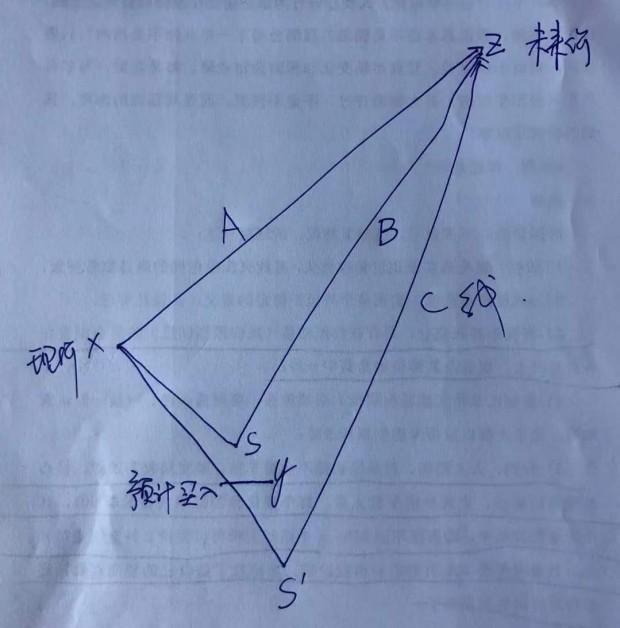

本月无交易。过去9个月，除了收到的分红都买进了国投之外，其他调仓交易占股票市值比例不到2%。仍然一如既往的满仓，持股依然是老掉牙的几只：茅台、国投、民生H、招商H、洋河、信立泰、双汇。依赖着我家阿茅今年给力，老唐前10个月侥幸获得22%+的收益（不计打新所得）。
一月份有两成左右的调仓，但至今没占到啥便宜，也没吃亏。也就是说，一月份动与不动，收益差不多都是目前这个样。详细交易及持股比例，在雪球组合#老唐实盘#里有。收益和仓位上稍有区别，是由于雪球组合不支持港股和A股混编，所以实际持仓的H股银行，组合里用A股替代。这个收益虽然不咋地，但作为一名任何一次暴跌都满仓在场的呆坐型投资者，相对于上证指数12%+的跌幅，老唐知足；
10月，读过的投资类书籍有《做空：最危险的交易》、《股市之神是川银藏》、《商界局外人：巴菲特尤为看重的八种企业家特质》、《穿过迷雾：巴菲特投资与经营思想之我见》，前三本都在唐书房发过读书笔记和书摘，最后一本，还没来得及写笔记。四本之中，前两本不推荐，后两本推荐。
很多朋友关心《手银》的进度。这里统一回复：上个月已经交稿，目前编辑中，估计元旦前能面世。新书可能比《手财》略厚一点点，两本书重复的内容应该有5%的样子。
我用佳明手表及其配套官方app，不用带着手机跑。如果可以接受背着手机跑，不用买手表。直接装一个跑步app即可，我曾经试用过的app中，比较好用的有：郁金香、咕咚、悦跑圈、Nike+，推荐郁金香（上面这个统计就是郁金香里的，自动和佳明官方app同步数据）。
本月继续呆坐不动，无任何交易。不计算打新所得，今年收益约24%。本月内除国投电力以外的持股，好像通通没有跟上大盘上行的步伐。收益率和关注的一众高手及网络大神们比，差距颇大。但作为一个常年不看行情、满仓经历股灾1.0到N.0的懒鬼来说，看看年度涨幅为负的大盘指数，也就马马虎虎凑合过了。收益的核心因素是运气好，沾了第一重仓股阿茅年度涨幅约50%的光。
熟悉的企业非常有限，持仓依然是那几张N年老面孔：茅台、国投、民生H、招商H、洋河、信立泰、双汇。持股比例及历次交易记录都在雪球组合$老唐实盘$里。组合创建于雪球全面开放组合功能之初的2014年11月25日，眨眼满两年了——除了强调一下组合里显示的民生A和招行A实际是H股之外，其他不细说了。
过去10个月，除了将各家公司的分红买入国投电力以外，其他调仓行为合计约总仓位的2%，属于券商最恨的懒到无语型投资者。即便是1月11日用川投换国投，1月28日用部分招商H换国投（狗屎运碰上了今年国投最低），对收益的贡献好像还是轻微负值（招商H涨幅大于国投），全年若更懒一点，今天的市值还会略高一半个百分点。
这个月码字多、读书少。纸质书，就看了6本，有3本写过读书笔记，只有1本值得推荐。简介如下：
①《投资的护城河：晨星公司解密巴菲特股市投资法则》，写过 书评文“投资的护城河”，好评，推荐。
②《商业的本质》杰克.韦尔奇——写过书评文“盛名之下 其实难副”， 中评，没啥看头。
③《胡作非为：人性之本与金融暴行》乔里斯.卢因迪克 ——写过书评文“坑人的书名儿”， 差评，丢。
④《用年表读懂中国史》马东峰——差评，毁灭读书兴趣的中学历史教材式流水账，丢。
⑤《透过钱眼看中国历史》波音；
⑥《透过钱眼看大国兴衰》波音——波音的这两本书，浓浓的故事会行文风格，只能随便翻翻。真对此类题材感兴趣，推荐陈志武教授的《金融的逻辑》和王巍的《金融可以颠覆历史》。
开设唐书房刚好三个月，累计发表企业分析、投资理念、读书笔记、荐书荐剧等各类原创文章超过60篇，果然够话痨。
回望自己的2016年，可以用5个数字概括：23%，2，81，613，1452。
从今年2月到12月，除了用各家企业的分红买入了国投电力以外，其他调仓不足市值的2%。1月份里动的略多，不仅将当时占比约14%的川投全部换成国投，且曾卖出约4%的招行换入国投。作为一个死多，全年的每一天都是满仓，熔断也好，股灾也罢，笨老唐一次也没躲过，通通满仓陪跌。当前持仓依然是茅台、国投、民生H、招商H、洋河、信立泰、双汇。
基本上收益就是沾第一重仓股茅台的光，仅此而已。具体比例在雪球组合$老唐实盘$里，因组合不能显示两只H股银行，用A股替代，比例上有些小差异。写总结才发现今年民生H股表现远好于A股，可能是去年落后太多的缘故吧！
因为都是多年老面孔，具体企业分析已经说成祥林嫂了，没啥新意可聊，聊聊我个人眼中的投资体系问题吧！
投资的方法很多，雪球上流派众多。作为我个人，坚信企业作为一个整体，增长速度会超过GDP平均，而优秀企业又会超过企业整体平均。故希望与可预测性较强的优秀企业长久为伴，以赚取企业经营增值为基础，捎带捡一点市场先生馈赠。不知道这个会不会被归入“中巴”、“拜巴菲特教”或是“原教旨主义价值投资”？
除了坚持以买股票就是参股企业为思考角度的同门师兄弟之外，其他我目力范围以内比较认同的投资体系有：以@David自由之路 @紫葳侍郎 为代表的低风险+套利投资体系；以@ETF拯救世界和@银行螺丝钉等人为代表的、利用历史估值和无风险收益为参考依据，对大类指数进行低估买进、高估卖出的投资体系；以@微光拂晓 @管我财 等人为代表的更注重资产价值的低估值+大分散投资体系——这些都属于靠知识获利的，方法都有逻辑支撑。但凡乐意学，乐意付出时间的，即便不能达到他们的水平，也会是市场赢家的。
至于其他流派，例如技术趋势、高抛低吸、热点追踪、宏观周期等等，属于我的笨脑筋完全无法理解的东西，视而不见、听而不闻——申明：老唐可没说这些不能挣钱，只是表明我个人理解不了。
2017年，老唐希望能继续拓展自己的能力圈，将目光放在白酒、银行和水电之外的行业，看看有没有自己能够理解的企业，有没有自己能够把握的机会，有没有能够继续深度研究并分享的新对象。我始终相信深度研究创造价值，在深度的前提下寻求力所能及的广度，相信不怕慢只怕站，日拱一卒，就会不期而至。永远只在自己熟悉的圈子里活动，在圈内形成局部的比较优势。不追求收益率领先，不惧怕收益率落后，始终坚持和优秀的企业捆在一起，寻找水平面不断上浮的池塘，然后漂浮在上面晒太阳睡懒觉，轻松投资、快乐生活，这就是我的生存之道。
这是一本关于银行股财报的工具书。这本书，自己觉得写得还比较满意，是市场上从来没有过的写法，也得到了银行业界专家的认可。前年的《手把手教你读财报1》以贵州茅台为范例，面世后搭上了贵州茅台股价翻倍有余的大风。希望这次以工商银行为范例，也有搭上银行股顺风车的好运气。
自9月1日开设了个人公众号唐书房，至今整整四个月，共计发表原创文章81篇，其中79篇为首发。主要由投资理念、企业分析、读书笔记等内容构成，算是一个保存自己想法的自留地。
从2017年元旦起，准备在唐书房连载新书。按照出版社版权要求，允许免费公布50%内容，所以，全书18课，我打算连载前面9课。顺带收集和回答读者朋友们的一些疑问。
查了2015年的总结，算了下差值，今年电子书阅读时间为613小时，读完28本电子书。至于纸质书，除了唐书房里最近四个月写过读书笔记的约10本之外，其他的忘记了。
长跑三年的跑量分别是1366、1377、1452，合计4195公里。目前体重还在79kg上下浮动，期望早日在不忌嘴的前提下降至70~75kg之间，届时想尝试跑一次全马。三年来，跑步成了一种娱乐，成了一种习惯，已经不需要谈坚持，看着天气好，就心中痒痒想出门跑，我觉着这是最近几年最大的收获。
因为打算陪我家领导出去走走，不太放心2005年的老别克出长途，就换了台Q5（颇痛苦，十二年前近30万买的君威，现在2万不到抵给4s店，肉痛ing）。在买车和新账户打新门票需求之下，左看右看，只能找第一重仓阿茅下手，其他的实在是低估的下不了手。没能力作T，只好利用手头现金同时买卖，两边慢慢搬。乱七八糟捣鼓了好几天才搞定。今天（2月5日）抽空盘了盘库，目前持仓约为：茅台38%，洋河5%，国投26%，民生H12%，招商H10%，信立泰3%，双汇2%，广发医药3%，腾讯2%。前7只都是老熟人了，其中白酒水电银行3个行业5只股票合计占总仓位约九成，是核心持股。后面的信立泰、双汇以及新面孔广发医药（159938）、腾讯控股（00700）总计占仓位约一成。
增加广发医药是因为最近啃了一些医药资料，读的愈多，无力感越强。对大学都没读过的老唐而言，想吃透医药行业，路途遥远，道路坎坷。但又非常确定医药行业将是营收利润双增长的好行业，是大牛股集中诞生地。一边想搭上成长列车，一边想激励自己学习，索性就买了点儿医药行业ETF基金，先勉强跟上行业跑着再说（没抄到底，在1.27~1.28间买的，浮亏中）。对159938的投资，可能有闲钱还会追加，一直到觉得自己有能力找出超越行业平均回报的确定性企业后再做打算。
腾讯，则纯粹是2016年9月开设唐书房以来，跟公众号这个东西打交道多了，对腾讯的好感越来越强（科技小白，实在太迟钝了）。在197.3港币的价格，建了点儿观察仓位，亏了就算做科技股学费，赚了就当小马哥对唐书房原创奉献的奖励了。说到腾讯，前几天去看了电影《乘风破浪》（电影不错），里面小马哥1998年还穷的叮当响呢，若属实，从一无所有到千亿身家，也就不到20年，确实是难以想象的互联网奇迹。
2017年1月，最重要的事情是《手把手教你读财报2——18节课看透银行业》面世了，算是填掉一个坑，了却一桩心事。这本书写的比《手把手教你读财报——财报是用来排除企业的》辛苦，花费的心血和时间都更多。但预期《手2》的受众会比《手1》小很多，几乎不可能重演《手1》上市两年销售15万册的奇迹。对老唐而言，完工出版是真正值得庆祝的大事，至于销售多少册，能对得起出版社和编辑就好。
《人类简史》，创新性地以生命演化发展的角度，而不是以民族或者国家的角度，去书写人类历史。是一种全新的角度，很有趣。但要说多么震撼，除了最后一篇关于未来智能生命部分，吓到我了，其它倒也没啥震撼的，和我的世界观价值观差不多。
不喜欢作者关于农业文明是史上最大骗局的历史观。喜欢的新观点有三处：一是认知革命，人类认同虚构的想象，才有了协作，有了战胜其它生物的力量；二是自认无知带来的探索欲，使欧洲发展了科学，战胜了自认什么都已经知道的亚洲老帝国；三是金钱和信贷是真正基于信任的产物。信任，是这个世界最顶级的资源。
很轻松就可以读完，推荐读一读，但期望值别太高，没有媒体说的什么惊艳啊、重塑三观啦那么夸张。但值得读，打算抽空把该作者的《未来简史》也买来看看。
去年12月初，一位没什么交集的雪球球友杨饭，将他即将出版的《港股投资指南》发给我。老唐本就对港股市场了解偏少，正好需要这样一本书。粗读之下，甚是惊喜，非常不错，对于理解港股市场表述习惯和市场特点颇有帮助。
一本猎奇之作，该书翻了许多资料，介绍了现代医学诞生之前的中西方医学蒙昧时期的真实故事，展示了那时他们将治病建立在想象基础上的或搞笑、或恶心、或恐怖的治病案例。小科普短文合集形式，读着很轻松，可为茶余饭后增加一点谈资。
名字起的很合适，果然一个“炒”字。一堆谈心态的鸡汤，加上一点概率知识，再加上顺势而为、截断亏损让利润奔跑之类的口诀，就可以支撑一本畅销书了。这不是作家，是坑神。很奇怪有不少人对这书评价甚高。
这本书没通读，只是大略地翻看了一下。翻看的原因，是到处遇到“巨婴”这个词儿；没通读的原因，是读了部分就发现非常失望。全书没有数据，缺乏严谨论证过程，充满了作者的臆测和突兀的结论。以社会中确实存在的一些个案，推广到“中国人”这个集合概念上，并着力从“文化”上挖根，推理出中国文化导致全民成为以自己为中心的“巨婴”。然后再组合一通网络鸡汤，搞定。典型属于“路上踩泡狗屎，最终发现是一D专政的体制导致的”套路。哗众取宠型儿的文字堆砌，不值一看。
强烈推荐的一本医学科普书籍。尤其是第一章“癌症是什么”，第三章“癌症治疗，现在和未来”，以及第五章“那些坊间关于癌症的传言”特别精彩。
作者李治中是美国杜克大学癌症生物学博士，跨国顶尖制药公司癌症新药开发部资深研究员，实验室负责人。他用通俗易懂的语言，科普有关癌症及当前治疗方式现状及发展，并揭露了市场常见的一些有关癌症体检和治疗的谋财害命或谋财不害命的把戏。
读后受益匪浅。我自己都差点去做个据说能很轻松查出癌症风险的癌症体检套餐，读了这本书不仅省下几大千，还少了提心吊胆的恐吓。相对于二三十元的书钱，消费者盈余无限大。感谢作者，强烈推荐人手一本，并花上一个下午读完。
投资这东西，今年收获的是三五年前播下的种。现在播下去的，就是三五年后的庄稼。天天在市场里杀出杀进的那套，老唐不懂、也不想懂。天天研究央行OMO、看习总讲话、听椰奶表态的另一套，格局宏大、场面热闹，然而并没有什么用。踏踏实实地看我的财报，期望几年后有另一拨庄稼收。
中午，心血来潮去雪球看了看，偶然发现“老唐实盘”组合今天翻倍。相对于一年三五倍的大神而言，两年零三个月才翻了一倍，不值得嘚瑟。但作为累计只有屈指可数的几次小量调仓，平均每天看盘时间不会超过5分钟，始终是满仓状态，从没躲过任何一次股灾，没抄到任何大底，没买中任何黑马，没用过一分钱杠杆的实盘，老唐还是知足于此表现。且自认这是可以复制的投资正道，是可以慢慢一直走、一直走、一直向东北方向前进的坦途。
坚持股票代表企业所有权的理念，坚持不理解的钱不赚的原则，坚持承认无知、预留安全边际缓冲的理念，始终和持续赚钱的优秀企业站在一起，日复一日，伴随着资产增值的，是对人性的理解，对商业的理解。这就是老唐的两本书以及唐书房，始终坚持传达的投资理念。
财报，不是用来选牛股的，无论是投资还是生活，当你排除了垃圾人，排除了垃圾企业，绕开了哪些谋杀财富和生命的陷阱，快乐和增长只是多少和快慢的差异。书房的《年报浅印象》系列，是对“排除”的现场直播。
然而，顺着大道走，并不容易。因为小路上始终有暴富的幻象飘来飘去，不断有悲欢离合上演、有大起大落高潮迭起的精彩剧情，人群自然挤得摩肩接踵，对市场参与者来说，小路太有诱惑力了！而大道上，则永远是空旷宽敞，路人脸色平静、默默前行，没什么热闹可看，一副稀稀拉拉的样子，凑不成群，一步一步，日拱一卒……
上午在475.5元上方，按计划减仓了茅台。减的数量为持有茅台总量的10%，约占总仓位的4%。
本来计划开通B股，用减仓茅台的资金，买点儿长安B和古井B，出去试试水的。结果昨天跑了一天，没搞定。说是外管局现在对所有涉及投资的外汇购买行为一律采取了严管措施。银行和券商都暗示，可以用出国旅游等目的购汇，然后一样的购买B股。老唐没敢。胆小，一者这种方式兑换资金数量有限，二者怕我党秋后算账。不值当，索性算了。
减仓资金，抽出来一点装修费用，准备装修房子，加了约1%出头的双汇，还剩余近2%的资金一时找不到方向，就暂时先闲着吧！不计算抽出资金，当前持仓情况状态为：茅台38%+；国投27%+；招行H8%+；民生H8%-；洋河5%+；腾讯5%+；双汇4%+；信立泰3%+；海康1%+；现金2%-；观察仓伟星和宋城不计。
唐叔，我的流程写下来供参考一下。我的-外汇购汇-购汇委托-30秒同意申请-购汇委托页面，资金用途是外汇理财含b股，交易对象和项目都b股，所需金额和币种只填写换汇的数量，买入货币港币，进现钞/现汇，现钞可以直接从华泰转入，现汇必须通过招行手银端操作转入证券账户，购汇金额和上面所需金额要一致哦-输入密码提交，就成功啦。
哈哈，感谢感谢。搞定了，原来受饕餮海兄教程误导，是交易对象写成华泰证券的原因。按照你的写法，交易对象和购汇项目都写成B股，把99美元和120港币开户费用搞定了。感谢感谢~~一窍不得，捣腾了一天，华泰和招行员工都不专业，还是你专业。
回顾一下有关交易。操作上，主要是减仓了两次茅台（目前茅台仓位还剩余约37%+，依然保持第一大持仓）。一次在340~350之间，一次在475元多。第一次，是为了准备出游，在340~350之间卖了点儿，淘汰了陪伴我12年的老君威，换了一辆Q5。另一次，则是按照计划减的。减仓后，抽出部分资金，准备下半年的新房装修。
上半年，从茅台上减仓下来的钱，除车和装修占用之外，剩余的部分，主要加在腾讯、双汇和海康上了。其中双汇是之前的老股，而腾讯和海康都是今年新进入的品种，是和老唐之前关注的领域大不同的新领域。这部分，老唐也在摸索中，有些问题还没有彻底想透，是个人的缓慢进化过程。慢慢想清楚了，或许也会码字整理出来。
这两只个股，都和唐书房有关。对腾讯产生兴趣，是去年9月开了唐书房公众号之后，接触的越来越多了，尤其是某日被一件小事激发了好奇心，看了两份财报研报，遂在197.3的价格建立了观察仓。之后又阅读了吴晓波的《腾讯传》，在270之下又追加两次，随着腾讯不断创出历史新高，目前仓位占比接近6%了。
对海康的研究，更简单了，直接是书房各位朋友4月24的点杀。《王者海康》四篇文章，是在宁波一家酒店里躲五一大假的时候写的。时间比较充裕，也就看的多了一些，写了份一万三千多字的唐式研报，将其定位为“唯一一家后悔覆盖晚了的企业”。五一大假一开盘，就买进了1%仓位，两个月有约40%的涨幅了。哭死。买1%之后飙升，是投资者最杯具的事情了吧？
另外，6月15和16两天，开通了B股投资，在10港币以下买入了一点长安B，在31港币附近买入了古井贡B，合计份额仅约1%+，出去试试水。截止今天，持仓个股及市值占比大约为：茅台37%+，国投26%+，招行H9%+，民生H7%+，腾讯6%-，洋河5%+，双汇4%-，信立泰4%-，海康1%+，B股1%+。另有观察仓伟星新材和宋城演艺，占比太小，忽略不计。
说完投资，再说说和投资相关的思考。上半年在各位朋友的鼓励和敦促下，陆陆续续也码了不少和投资相关的文章，其中既有理念和估值方面的思考，也有具体企业研读及研读方法分享。自己觉得其中关于宋城、老板、信立泰、茅台、双汇、伟星、海康、长安及雅戈尔的二十来篇文章写得用心；《浅印象集》里一堆淘汰对象，写得也算风趣好看，反正偶然我自己也会翻回去看看，蛮得意的。
上周，除了加仓腾讯的资金外，还另外收到一笔钱（别猜了，就是版税和房租）。想办法捣腾成港币，买进了约1%+的张裕B。没提前说，因为B股成交量实在太小，很艰难才完成买入。不过呢，说点伤心事让大家高兴一下：虽然老唐瞅了有些日子，然而由于资金到位时间的原因，我的平均买入价格，比周五收盘价高。
张裕B，算是个名坑了，埋葬过无数“价值投资者”。股价从2012年的60多元港币高点，一直下跌到2014年的14元多港币，三年跌去约3/4。然后再盘三年，目前也就19港币，依然只有高点的1/3；对应的A股张裕A，同样从80多元跌至20元多元，同样是三年跌去约3/4，然后再盘三年，现在也就36元，不到高点的1/2。
股价暴跌的背后，一方面是企业净利润腰斩，从2011年财报的19亿多，下挫到2014年的9亿多；另一方面是市盈率腰斩，从22倍左右跌到11倍左右。50%×50%=25%，典型的戴维斯双杀，公司市值就这样不见了3/4。那么，现在为什么老唐要跳进去呢，会不会为冢中再添一具白骨呢？下面聊聊老唐的大致观点。
我国葡萄酒行业在2012年前，是高速发展的。据券商研报数据，1999年到2012年，行业收入年平均增速高达22%，利润总额年平均增速达到26%。2012年，行业整体利润增速更是创下历史新高，达到了52.4%。和白酒寒冬一样，在2013年反三公大环境变化下，葡萄酒行业转入低迷。
但是，老唐认为，人们对陶醉感的追求是永远不会消失。烈酒、葡萄酒、啤酒各有各的饮用场景，谁也无法完全替代谁。这三种主流酒水中，目前葡萄酒给人的“感觉”最好。各类消费者调查都能显示，消费者在谈及葡萄酒时，往往将其和高雅、健康、养颜、防衰老、情调等多种正面词汇联接在一起。反而是白酒和啤酒，常常激发一些负面词汇。
根据2017年天猫消费数据报告，葡萄酒是仅次于白酒的线上酒水第二大品类。在中国这样一个广大的市场里，该品类遥遥领先的龙头企业，市值居然仅仅110亿（以B股价格计算）。
以2016年葡萄酒消费数据看，全球平均年人均葡萄酒消费量是3.3升/人，而中国是1.6升/人。当然，并不是说偏低就一定会向全球平均水平靠拢，只是说可能有增长空间。按照业内专家的说法，2020年，中国将超越英国，成为仅次于美国的全球第二大葡萄酒消费市场——这种推测，姑妄听之。
然而，葡萄酒终究是舶来品，人们的心智当中，对进口葡萄酒的认可度相对更高。所以，这几年进口葡萄酒增长迅猛，在中国葡萄酒总销量里占比越来越高，从2008年的约14%，已经上升到2016年的约39%。
这当中，葡萄酒进口关税的不断降低乃至归零，起到了推波助澜作用。目前，新西兰、智利葡萄酒进口关税已经降为0%，澳大利亚葡萄酒从2017年1月1日起，降为5.6%，到2019年要降低为0%。国产葡萄酒和进口葡萄酒已经算是同场竞技了。相对而言，国产葡萄酒是处于弱势的。消费者更认同洋葡萄酒，事实上，葡萄种植和葡萄酒酿造，中国酒企（包括龙头企业张裕），在经验和水平上的确还有不小的差距。
这也是张裕股价低迷的重要原因：进口葡萄酒在心智和品质上，都有先天优势。即便未来中国葡萄酒消费量上升，张裕在其中又能分到多少羹呢？令人担忧。那么，为何老唐又选择此刻扎进去呢？
首先，葡萄酒这个行业，产业链比较长。包括上游的葡萄种植，中游的葡萄酒酿造，下游的葡萄酒销售。绝大部分资本是不愿意参与上游的。因为赚钱来的慢，不仅资金投入量大，而且还要等得起。
酿酒葡萄树，寿命约60年。但种下去前3年所产葡萄不能用于酿酒；前10年以内，葡萄根系扎入土壤还不够深，所酿之酒，品质一般；其后30年才是是葡萄树的高产期；到40年之后，葡萄产量降低但品质提升；50年之后的葡萄树，便可称之为老藤了，所产葡萄是酿出高品质葡萄酒的绝佳材料。倒是和浓香白酒的酒窖有异曲同工之妙。
对于中国这样一个高速发展的经济体，你说要资本投入10年后才能考虑见效益，恐怕很难有资本进入。毕竟10年，台上老大是谁，体制会如何演化，土地所有权或租用权会怎么变，大家心里或多或少还是有点忐忑的。这一条就决定了绝大部分市场参与者，或采用收购葡萄酿酒，或者干脆就直接购买（进口）散酒灌瓶销售的模式，或代理境外瓶装酒在中国境内的销售。都是快钱。
采用收购葡萄酿酒，注定了原料品质和来源无法保证，企业不可能将大笔资金用于渠道和品牌宣传，因而这部分企业天然做不大，对市场领先者很难构成实质威胁。而进口散酒或者瓶装酒，可以依赖的主要是销售能力和渠道。国内葡萄酒企业，有谁的销售能力和渠道，能和张裕比呢？张裕的市场占有率10%，遥遥领先其他红酒企业。老二长城不到5%的市占率，老三威龙不到2%，老四中葡不到1%。曾经名噪一时的“DYNASTY王朝”，2012年至今连亏5年（股票也停牌近5年），已经没落到拍卖家当度日了。
因而，当张裕也开始搞进口酒的时候，进口酒酒质高于国产酒就不再是缺点，反而可能成为优点。
回顾一下本轮调整前后，公司年报里关于销售计划和战略的表述
上表可见几个细节：
①2013年和2014年两年，面临反三公带来的中高端市场低迷，公司营业收入大幅下滑，企业管理层明显手忙脚乱，不得不将原有战略进行修正，加强低档酒销售。
②在进口酒的无情压力下，公司自2013年放弃抵抗，也参与到抢夺进口酒红利的生意中来。过去三年，张裕在国际上不断的大手笔投资和收购酒庄，就是意图用张裕的品牌和销售渠道，将海外优质葡萄酒生产能力嫁接到中国市场来；
③2015年和2016年，销售收入高于2013和2014年，但净利润持平，公司从成本和销售费用上增加了投入；
④从2015年起，公司已经连续三年回到原战略定位，显示公司已经度过危机，稳住了阵脚。销售数字也能看见稳步攀升迹象；
⑤公司净利润率一直保持较高水平，即便给集团每年缴纳2%的商标使用费后，公司净利润率也始终高于20%，（2016年葡萄酒行业整体净利润率仅约6%），证明公司产品在消费者心目中仍然显著的品牌溢价。
再看一张表
这张表，能够很清楚地看见，公司产品从2014年开始，销售量已经开始企稳回升了。但2015、2016和2014年不同的是，2014年是在毛利率降低状态下的增量，而2015和2016则是维持毛利率基本不变的情况下，出现量的“显著”增长。这种量的显著增长，说明公司已经走出原有客户群，开始获得新客户的青睐了。而且很有趣的是，这些客户和2011年顶峰时期的客户不是同一个消费群，最直接的证据，就是看均价。
2011年销售8.95万吨葡萄酒，营收49.7亿，不含税出厂吨价5.55万元。而到了2016年，吨价降低为3.75万元左右。消费群体下移了；而白兰地，则走出来相反的轨迹。2011年，吨价约1.8万，到2016年，吨价变成约2.27万元，消费群体上移了。
从这组数据中，我们可以窥探出，张裕和茅台一样，已经走出了反三公的阵痛，完成了消费者群体的转换。实际上，这也是中国葡萄酒行业的现实转换，过去对价格不敏感的消费群体消失了，整体行业从高端下移，进入日常饮用档次。
根据发改委的统计数据，我国36个大中城市中低档干红葡萄酒，2017年前三季度平均价格为74元/瓶（750ml），主流价位在40~120元之间，这也恰好是张裕主力产品的定价区间。据说卖最好的是张裕解百纳1937纪念版，价格约100元，好奇的朋友可以买来品品。张裕解百纳可是全球累计销售4.6亿瓶，排名世界第一的大单品哦，质量应该还是靠得住的。
当然，进口葡萄酒也是瞄准这个区间的，据海关总署数据，2015年至今，中国进口葡萄酒的平均单价稳定在4600美元/千升水平，折合人民币23元/瓶（750ml），和张裕葡萄酒价格区间基本重合（2016年张裕葡萄酒吨价3.75万，折合单瓶约27元）。
不过呢，由于国内厂家和经销商普遍规模较小，无法对品牌建设做大量投资，海外品牌又不熟悉中国市场和中国文化，不敢贸然为新市场投入大量资金。即便是海外大型品牌商，由于葡萄酒在全球市场的集中度都比较低，全球前十大葡萄酒公司2016年合计的市场占有率也只有13.3%，任何一家公司都很难下决心将巨额资金和人力，投入到一个不熟悉的新兴市场去。
此时，拥有品牌美誉度和良好渠道的本土龙头，完全可能会是海外酒商首选合作对象。老唐个人认为，不管是引入海外原酒生产，还是直接代理海外瓶装酒，张裕及张裕的渠道，都是可以大有作为的。进口酒不仅有竞争，也可以有合作。
再来看一张图
这是一张张裕的营收和净利润图，图中我们可以看见，危机后的这几年，张裕的净利润非常稳定，保持在10亿左右，而营收在2015和2016年已经开始缓慢增长。
现在，张裕B股价约19港币，折合人民币不到16.2元，按照总股本6.85亿计算，市值110亿人民币，对应10亿左右净利润，市盈率11倍。
张裕的资产负债表非常干净简单。以三季报为例，可以简化为货币类资产22亿，经营类资产99亿，资产合计121亿，有息负债约9亿，主要部分是去年底披露的6亿3.48%~3.92%利率的贷款，估计是带有支农性质的补贴类贷款，这种款项，贷出来做理财都超值。
经营上很健康，年50亿左右销售，有两三亿应收账款，有几乎同等数量的预收款，当做两抵。应收款主要是各大型商超账期，回收基本没有问题。2006年~2016年，净利润总和121亿，经营活动现金流金额118亿，基本吻合，利润含金量十足。
再看分红，过去4年，现金分红率一直保持在当年净利润的1/3左右，年分现金3亿多，相对于现在110亿市值而言，分红率约3%。
公司股权结构均衡，如下图。
公司总股本6.85亿股，其中A股4.53亿股，B股2.52亿股。公司大股东张裕集团，由公司管理层及核心员工73人持股45%，外资企业持股33%，国际金融公司（支农性质）持股10%，国资持有12%，整体力量均衡。
包括董事会也是如此，13名董事，中方5名，外资4名（3名意大利人，一名代表国际金融公司的华人），独立董事4名（3名会计师，一名律师）。治理结构基本令人放心。
综上所述，张裕B是中国葡萄酒行业龙头，在最恶劣的环境里，年净利润也能做到10亿左右，产品毛利率66%，净利率超过20%，销售基本100%收回真金白银；目前经营情况有明显向好迹象，行业前景看好；管理层和核心员工与股东在同一条船上，公司股权结构合理，内部治理基本靠谱；当前股息率约3%，估值110亿，低估，值得买入。
2017年的股市，杯具和洗具共存，全年各板块涨幅出现显著差异。最好的上证50板块涨幅超过25%，最差的创业板跌幅超过10%。更牛的是香港股市，恒生指数涨幅36%，牛冠全球。纳斯达克和道琼斯亦分别以29.11%和25.68%的涨幅，超越A股表现最好的上证50指数。
作为投资方向主要集中在A股、港股和美股的中国投资者而言，今年整体无疑是个牛市。但对于具体的市场参与者来说，就很难说了。最新数据没看见，但截止11月底的统计是有超过2/3以上的A股年内股价是下跌的。
凑巧前几天在雪球看到一位叫@流浪行星 的朋友，发了他自己的一个实盘数据，很有意思。实盘开户于2016年12月23日，截止2017年12月20日，正好一年时间。由于他这个账户资金有特殊用途，只是坚持每天做逆回购，最终收益3.54%（实践证明，天天忙活逆回购，战果还不如一开始就买成货币基金不动——银华日利同期收益率3.61%），最终收益跑赢近75%的实盘。
注意，这是实盘，不是组合。是所有真实证券账户关联了雪球账户的投资者之间的比拼，是真金白银的角斗场，相当于对A股整体市场做了大样本抽样调查。该调查显示75%的投资者没有跑过货币基金，考虑到25%的赢家里还有新股中签因素，若刨除，结果可能更惨。
这实盘数据，比老唐9月推送的《先赢，而后求大赢》的组合数据更可信，更强势地佐证了传说中的“七亏二平一个赢”的“七亏”是真实的。
以今年公募基金表现最好的偏股主动型基金做参照看，偏股型公募基金整体平均收益率12.19%，冠军收益率约68%，前十名收益率均超过55%。所以，各位朋友写自己的年终总结时，别被三倍五倍十八倍的大神吓住，大致上说今年收益率超过12%的，就算不错的。超过55%的，已经可以启动表扬和自我表扬小程序了。
老唐今年的相关个股及操作，已经在11月24日的《三年三倍的背后（上）》和《三年三倍的背后（下）》两篇文章里做过回顾，今天只需补上11月25日之后的变动即可。
变动一共三笔，都在书房实时推送过：
12月1日：趁腾讯大跌，从招行H上调整了约2%仓位到腾讯；
12月13日：新增约2%资金购入腾讯；
12月15日：新增约1%资金购入张裕B。
在11月24日推送《三年三倍的背后》一文时，$老唐实盘$组合，显示净值为2.88（2014年11月25日为标准1），当日账户实际净值3.08，差异7%；截止今天，组合显示净值为2.98，实际同口径净值（即扣除本月追加资金）为3.19，差异依然为7%。差异是雪球组合不支持录入港股和B股造成的。忽略本月新增资金的本金和收益，忽略新股中签收益，今年收益率约62%，估计书房里有大量朋友收益率超过此数，恭喜跑赢老唐的高手高手高高手们！
今年持股数量相比往年有增多，但前3大持仓占比2/3，前7大持仓占比90%，依旧属于集中持股型。收益主要来源于茅台、腾讯和招商H，而双汇、国投和民生H则主要从事拖后腿这项很有前途的工作。
今年自己的投资体系，有了两点细微变化，其一是扩大了覆盖面，尤其是增加了腾讯和海康两只过去的老唐不太可能涉足的科技股，其二是在思考投资对象的时候，优秀和廉价的权重比例正在慢慢发生变化，具体来说，优秀的权重在逐步增加，廉价的权重在逐步减少。廉价权重占比大的投资决策，应该配备分散这一格派法宝。
自我反思，这两年老唐个人的主要不足，不是没有赶上内房股、保险股或其他什么热点暴涨板块，而是在冲着捡便宜去的国投电力上配比过重（最高时约1/4仓位）。喜庆时刻，就不深刻批评自己了，点到即止，以观后效！
以上35家公司，是截止2017年3月1日之前的阅读。这些公司是按照交易所财报披露顺序依次看的，无挑选。其中加红的齐星铁搭、永新股份、晨鸣纸业、东旭蓝天四家，股价走势与判断相反，属于老唐被打脸的文章。其他31家运气好，年内股价走势基本能够印证判断。3月1日以后，财报密集披露，只能挑选部分公司来看了。书房分享涉及到16家上市公司，其中加红的国投电力和白云机场两家打脸，尤其国投电力，是连续三个耳光。
备注：
①以上公司中，伟星新材文章发布日买入少量观察仓，7月14日190亿市值位置卖出换入双汇，见7月14日书房推送；
②长安汽车文章发布后，少量买入比A股便宜40%的长安B，持有至9月14日，小赚3%卖出换入古井贡B，见9月14日书房推送；
③因为只是对比涨跌幅，涉及港币报价的腾讯和B股市值，没有转换成人民币计算。
投资者职业病，装修过程中，倒是看了几家定制家居公司的财报，可惜除索菲亚以外，都是上市时间较短的次新股，志邦、金牌、欧派、尚品均在今年内上市。
读过《手把手教你读财报》的朋友都知道，出于对IPO美化财报的警惕，出于天朝市场对造假的罚酒三杯式惩罚力度，没有五年公开财务信息可供对照研究的公司，老唐是不投的，无论它多么有前景。宁错过，不做错。市场金钱无限，我的本金有限。数学告诉我，亏损40%后需要获利67%才打的平，所以防踏错是比获利更重要、更优先考虑的事情。
唯一上市时间较长的索菲亚在这次接触中，体验不好，且八九月份看估值偏贵，也就没有做进一步跟踪。
初步看来，这个行业倒是挺值得关注的：房价越贵，人们越有动力通过定制家居来创造或者节约空间；经济条件越好，人们越有动力通过定制家居来满足自己的独特审美或个性化需求。
另外，似乎东方雨虹也挺有潜力。还没顾上认真看它家财报，倒是遇到很多家装修公司都拿东方雨虹的防水涂料和防水卷材作为标榜自家用料靠谱的证据。
最近，不少公司发布2017年度业绩快报，其中有三家公司是书房成文分析过的，有两家是老唐的持仓股。这几家企业的业绩，都在三季报里预告过了，实际业绩也都在预告的范围以内，本次预告实际上没有任何新信息。
在谈公司之前，先小科普一下业绩预告的事情。有很多朋友不知道什么公司、什么情况下需要发布业绩预告，我记忆里的规则大致是：
①中小板和创业板企业，必须在每年10月发布的三季报里做出全年业绩预告；
②主板企业以下三种情况，必须在三季报里做出预告A.当年可能亏损；B.当年可能扭亏为盈（就是上一年是亏损的，今年预计将盈利）；C.业绩同比可能会增长或降低超过50%。
③其他情况，企业随意，可预告也可不预告。
三季报预告以后，企业「可以」在年报发布前，主动披露业绩快报（就是今天谈及的这个）——注意「可以」表述，也就是说并非规定，企业自己看着办，愿意披露就披露，不愿意就拉倒。
但是也有两种情况是必须的，一种是中小板和创业板企业，如果和深交所预约的年报披露时间是2月底以前，那么业绩快报就随意。如果在2月底以后，就需要在2月底以前发布业绩快报；另一种情况是，因为三季报发布的时候，全年还没有结束，所以业绩预告有可能不准。如果全年结束后，上市公司发现实际业绩和三季报里预告的业绩有重大差异，也需要发布业绩快报。
之所以说「记忆里的大致规则」，是因为这是多年前的规定，多年没怎么关注预告事项这种事儿了，有微调也说不定。想知道准确规则的，自己上深交所和上交所网站去查规定。
信立泰三季报里预告的是0%~10%增长，结果4%，中规中矩。整个业绩预告里没有任何值得注意的新信息。所有关于信立泰的经营特点、发展隐患和预期轨迹，均仍可直接阅读去年3月的《投机者信立泰》上下篇和去年8月的《信立泰中报速读》旧文（号内搜里搜“信立泰”即可）。
那三篇文章里，不仅有对信立泰的分析，还直接给了估值数据，目前暂时没有需要补充的。
信立泰本轮高点出现于去年最后一个交易日，最高股价45.68元，对应市值478亿，调整最低位置出现在本月9日，最低股价36.55元，对应市值382亿，基本就是围绕合理估值空间小幅波动，既没有触及有便宜可占的卖出区间，也没有达到有便宜可占的买入位置。因此，我呆坐傻看至今。
海康的最早覆盖是去年的五一节，源于大家的点杀。详细观点见《王者海康》四篇文章。在五一过后的第一个交易日买入后，随着对它的继续学习，我对海康的观点有轻微调整，是象乐观方向调整。比如去年11月1号《乱炖三季报》对海康的阐述，以及本月7号大清早发布的《暴跌之后》，在海康股价收于36.61元的时候，老唐还妄想着再跌一点，准备加仓海康呢！
很遗憾，没给机会，10个交易日直接弹起来超过20%，口水又白流了。此时可以说说老唐当时对海康的计划了：准备在31以下和26以下，各加仓2个百分点。
为什么是这两个价位，说破了也不神秘，就是30倍市盈率和25倍市盈率的位置。背后的原理嘛，以前阐述过，对于优秀企业，最高可以给到合理估值的上沿，公司三季报预告全年业绩85~100亿，因比较看好，拍脑袋取偏乐观值95亿（实际快报为94亿）。总股本92.3亿股，按照30倍和25倍市盈率计算，价格分别为30.88和25.73元。
这背后隐含着我运用pe估值时的三大核心前提：第一，我认为海康的利润是真金白银；第二，海康维持当前盈利所需资本投入较小；第三，海康确定会有25%的增长。连续三年25%的增长，意味着三年后业绩翻倍，25倍市盈率买入，符合老唐估值法要求的“三年后若以15~25倍市盈率卖出能赚一倍就是值得买入的位置”。——一说破，又会收获一片鄙视的眼神咩？
老板电器，我不持有。只是因为大家的点杀，于2017年4月写过一篇分析文章，文中给出的结论是以当时的市值386亿买入，很难获得满意的收益率。
最终的选择是，我不敢投。
今天，老板电器封死跌停板，但市值依然有422亿，比成文当日的386亿高出近一个涨停板，所以，老唐引用该文，并非为了嘚瑟自己看对（若以市场表现衡量，老唐经常看错的。务必在看到老唐嘚瑟正确案例时，别忘了老唐不说的那些被打脸的案例，比如白云机场。再说了，其实看对也不值得嘚瑟，闭着眼睛瞎说也有50%概率对），而是想强调该文排除企业的思考方式：书房多篇文章都曾强调过，能否回答该企业“何以长期保持高毛利而没有引发更多产业巨头进入参与竞争”，是区分懂不懂一家企业的核心问题。
如果不能清晰有说服力的回答自己，那就足以证明它属于自己不懂的范围。不懂怎么办？不懂不去就是了，不懂不去比会运用180种方式计算企业估值可要重要百倍！
投资，是个很有趣的考场，它只是让我们在几千道题里，自由挑选几道自己有把握回答的问题来答即可，不答的题完全不扣分，甚至只要敢承认自己一道也不会，老师一样给班级平均分（指数基金）。这样的考试的规则，何必要去挑那些难度系数超高的题来操练呢？
当然，有些情况下，可能是自以为懂了，能够给出答案。实际上是运用循环论证，自己骗了自己——说起自己骗自己，想起一个经典桥段：前段时间有某企业计提炒股亏损数十亿，导致业绩巨额下降，有人转发一篇奇文给我看。文章挺长，里面有段论证很别致，大致是说该企业的炒股战绩，如果不算亏损的部分，实际是盈利的。这种自己给自己注射麻药的狠劲，也算是登峰造极了。
不懂而以为懂，在投资界常见，既有知识因素，也有心理因素，总体还挺难解决的。但一般来说，如果在研究任何一家公司之前，都能问自己一遍《看不懂与看得懂》一文谈到的4个问题，掉坑的概率会小很多。
四个问题拷贝在此供参考：
①这家公司靠销售什么商品和服务获取利润？
②它的客户为何从它这里采购，而不选其他机构的商品或者服务？
③资本的天性是逐利。眼看这家公司坐享丰厚利润，为什么其他资本没有提供更高性价比的商品或服务，抢占了它的市场份额，或逼迫它降低利润空间呢？
（更高性价比，即可以是同样质量/数量+更低价格，也可以是同样价格+更高质量/数量）
④假设同行挟巨资，或者其他产业巨头挟巨资参与竞争，该公司能否保住乃至继续扩张自己的市场份额？
阿茅分红了。今天按照原定计划买入1000股分众传媒作为观察仓，目标看到1250亿以下市值介入；剩余分红资金分别在415.8港币和38.38元加了腾讯和海康——今年分红除了古井B分红已经顺手加在古井B上，其他分红资金都会加在腾讯和海康上。后期数额太小，不再实时通知。
截止此刻持仓比例为：茅台47%-，腾讯20%+，古井B7%- ，洋河7%- ，民生H5%- ，招行H4%- ，信立泰4%- ，双汇3%+， 海康3%- ，观察仓分众不计，2018年收益8%+（不含新股），自2014年11月25日建立的老唐实盘组合，当前净值3.18元；同期实际净值3.48（不含新股），差异由于组合无法录入港股和B股造成。
简要回答两个加仓相关问题，都是后台多次收到提问的：
一个是关于老唐估值法运用的。几乎所有的书房朋友都知道老唐的估值体系很简单，一句话就可以概括：三年后以15~25倍市盈率卖出能赚一倍的位置，就是可以买入的位置，高杠杆企业打七折。（实践中，对于商业模式特别优秀的少量企业，老唐最高会放松至30倍市盈率）。
有少部分人会询问（甚至有质问的）老唐：“银行股目前市盈率才几倍，就算三年不增长，也符合你的买入要求，为什么你不加买？”能问这个问题的，是漏看了老唐多次阐述的这个简单估值法的前提条件，此处再次重复一遍：
使用老唐的市盈率简化估值大法，有三个重要前提：净利润是否为真？是否能持续？持续是否依赖增量资本投入？只有在这三个问题的答案分别为“是是否”的时候，市盈率简化估值大法才能放心使用，否则就可能掉进坑里而不自知。相关阐述请自己翻看《老唐估值法及运用解析》三篇，以及《Roe指标的正确应用》两篇。
也有很多朋友发信息来问，老唐拿着分红资金买入的时候，买入对象，例如腾讯、海康等并不符合老唐估值法的三年翻倍要求，为什么老唐会买呢？
道理并不复杂：第一，老唐多次说过自己巨讨厌现金这种包赔的资产，除手中留有大约家庭开支一到两年的备用现金外，其他的现金总要第一时间想办法换成其他预期收益更高的资产；第二，老唐估值法的买入要求是一种比较严格的要求，适用于较重要的决策。而分红总额也就总资金的两三个百分点，不值得为之慎重决策。少量买入手中合理范围内的持仓股，等同于当初决策买入时提高了几分或几毛买入价，也就接受了。
在《手把手教你读财报2》的219页，老唐曾分享过一个管理学的不值得定律：不值得做的事，就不值得把它做好。应用在这里，就是本就是1%~3%总额资金，无论怎么严苛慎重对待，带来的收益依然微乎其微，不值得拿着它观察和等待。
这个思路同样适用于其他活动，例如现金套利。过去我还偶尔拿着现金做做货币资金套利，后来反省它就属于“不值得定律”范畴内的事情。就手头几十万现金而言，套来套去的忙碌，相对于直接放在货币基金里不动，一年时间里增加的收益可能就几千元。所浪费的看盘和交易时间，如果用来阅读和思考，回报可能远远不止此数。所以，现在基本不玩这个了。
本打算将所有的帖子全部删掉的，结果禁言期间禁止我操作，那就等禁言期满吧。删除之前，我把“老唐实盘”在雪球的大致记录搬这里存一下。翻了总结，过去几年雪球上有据可查的记录是：2014年收益62%，年底持仓46%茅台，23%民生，23%招行，8%川投。
2014年11月25日，雪球正式开放组合功能，老唐依照自己的账户真实持股比例，建立了老唐实盘组合。
2015年收益13%，年底持股茅台、洋河、民生H、招行H、川投，因为有了组合，比例没有文字记录，组合具体比例此时好像已经无法查看，但应该变化不大。
2016年9月开设了唐书房，年底就有了总结在书房里，全年收益23%，年底持股为茅台、国投、民生H、招商H、洋河、信立泰、双汇。具体情况可以直接阅读《老唐的2016年》
2017年，借由书房朋友们的点杀和监督，将覆盖的公司扩展了部分，纳入几家新公司，很巧，全年收益和2014年一样，也是62%。年底持股茅台40%，国投15%，腾讯13%，民生H6%，招行H5%，洋河5%，信立泰5%，双汇4%，海康2%，古井B2%，张裕B1%，粤高速1%。具体情况，可以直接看书房总结《老唐的2017》。
组合关停时，显示净值3.0583。截止今天收盘，持仓比例为：茅台46%+，腾讯21%+，古井B7%-，洋河7%-，民生H5%-，招商H4%-，信立泰4%-，双汇3%+，海康3%+，观察仓分众不计，不计打新收益（本身也没几个钱，基本不影响收益率）2018年收益1%+。
近期陆续有大约相当于目前总市值20%左右的新增资金准备入市，迫切等待大跌中，预计会在适当价位增持腾讯、海康和分众（其实古井B也想加的，就是钱出不去）。
今天，突然特别深刻地get到了和天南兄喝茶时，他告诉我的那句话：见见喜欢的人，聊聊喜欢的事，将时间“浪费”在喜欢的人身上，人生快意，莫过于此。我浪费太多时间在讨厌我的人身上，是我的错；我和别有用心的人针锋相对，是我的错；我用垃圾人的语言去对付垃圾人，却忘记旁边被飞溅污染的，还有喜欢我的人，是我的错；我意图去改变不可能改变的人，是我的错……
删掉了雪球组合和旧文，今天在这里完整记录一下实盘组合的演变情况，以构成持续观察范本。2013年之前，没有公开记录，忽略。从有公开文章的2014年开始。
相关说明：
①前四年收益率记载分别位于《感恩2014》、《表怕，年终总结有老唐垫底》、《老唐的2016年》和《老唐的2017》四篇文章里；
②虽然即使计入打新，收益率也没有什么变化的，但为了避免某些朋友追问，老唐还是强调一句：以上收益均不含打新收益；
③2015和2016两年，因为有了实盘组合，所以文章里没有记录个股具体占比。组合停掉后，目前无法查询个股占比了；
④对于中途增加或者减少资金带来的收益率计算，我是按照追加或减少时已完成收益率反推年初资金变化。举例说，假设年初资金为1000，某日新增资金100，增加资金时当年已达成收益率为10%，则将年初资金调整为1000+100/（1+10%）=1091，当年收益率直接以1091为基数计算。同样，如果期初为1000，某日抽走资金200，抽走时当年实际达成收益率为-5%，则调整年初资金为1000-200/（1-5%）=789.5，当年收益率直接亿789.5为基数计算。
总而言之，假设新增或减少资金在年初时就在另一个持股完全相同的虚拟账户存在，那个账户的合并与删除不影响现有账户收益率的计算；
⑤对于以港币计价的港股和B股，在计算市值时，直接考虑汇率因素。比如元旦将所有港股B股全部折算为人民币与A股加总，得出总市值基准。其后计算总市值的时候，直接将港股和B股价格乘以最新港币汇率计算人民币市值，与基准日人民币市值对比；
⑥目前手头还有约16%的新增现金伺机加仓，目标腾讯、海康、分众（古井B和张裕B，其实也有意向，就是钱出去很麻烦，只能作罢）。
感谢市场给机会，在我手头来了笔较大金额的现金时，肯跌下来接我上车。过去6个交易日里，老唐合计增持了腾讯、茅台、海康约9%仓位，目前手头还有约11%的现金。这11%是为“腾讯、海康、分众”准备的。如果茅台跌幅较大而其他目标看不到希望时，也不介意继续增持茅台。
至于买入时机，有人坚持说老唐是隐藏的技术派，之所以抄到大底，是因为偷偷地运用了某种神奇的、秘而不宣的技术指标，老唐对此表示彻底地无可奈何。投资最怕脑补造神，其实一个很简单的问句就能拆穿很多所谓技术大神，比如：老唐要是能算准这里是底，多傻才会保留11%的现金在手？一把梭进去多爽，或者哪怕一把梭进去当天再卖掉原来的3%仓位，白赚百分之五六，也爽啊，对不？
事实上，真实买入过程就是：手机里很早设置的31.50元到价提醒响了→摸出手机→从银行理财里实时赎回资金→打开手机证券账户转入资金→比当时的价格高几个价位委托买入→成交→完毕。至始至终，没开过电脑，没看过K线、均线或其他任何一种叽哩哇啦线（我也看不懂），至于时机，纯纯的瞎猫死耗子，就这么简单。真要不信,老唐也木有办法。
茅台也一样，老唐以往的文章中，多次说过了我预计2018年是茅台利润表最肥美的时刻、我对茅台2018年内的保守估值是650~900元之间。这样清楚的数据分享，如果还需要为695以下位置开始买入的行为找一个解释，我真心不知道写啥，只能假装不在ing……
无论我怎么申明“这只是个人看法，完全有可能是错误的”，也阻挡不了有人看见老唐买入，头脑一热跟着冲进去。万一买进后股价继续下降（几乎可以肯定，铁定会有一天遇到这种情况的），然后认为被老唐忽悠了；而老唐买进后如果大涨，又有人将其定义为老唐买入后发布消息忽悠粉丝推高股价。总之，股价涨跌都可能是老唐忽悠粉丝。
权衡利弊后，我还是决定放弃实时推送买卖动态的作法。今后，对于具体公司的估值，以及我可能买或卖的大约价位，继续同以往一样，会在企业分析文章中分享——这也有可能是错误的！！！但买卖导致的仓位变动，不再盘中实时推送，改在买入之后几日里抽空作记录和分享。当然，这样势必又可能被人说成马后炮、不可信，也只好随意啦——相比忽悠韭菜的罪名，好像马后炮还是要温柔点儿。反正老唐不发基金，不追求谁信或者不信我的投资收益率，分享以不惹麻烦为第一要素。望体谅。
近期的所谓干货，老唐就汇总放这儿吧！若思考上有变动（一般极少，一年不会有几次变动的），我会在企业分析文章中阐述，以后就不再做盘中实时分享了：
腾讯如果能到360之下，我预计还会有一次加仓；海康到27以下，我预计还会有一次加仓；分众买入区间6月11日写过：1050~1250亿市值间买入；茅台如果跌至660以下，我不介意继续加仓。如果手头现金加完后，上述个股还有买入机会，我会考虑卖出双汇和信立泰来买入。
至于卖出，茅台年内过千、腾讯年内过550、海康年内过50，我会考虑减持部分。另外，如果覆盖和发现更高性价比的新目标，或许也会有减持。其他情况下的股价波动，跟我无关，视而不见、听而不闻。什么涨停跌停、阻力支撑、抄底逃顶、毛衣战裤子战皮鞋战的……我自认不懂，也不关心。
当前股票账户个股持仓比例为：茅台44%+，腾讯24%-，古井B7%-，海康6%+，洋河6%-，民生H4%+，招行H3%+，信立泰3%-，双汇3%-，观察仓分众不计，2018年收益1%+——持仓比例没有计算手头现金。若计入约11%的现金在内，上述持股仓位分别乘以89%即可。
另外，请别询问老唐的个股持仓成本了。在老唐看来，自己的每只个股的持仓成本都是历史最高价×103%——不是调侃，老唐说这句话100%是认真的。
很不幸，阿里巴巴盯上了老唐的猎物。
在6月9日书房文章《梳理分众传媒》上中下三篇里，老唐原计划在1050亿~1250亿之间买入分众。但很可惜，本轮于6月29日最低跌幅只到1320亿。
正在下面张网以待中，昨日晚间公司突然发布公告称，阿里巴巴及其关联公司通过协议转让形式出资76.8亿人民币及5.94亿美元，直接受让分众传媒7.99%股份；同时通过出资5.11亿美元认购分众传媒第一大股东MMHL（通过全资子公司持有分众传媒23.34%股份）10%新增股份的形式，间接获得分众传媒2.334%股份。
阿里方面合计出资折合人民币约150亿，相当于按照约1460亿估值水平（几乎就是7月18日收盘价），直接间接合计获取分众传媒股份10.32%，成为仅次于江南春的第二大股东。
这笔150亿元的出资，虽然没有一分钱进入上市公司账户，也不涉及二级市场流通股份的买卖，但阿里巴巴显赫的名气，以及成为分众传媒第二大股东可能为分众带来的业务扩展——按照阿里一方的表述是“将运用阿里新零售基础设施能力和大数据能力与分众广泛的线下触达网络形成化学反应，为用户和商家带来全新体验和独特价值”，可能对分众传媒内在价值形成提升。
加上阿里方面表示“在未来12个月内，在价格合理的前提下，视情况决定继续增持不多于5%的上市公司股份”，可能对分众股价形成利好预期，老唐原来准备的买入价格可能更难达到了。
这就是老唐在散打系列里谈到的：“企业真实盈利增长，而股价一直下跌的情况，不可能在现实中发生。因为资本是逐利的，除你之外的资本一定一定一定一定一定一定一定一定一定会参与抢购，从而抬高股价，降低你的回报。这是不以人的意志为转移的经济规律——注意，是抬高股价，降低了你的回报。”——实打实的案例，阿里巴巴来抢购，将抬高股价，降低我的回报。郁闷。
鉴于与阿里未来可能的深度合作，对分众传媒盈利能力或许有真实提升，也鉴于近期老唐手头窝着一大笔现金暂时没有去处，打算将分众传媒的初始买入价格从1250亿上调至1500亿，计划以不高于10.2元的价格建立1%~2%的初始仓位。给分众准备的仓位最高可达10%~15%，计划在1200~1500亿之间完成投入。
如果市场其他买家不给我买入机会，如同宋城演艺一样，也就只好作罢。高于1500亿市值的分众传媒，对我将失去吸引力。
说起宋城演艺，最近涨幅不错。究其原因，一方面是宋城止损六间房的举动，提升了公司未来经营的确定性，另一方面也是湖南长沙宁乡县轻资产项目出乎意料的火爆造成的。
宁乡项目出人意料的成功，如果不是偶然因素，可能会大大拓展宋城演艺未来的扩张空间。
在宁乡项目之前，公司所有的千古情都是“游客来著名景点旅游，顺带看个节目”——这是2017年3月唐书房的宋城财报印象里写过的。这种依附于著名景区发展的特点，导致千古情可复制数量有限，且成本偏高。然而，宁乡项目自去年7月开业以来，首个完整年度的客流量居然高于三亚千古情和丽江千古情项目成熟期的客流。
这个出人意料的火爆成功，为投资者展示了另一种可能，那就是在广大的二三线城市附近，可能千古情本身就能成为旅游的主要目的地。如果真是这样，相当于原来限制公司发展的天花板一下子被打掉了，企业的内在价值要重新估算。
不过，宁乡的成功究竟是带有湖南特色的运气，还是千古情项目确实具备对二三线城市人流的巨大吸引力，还需要至少一个同类项目来佐证才行。刚好，公司目前手头就有三个同类轻资产项目，分别位于江西省宜春市（预计今年10月开业）、广东佛山市（预计2020年3月开业）和河南新郑市（预计2020年3月开业），如果宜春市明月山项目也能获得和宁乡项目类似的成功，那可能就要重新审视宋城演艺的内在价值了。
很可惜，宋城自今年2月的255亿市值低位至今，涨幅超过50%，市值已近400亿，短期内上车的机会更加渺茫了。不过，由于2019年必然有业绩的同比大幅下滑，届时投资成长概念的投资者们，或许会给我们再次创造机会。
所谓成长概念投资者，指那些虽然也看财报，也分析企业，但主要关注的是企业季度或年报同比环比增长数据，究竟会引发市场追捧还是唾弃的投资者。这种投资者表面上看也是基本面投资，但实际上只是将基本面数据优良与否看作一种概念、一种题材，本质上关心的是短期股价而不是企业内在价值。比如，最近的腾讯便是如此。
受制于国内的限韩令，腾讯大力推广、广受游戏玩家欢迎、挤占了不少王者荣耀游戏时长的吃鸡类手游，迟迟无法拿到版号，无法展开商业收费，加上二季度也缺乏重磅新游投放，腾讯的半年报很可能不太理想。对于关注成长概念的投资者而言，季报或年报数据预期不理想，就应该先行撤离。受惠于这些投资者的抛售，近期腾讯股价一直盘整，很有可能会给我再次创造买入机会。预计在360港币以下位置，我会投入约5%新增资金增持。
去年底，面对腾讯和茅台双双年度翻倍后的股价，老唐曾经做过猜测，2018年这俩谁的市场表现会更好？我当时猜大概率是腾讯表现会更好，结果被无情打脸。今年年内茅台涨幅7%+，腾讯反而是跌幅7%-。合计持仓占比超过85%的前五大持仓里，表现最好的居然是原以为没有资金会追捧的古井B。
古井B没啥可说的，从去年六月老唐从31港币开始买入时，就不断强调它是低估的、是送钱的bug、是最想买的第一目标。到今天，涨幅已经超过80%，它依然处于低估状态，只可惜港币难搞！——不过，出乎老唐意料的是，古井贡A股居然涨幅更好，去年六月至今已经翻倍，当前股价96元，刚好是古B的两倍（96/56.5*0.85=2）。
第一大持股贵州茅台，最近披露了业绩预告，上半年预计实现营收350亿元左右，同比增长约37%，利润总额同比增长约40%。这个数据，估计还略有隐藏。因为刚好就在前几天，茅台集团披露过，集团上半年销售收入450亿，各项主要指标增幅均超过50%。依照历史数据及茅台集团业务构成来看，作为茅台集团增长核动力的茅台股份公司（2018年上半年，除股份公司以外的其他子公司营收合计占比14.6%），增速通常都高于集团整体增速，尤其是利润增速。推测上半年股份公司利润实际增速不会低于50%。
早在3月28日，老唐在书房发文预估2018年茅台净利润不会低于330亿，并直接给出估值表。按照这个估值表格，8250亿以下市值就是可以买入的位置（330×25=8250）。巧了，第二天市场就给了机会，老唐自己在3月29日增持了2%（3月28日增持了1%），老唐有个朋友也在3月29日首次做了茅台股东。
茅台不辜负信任。从3月29日到今天，大盘跌幅超过10%，茅台股价依然还有10%的涨幅（含每股约11元的分红）。
半年报预告的是利润总额增幅40%，假设所得税费用和少数股东损益占比变化不大，可以简单粗暴地按照2017年半年报归母净利112.5亿为基数计算，可知2018年上半年归母净利润约为157.5亿。2017年全年归母净利润为270.8亿，下半年创造归母净利158.3亿。2018年出厂价上调18%，增值税率降低1个点等于再提价1%，综合下来如果销售量基本相同（实际大约是略增），净利润至少增长超过20%，即下半年归母净利不会低于158.3×120%=190亿。两者一加，可大致得知全年归母净利润不低于347亿（实际应该比这个数字略高），同比增幅约29%，在老唐之前估算的330~380亿幅度内。按照347亿归母净利估算，当前9200亿市值，对应约二十六七倍市盈率，处于合理区间，适合继续持有，故暂时没有对茅台的加减仓计划。
前面早就说过会在360港币的价格，以新增资金加仓腾讯。早上看到股价运行在370以下，遂设置了360.8元的买单，顺带设置14:50的闹钟提醒关注是否成交。两点五十发现未成交，且市价在363元，和设置买价差距很小，就撤单改以当时价格委托买入，最终以363.2元的价格增加约4%+仓位的腾讯。
当下持仓为：茅台40%+，腾讯28%-，古井B7%-，海康6%+，洋河6%-，民生H4%+，招行3%+，信立泰3%-，双汇3%-，另有观察仓分众不计，年内收益约3%——上述持股，除腾讯以外的其他股票无买卖，仓位与上次分享时有变动，是由于近期股价波动、汇率波动及新增资金的影响。
目前手头还剩余有约7%+的现金（如果将这部分也考虑进去，上述股票持仓比例可以各自乘以93%），主要是给分众准备的。具体会加给谁，要看分众、腾讯、海康谁更早触及预备加仓价格。分众按照计划准备在10.2元开始买入；海康刚在31.26元加过，下次加仓目标计划在27元附近；腾讯本次加过后，再有10%以上跌幅，会继续增持；手头现金若使用完毕，上述三只个股还有满意价位，预计会派信立泰或双汇上阵增援。
下跌时最考验对投资理念的理解。揣摩个玩笑，上次老唐实时推送31.3元以下加仓海康，当日海康股价弹起，并在六天之后，最高升至37.5元。那几天收到很多留言和信息，后悔因为这样或那样的原因，错过了海康。
然而，我估摸着这里面有相当一部分朋友，或自知或不自知地，头脑中的真实想法其实是“当股价涨到37.5后，我认为前面的31.3应该加仓”，犹如“腾讯涨到400以上后，我觉得前面的300元很便宜”，“茅台涨到700后，我觉得前面的500多非常低估”……
和电视股评师一样，指着过去的价位说高抛低吸，那真是易如反掌，很明显的高位，为何不跑？那么明显的低位，怎么会不敢上？然而，今天363的腾讯，该加还是该减，不能取决于你睁开眼看见的历史价格K线，而要取决于闭上眼，你是否明白多少钱买下这间公司是划算的。
一旦心中有了这个数字，当股票下跌的时候，你自然是兴奋的；当市场利空频传的时候，你当然是开心的。这不是矫情，而是因为你对市价必然反映企业内在价值这个资本天性的理解；是因为你知道只有股票下跌、利空频传，才有可能让你用比“划算价格”还划算的价格买到它。
没有利空，没有怀疑，没有看淡，怎么可能让你遇到划算的价格呢？难不成，我们还能想象出利好满天飞、大家都乐观，同时股价却暴跌下来给你买入机会？真要是如此，或许很多人更不敢买了，因为那好像太邪门，总有点什么地方不对！如此说来，股价跌，吓的不敢买；股价涨，嫌贵不能买。最理想的，是股价涨了以后，让我买涨之前那个价，可惜这样的美事，要轮也只能从正国级副国级正省级副省级一路往下排，轮到你我，初步预计在2398年2月31日。
涨涨跌跌的患得患失中，那个资本市场演烂了的“①股价一跌再跌不敢买；②股价一涨再涨无法追，②涨到忍无可忍时，悍然出手，立刻变身接盘侠”的杯具故事，必然重演，几乎是不用怀疑的。
当然，跌时敢买，最重要的是你要对所谓利空有思考，对公司价值有估计。拿腾讯来说，最近的外围鬼故事主要是“Facebook暴跌20%，全球流量游戏终局已到”，“月活减少、业绩不佳，推特暴跌20%”；内部鬼故事主要是“因吃鸡游戏迟迟无法商业化，腾讯游戏收入预计环比下降，主业增幅低于预期”、“腾讯用户时间被头条抖音占领，竞争力不在”、“支付新规严格实施导致的沉淀资金利息收入减少”……
对这些问题，我的看法是，外部鬼故事与腾讯公司经营无关，只和市场情绪有关，所以，若因此将股价杀下来，正好笑纳（老唐正在写本文的时候，上述几家美帝科技股又大跌了）。内部鬼故事倒确实存在，不可否认、也无需否认。或许正是因为这些鬼故事，腾讯股价今年从高点计算，已经产生约25%的跌幅（我们比美帝温柔。差不多的跌幅，我们用半年完成，美帝用几分钟搞定）。
也正是在这些鬼故事的迷雾遮掩中，市场没有看到（或者有意无意遗忘了），腾讯远比Facebook和Twitter均衡的收入结构；市场没有看到，腾讯从二季度开始发力广告，朋友圈广告数量翻倍，公众号增加中插，降低门槛让更多的公众号有资格推送广告；市场没有看到，小程序的迅猛发展，带来的新增小游戏人群，新增的广告载体，新增的线下和线上的交易机会；市场没有看到的，音乐、视频、文学、动漫、体育等内容产业的高速发展所带来的广阔空间；市场没有看见，以支付为抓手，带动的理财、银行、证券、保险、基金、征信等业务都才刚刚起步；市场没有看到，短期一两个季度游戏收入或高或低，没有改变腾讯在中国手游市场占据超过60%份额的事实，没有改变中国游戏市场继续增长的事实，对企业的价值产生的负面影响几乎可以忽略……
不仅如此，市场对腾讯的投资业务依然抱有极大的偏见。依然认为投资是腾讯的“非主营业务”，在计算腾讯增长率的时候，要算出一个扣除投资收益之外的“扣非增长率”数字，并以此对腾讯“估值”。老唐在去年11月16日，发表的《看不见边际的腾讯》一文里认为，投资业务现在已经是腾讯的主业，而且是重要性丝毫不逊色于游戏的主业……投资腾讯，实际是间接做了移动互联网界的VC。
自2014年腾讯开始发力投资业务以来，累计投资了600多家公司，从去年开始陆续进入收获期（平均三年左右培育期，符合VC特性）。2017年，腾讯投资的公司中，有六家公司上市（Netmarble、Sea、阅文、搜狗、众安保险、易鑫集团）。2018年，目前是7月，已经上市和基本确定在今年上市的企业有下面这些：
相信今年的投资收益，将继续数额巨大，继续扮演“非经常性”的经常性收益角色。某一天，市场会突然意识到这“非经常”其实是非常“经常”的，那时，“腾讯控股”这个股票简称才能被人们注意到，哇，原来它是叫腾讯“控股”，不是叫“腾讯科技”。
留个小作业，感兴趣的朋友们，上述公司上市后，腾讯的持股比例是多少？股权比例的变化，大约能给腾讯带来多少视同处置的投资收益？
说分众。连续几天委托10.18元等分众，结果股市日日跌，我的买单却在下面蹲的脚麻，也没等到（成都话叫做“jue都ku麻了”）。今天早上依然是没开盘就委托进去，到中午一点半过后，想去游泳，结果股价还在10.38元。索性想了个变通办法，将委托撤掉，10.38元买入一半数量，然后将剩下一半买入数量委托在10.02元。如果下面成交不了，就相当于老唐提前截了老唐的胡；如果10.02成交了，依然等于原计划10.2买入约2%。
委托完毕，出门游泳，这才是正事儿。哈哈，老唐好打发吧？
目前持股：茅台40%-，腾讯28%+，古井B6%+，海康6%-，洋河6%-，民生H4%+，招商H4%-，信立泰3%-，双汇3%-，分众1%+，截止今天收盘，2018年内收益近-4%。目前手头还有约7%-的现金，继续给分众、海康、腾讯备着，看谁先到我的目标价格。
今天刚巧看完一本关于分众的书，分众董事长江南春写的。正所谓书中自有黄金屋，书中自有车马出，书中自有颜如玉，书中自有千钟粟。这本书让我知道了，分众引入阿里之后的发展方向。
对于分众引入阿里做股东以后如何开展合作，看市面上各大券商研报，猜测主要集中在阿里会利用互联网科技的技术沉淀，助力分众广告终端及系统的升级，或者是双方之间的广告投放深度合作及品牌资源导入等等。
然而，在这本名叫《抢占心智》的书中，江南春已经清清楚楚地写下了和阿里合作对分众的主要意义——在此书的82页和83页，江南春这样写到：
经过不断的研究、尝试和总结，分众找到了（在移动互联网时代）自己的突破口——三云合一，物业云、搜索云、电商云。
物业云：分众曾在2009年通过目标小区的物业，得到了很多关于住户的有效信息。我们将这些小区的生活垃圾收集整理、通过废弃包装上贴的条形码，知道了目标小区用户的品类需求和品牌偏好，进而能够有针对性地进行广告投放。
搜索云：例如百度用户，70%都是通过手机进行搜索，而用户的每次使用都会暴露自己所在位置的经纬度。打个比方，一家公司的同事大多同处于一个办公楼办公，每天搜索的内容都与经纬度绑定，并被记录于百度庞大的数据库中。
为了获取这些数据、我们和百度展开了相关合作一一百度将经纬度和搜索内容提供给分众，我们为其贴上标签。这些数据会告诉我们，某一栋楼中对与母婴有关的100个关键词搜索的概率有多少、“出国留学”的搜索概率有多少等。如此一来，我们就能够较为精准地掌握该办公楼中用户的需求、喜好和选择了。
电商云：后来我们发现，单纯依靠搜索云还远远不够。很多大家耳熟能详的品牌，人们不会在百度上进行相关搜索，或者搜索的概率比较低，比如海飞丝、农夫山泉、康师傅等。这就导致分众无法判断这个区域需要哪些快消品，我们必须开辟一条新的道路。最后我们决定集合所有电商的数据，只有这样才能得到真正全面的、准确的用户信息和需求。
看完这段话，相信除了担忧自己的隐私暴露以外，很容易明白分众联合阿里之后的升级路线了：比如某栋楼里的人，在网上买过什么东西，无论通过阿里旗下哪家电商平台（比如阿里巴巴、淘宝、天猫、一淘、口碑、飞猪等等），势必要产生快递地址或者GPS位置信息，分众的目标就是这些数据。
分众拿到数据后，通过分析整合，可以实时知道这栋楼里人们的消费习惯、消费间隔、消费品类和偏爱品牌，从而能够及时准确地将用户所需产品的品类或其竞品，在合适的时间推送到该楼栋的电梯电视或电梯海报上，帮助广告主实现更准确地广告触达和更高销售转化。
广告主做广告的目的，是花10元钱砸中一个目标客户，而不是花8元钱砸到三个无关人员，所以，如果分众可以提高广告精准度和销售转化，自然也就能提升广告价格了。
背后的逻辑就这么简单，这就是江南春的主要目的。而且这条路很显然地逻辑通顺，具备可操作性。至于传说中的阿里企业矩阵增加在分众的广告投放，阿里会介绍更多品牌主投放电梯广告，阿里帮助分众实现电视屏与手机屏的互动……等等说法，与这个思路相比就差多了。
推荐一下这本书，相当不错，要说对分众的理解，读这本书可以秒杀所有的研报。毕竟是一个深度浸泡在广告行业20多年，始终搏杀在行业第一线，经历过大起大落的企业创始人自己的思考，自然比行业研究员们要深入的多。
按照江南春的思考，分众在创始之初的时候，相对于讲覆盖面的“大众媒体”（电视、报纸、杂志）而言，是“分众”，是对人群的细化，主要关注城市里20~45岁较高收入人群（工作在写字楼，居住在较好的电梯公寓）。但在今天移动互联网技术可以精准达到千人千面推送广告的情况下，今天的分众实际上已变成“聚”众了，精准度介于大众媒体和互联网媒体之间。
分众的强项，是卡住了未来不变的东西。科技的变化，改变了人们主动寻找信息的路径和方式，但人们的生活工作路线没有变，依然是上班在写字楼，下班回家，也依然进电影院看电影。
分众致力于强化和卡住人的活动轨迹，实现广告触达。按照江南春的说法“传播就两个方向，拥抱变化或者赌对不变”，分众将专心致志地走后面一条路，下注不变的东西。
说起来，这和巴菲特的投资思想其实一脉相通，我们不知道未来会怎么变，但我们知道未来有些东西不会变，我们就投那些不会变的东西。比如茅台前任董事长前两年给行业打气时说的：中国白酒文化有“四个没有变”，白酒作为中国人情感交流的载体没有变，作为中华民族文化符号之一没有变，作为中国人偏爱的消费品没有变，中国人消费白酒的传统风俗习惯和文化习惯没有变。所以，白酒产业的长期前景依然是整体向好。这也是盯住不变的东西下注。
这对于分众来说，这是付出巨额学费才得来的宝贵经验。江南春在书中坦言，分众上市后也曾飘飘然，意图通过广泛投资互联网广告、手机广告、数字电视、公交车地铁广告等行业，将分众从“中国最大的生活圈媒体”扩张成为“中国最大的数字化媒体集团”。
通过大量收购兼并，大把钞票花下去，最终不仅收购来的东西成为包袱，连原有的战略和定位也被冲淡和稀释，直接导致了企业核心竞争力的损伤。这个损伤，体现在资本市场，就是分众的市值从86亿美元下跌到6亿美元。
2009年，江南春不计成本抛售这些斥巨资买来的包袱（损失超过90%），将分众这艘船重新引导回擅长的四大渠道：公寓楼、写字楼、电影院、卖场。这个经验和教训，我个人觉着是现在分众拥有的一笔宝贵财富。
就好像，正因为在技术分析上真正努力过、思考过，最终爆仓破产，才让我真正明白了，不仅不能幻想技术分析指导投资，连所谓左手巴菲特右手索罗斯、在价值选股的基础上运用技术寻找介入点，也是自欺欺人、浪费生命。
信念的坚定，是因为经历过，付过学费——这部分不争论，老唐只表达观点，不追求认同。
所以，江南春现在给分众的定位就是：成为全球最大的电梯媒体集团。掌控都市主流人群早上出门的第一个广告和晚上回家前最后一个广告。只吃这一头一尾，每天两次，一个星期看14次，让消费者在没得选当中形成对品牌的记忆。江南春说“未来，分众仍可以心无旁骛地将业绩做到300亿、500亿，成为全球最大的电梯媒体集团。我们定位于此，专注于此，我们想把这件事做到极致。”
这本书，本质上可以看作向广大企业主推销分众电梯和影院广告的销售文案。主要侧重点是品牌应该如何做广告，如何单独利用电梯广告（电梯电视或电梯海报）或者将电梯广告和电视台报刊互联网广告相结合，以最小付出达到最好的广告效果。但里面介绍了很多企业和分众合作的实战案例，也有很多非常精妙的广告策划要点，不仅对理解分众有用，对品牌广告策划有用，对有创业想法的朋友应该也有颇大用处。
分众投资者常见的担心“手机屏对分众的负面影响”，江南春也有清晰的认识和思考。江南春观察到，自从移动互联网兴起以后，手机成了人们必不可少的物品，变成了每个人的器官，导致什么结果呢？报纸业已经渐渐失去了生存空间，户外宣传也已经没有什么效果了（坐车上的人都在看手机），电视情况稍好一点，但问题依然存在。这种大趋势下，分众也难以独善其身。所幸的是，分众只是从以前百分之四五十的发展速度，降低为百分之二三十的速度，仅仅是增速慢了。
为何分众收到移动互联网冲击较小一些？江南春认为，是因为分众的主要渠道的某些特性没有改变。
比如等待电梯的时间，一般在两分钟左右，这个时间对于打开手机阅读什么而言，略短了，所以，电梯口的电视依然是吸引短期注意力的良好工具，分众的电梯电视就是靠这两分钟生存下来的；
进入电梯后，由于电梯内信号弱，人多，加上时间短，不适合也不方便掏出手机来看。因此，电梯海报成为人们回避尴尬，打发无聊的目标，此时受众对电梯海报广告的抗拒心非常轻，甚至是主动寻找广告看；
电影播放前，人们会提前到达。但灯一关，映前广告开始播放，相当于提醒大家准备收起手机看电影了（老唐补充，我认为还有一个因素是江南春没有谈到的，就是映前广告的声音和影像冲击力非常大，迫使即便盯着手机的人，也不得不被动接受）。
至于分众侧重的卖场，按照江南春的想法，是因为他发现人们很少一边推着购物车一边看手机，所以卖场广告仍然可以在消费者摸出钱包的最后时刻，尽力去影响消费者的决策（画外音：这个消费者还可以最后挽救一下）。
但是，我认为“移动互联网会直接减少消费者进入卖场的次数”，这一点书中没有提到。或许江南春虽然没说，但是也看到了这一点，毕竟分众的财报数据，反映的是卖场广告资源实际正在边缘化。
不过，江南春也看到了，影响不大并不代表完全没有影响。原来在电梯口，只有约5%的人看手机或者打电话。但移动互联网时代，因为智能手机的崛起，这个比例一度上涨到了15%~20%，对分众还是产生了一些影响（老唐注：江南春用“一度上涨到了15%~20%“，似乎是说现在又降下来了。具体是什么导致的下降，书中未有提及）。
正如之前的文章里老唐也谈到的，对于互联网广告和电视广告而言，人们的目的是获取内容，广告是阻挡我获取内容的障碍，所以人们会想尽办法躲开它，例如用换台、点击关闭，甚至付费（比如购买视频会员，参加付费群或圈子等等）的手段去抗拒。
伴随着支付能力的提升和具备付费习惯用户数量的增加，互联网广告和电视广告更多的要靠植入，内容植入或者和内容相关的弹幕植入来解决，但这对创意和费用要求都更高了。
而分众的电梯广告，广告就是内容，是消费者打开心扉主动去接受的东西。对于其他媒体，人们是在内容与广告之间，选择内容、干死广告；对分众而言，人们在广告和无聊之间，选择广告、干死无聊。这是分众对广告主最大的引力。
总的来说，这是一本非常不错的书，读起来也很轻松，我花了两天时间看完的，建议有兴趣的朋友来一本。最后，有句容易引发争论的提醒，犹豫该不该说，最终还是决定说了！但留言里如果有涉及到这个问题的表达或讨论，一律不上墙，不回复。这个提醒就是：很明显，江南春信中医药，书中不时会运用所谓西医治标、中医治本，西医解决问题、中医培养元气之类的类比，阅读的时候可以忽略。
顺利成交1%+分众，其他无交易。投资的本质是拿一台小功率印钞机去交换一台大功率印钞机。获利与否，取决于你对后者功率的估算与实际的差异，不取决于他人的出价。是否真懂这点，是价值投资者和炒价值概念者的根本差别。理解不透彻的，此时就只能告诉自己“这次好像真的不一样，就先择一次时吧”。
今天准备了三个1%买单，可惜只成交了一个。当前持股茅台39%-，腾讯28%+，洋河6%+，古井B6%+，海康6%-，民生H4%+，招商H4%-，信立泰3%-，双汇2%+，分众2%+，今年收益-2%。还有约5%现金，最近市场悲观，加上明晚企鹅中报，希望本周有机会把讨厌的现金清空……
30.33清小信，9.15买分众。截图是去年8月给小信的估值。今年五月最高到486亿，可惜当时无心仪目标，486相对450也没有明显便宜占，遂持有至今。当前持仓%：茅台37-，腾讯30+，古B6+，洋河6-，分众6-，海康5+，民H4+，招H3+，双汇2+，年内收益约-8%。
刚游完泳遇到心理价，在更衣室调仓，哈哈哈！均价21.98清仓双汇，均价8.68买入分众。从成交记录看，不多的买入（约2%仓位），一屏都没显示完，全是碎单卖出。当前持仓%：茅台37-，腾讯31-，分众8-，洋河6+，古B6-，海康6-，民生H4+，招行H3+，年内收益-6%。
感谢市场先生送钱。用手里预留的家用过桥，按计划在8.18加了1%+的分众，同时5.55港币抛出了基本等额的民生银行H股。当前持股占比为：茅台38%+，腾讯28%-，分众8%+，洋河7%-，古井B6%+，海康6%-，招行H3%+，民生H3%+，2018年内收益率接近-10%，马上就要跌停板了。
有不少人喜欢关注老唐的“成本”。虽然老唐一再强调自己所有个股的成本都=历史最高价×103%，但显然这句真经被部分人视为“搪塞”。这些朋友关心的是交易系统里显示的那个“成本”，似乎那儿显示的是1还是100，能改变股票未来走势或者能改变自己的账户市值一样。满足一下这种趣味：老唐的分众传媒，买入位置分别为10.38、10.02、8.18元各约1%，9.66、9.15、8.68元各约2%，“成本”=9.24元。
不过好心的老唐要提醒一句：如果一个人的买卖决策会因“成本”而改变，那基本可以肯定此人在市场的主要任务，是扮演送财童子这个很有前途的职业。这句话的价值仅次于“远离杠杆”。远离杠杆四个字是22年前花15万买来的，今天这句话未曾记录变天账，但也没有便宜很多。
自2014年在网络上公开自己的持仓明细和实时交易以来，收益率分别是62%、13%、23%、62%（均不计算打新收益），看样子2018年要“亏损”了？——虽然短期股价变动很难预测，但以经验瞎蒙，老唐对今年获得正收益率持高度乐观态度。大约还有80个交易日，白纸黑字写下来，看会不会被打脸！
以最近的市场气氛看，老唐可能还有机会继续换入分众传媒和腾讯控股。企业分析嘛，前面文章都说的非常清楚，短期内没有什么新内容需要补充（每天都可以讲两句的，那是电视股评大盘分析）。此时，就是让大家感受和理解祖师爷“市场先生”寓言的绝好时刻，不要浪费喽！
我们背口诀的时候，经常嘲笑的市场先生藏在哪里？当股价下跌的时候，线性联想会一直跌，因而恐惧、割肉；同样，当股价上涨的时候，线性联想会一直涨，因而跟风、追涨。拥有这种思想的，就是市场先生战队成员！
就在今天的《中国证券报》头版有篇文章，题目叫《A股十年真“归零”？别再让指数蒙住了眼》，里面有组数据说：2004年12月31日至2018年8月27日，万得全部A股指数涨幅为381.2%（100元变成481.2元），按照14年计算，年化收益率11.88%。这是一个没有逃过顶，没有抄过底，没有筛选任何好公司的成绩，每天都满仓傻坐的成绩。
这个成绩，远远超过所有债类资产收益率。如果这个成绩再延续个三十年，基本可以跻身世界级投资大师——世界知名投资大师，温莎基金管理人，著有《约翰.聂夫的成功投资》的约翰.聂夫，“传奇”战绩是31年55倍，年化13.7%；被称为“便宜股猎手”，著有《邓普顿教你逆向投资》，被美国《Money》杂志誉为“20世纪最伟大的选股人”，并被尊奉为全球顶尖价值投资人的邓普顿爵士，“传奇”战绩是50年641倍，年化13.8%。
坦率说，我怀疑市场里至少有90%以上的投资者，过去14年没有达到11.88%的水准。很残酷，但原因何在？恐怕不是因为我们的市场垃圾——多本专业书籍及多位大神的统计和回顾数据显示，美帝股市长期回报率略低于这个数据。
市场回报率挺不错，但大部分人回报很低，甚至为亏损，原因何在？我认为根本原因在于“聪明”。聪明人，都想在下跌趋势出现的时候躲开，等“跌不动”了再买入，不仅可以获得更高收益，更重要的是，不需要承受下跌的煎熬。很遗憾，老唐在市场生存了23年，见过持这样想法的人无数，但靠这样成功的聪明人，一个都没有见过。太平洋对岸那个88岁的股神老头以及他的师傅，也说从未见过这样的成功者。
理念再重复，老唐就成祥林嫂了，还是坐等市场给出答案后，再讨论或“反思”吧！
此刻要回想的是老唐在《散打投资14：熊市的变态级回报》里用数据论证过的那句话：股价上涨导致你短期回报率上升，长期回报率下降；股价下跌导致你的短期回报下降，长期回报上升。
送一段彼得.林奇的话给大家收尾：
短期内你选择的股票价格上涨或者下跌，既不代表你的选股是正确的，也不代表你的选股是错误的。当你购买了一只股票后，短期的股价上涨或者下跌，只能说明有人愿意支付更多或更少的价钱去购买同一只股票，仅此而已。
如果你不能说服自己坚持“当我的股票下跌25%时我就追加买入”的正确信念，永远戒除“当我的股票下跌25%我就卖出”的毁灭性错误信念，那么你永远不可能从股票投资上获得什么像样的回报。
——摘自《彼得.林奇的成功投资》
拿最近老唐频频买入的分众来说，老唐7月19日的文章里清清楚楚地写着：「计划以不高于10.2元的价格建立1%~2%的初始仓位。给分众准备的仓位最高可达10%~15%，计划在1200~1500亿之间完成投入。」
——截止本周收盘，老唐已经建仓9%（因为跌幅比其他股大，占比变成8%+了），距离原计划还差一点点。下周二之前，10%的任务预计可以按计划完成，在我心里觉着简直是市场完美配合。
然而，截止现在，分众7.79元，市值1143亿，比老唐开干的1500亿市值，也就跌了不到25%，与“成本”9.24元也就跌了不到16%，以9%仓位估算，造成老唐“爆亏”约1.5%。——爆亏1.5%，而且每一毛钱都是老唐自己的，不知道有什么值得围观者亢奋的！
今天就随便说点儿老唐更严重的错误，给抄作业和围观的提供个参考素材。没有网络公开记录的牛皮就不吹了，嘴仗没意思，咱们就从在网上展示实盘和交易以后说起。
①茅台。茅台是给老唐带来绝对收益最高的股票，是老唐的光辉史，但我知道背后从来没缺过“如果去掉茅台，老唐的收益也就是个渣”的声音。没错，如果没有茅台，老唐的成绩完全不值得一提，而且，即便是茅台，老唐的持股过程也一样的垃圾。
2012年7月，茅台最高曾涨到266元，市盈率32倍，老唐那时的茅台一股也没卖，傻傻地看着它下跌。这一轮下跌，时间长达一年半，从266元跌到最低118元，跌掉了56%。
期间老唐还在大约220、180、150、130附近加仓了。加仓的时候，遇到段永平也冲进来“抄底”，段总买入价格大概就在180元左右。嘿嘿，段永平也不顶事，180买了，照样一直跌，跌到118元，最大跌幅约35%。（以上价格是当时的原价，如果算复权价格的话，大概通通乘以73%吧！）然后，中途在350、480附近，还减持过，换车、出游、装修房子。更让炒家笑话的是，650~695之间，老唐又把曾经买车出游装修房子的茅台买回来了，成功让上述价格锁定为×2。
完美地低抛高吸，彻底搞反。更别说，期间还曾经用茅台换过洋河，用涨四倍的换了涨一倍半的。可怕吧？老唐会炒股？会炒个屁股！如果你220抄老唐的作业，或者180抄段总作业，你最大亏损可能会接近腰斩，你当时会怎么揣测老唐和老段？实际上，当时收到的质疑和冷言冷语真比现在只多不少。
②信立泰。最高一次买入的价格是去年的30.2元，被誉为精准抄底，一路上涨到最高今年最高46元多（480多亿市值），超出了自己估算的合理值400~450亿的上限。然而并没有什么用，老唐什么也没有做，拿着它一直跌到30.33元，出清了。你看，够烂吧！
③国投。老唐大约是2014年中在5~6元期间，在国投电力已经从3元左右上涨接近一倍的时候追高买入的，然后拿着它又涨了两倍，最高到15元多（老唐是在10.48用它换了川投，后来又用川投换回来国投，占过一点小便宜，但基本等于继续持股）。
然后由于对煤电联动政策变动判断不足（认为会煤电联动，结果是煤跌电跌、煤涨电继续跌），以及对雅中直流建设进度估计不足（原来估计的是2016年就有机会落实，实际一直到今天才有文件说四季度开建，最终能否如期开建，我现在依然不敢肯定了）等多种原因估计不足，结果坐着电梯跌回6元以下再次加仓，最终却在7元左右出清了。
平均出清的价格，可能比当前市价还要低（只能记得住大概，但和实际差异应该不大）。你看，白忙乎约三年，估计也就也就一个银行理财水平，烂的一塌糊涂吧！
还有，腾讯，老唐从197.3一路买，最高还买过423的；海康，老唐从23左右（复权价）一路买，记得最高连38的都买过；还有，民生银行，双汇发展，操作也是极烂的……。随便哪位高手稍微会点儿高抛低吸、逃顶抄底，就会比老唐从2014年到今天才赚了230%左右强得多（年化才27%的样子）。
老唐关心的是企业经营，你关心的是旁人出价；老唐思考的是分众2021年净利润能否过百亿，你想的是明天会红还是会绿；老唐关心的是当前市值买下这个公司，印钞速度是否高于持有货基，你梦想的是今天买进来，明天涨停板卖给下一个傻B；老唐痛恨的是满把钞票，你梦想的赶紧换回一堆钞票；老唐计划的是离世的时候留下一个辉煌的财富记录，你瞄准的是从接盘侠兜里掏出几个鸡蛋和面吃……
所以，要精准抄底、英明逃顶的，跌个百分之二三十就开始骂公司，骂股市，骂主席，骂体制，骂分享者的，建议趁早离开，我们不在一个频道上，在这里只会害了你，我这里一不小心就可能跌个腰斩的哦！
先说交易，再聊道理。今天，上周四卖出民生银行H股的钱到账了，早晨开盘后不久买入约1%分众，成交均价7.76元，然后立刻再卖出几乎同等金额的民生H股，成交5.5港币。这次不说老唐有“短线技术”了吧，基本上是准确地抄到日内顶。
至此，对分众的加仓计划顺利完成，接下来在千亿市值以上的波动就不换了。手头还有约2%的民生H预备队，有望支援海康威视。目前持仓比例为：茅台39%-，腾讯28%+，分众9%+，洋河7%-，古井B6%+，海康5%+，招商H3%+，民生H2%+，2018年内收益-10%+。
不用看网络言论，也知道这几天网上“反思”特别多。除了反思杠杆爆仓的，反思不该来股市的，反思中国股市体制问题的，反思自己违背了市场趋势，反思为什么没有听从内心预感提前清仓的……之外，每每还有一类“反思”也很受追捧，那就是反思自己不应该相信价值投资。表述各有不同，但中心思想一般集中在“事实证明，价值投资照样让我赔钱，以后再也不信价值投资了，或者至少不能一味地相信价值投资，该跑还是要跑”，言下之意，大致是一直以为做价值投资就可以不赔钱的，如今失望了。
这种误解可能来自沃伦.巴菲特讲过投资有两条规则：规则一，绝对不可以赔钱；规则二，千万别忘了规则一。
这两条规则，老唐早在2016年就发文“批判”过，并揭皮“骗纸”巴菲特几笔摆明赔钱违背规则的案例，原文可点击《如何才能不赔钱》了解。在巴菲特心中，盈利和亏损是酱紫的：
如果我们做过企业，就会很容易理解巴菲特心中的亏损概念。假设你家开了一家小饭馆，怎么样就是亏损了，怎么样就是盈利了呢？它是由隔壁小馆子或者同城其他饭馆的转让成交价决定的吗？不是。
盈利或者亏损，由你家小饭馆每天的流水，每天采购的原料，完成的销售，支付的成本等因素决定。简单的说，刨过人工、房租、材料、税收、装修及设备折旧等费用，每个月或者每年算下来还有现金剩余，你家小饭馆就有了会计意义上的盈利。
如果这个现金剩余超过了你家这笔本钱不开饭馆可以选择的第二选项带来的回报（例如买成理财产品），你家小饭馆就有了投资意义上的盈利。
换成高大上的词汇就是：如果这家企业生命周期里预计创造的自由现金流，折现至今天，超过你付出的成本（包含投入及次优选项带来的回报），你就有投资意义上的盈利。这笔投资盈利还是亏损，与这家企业股权目前在其他人之间以什么价格成交无关。
因此，他才够胆追求“不赔钱”，因为他始终坚持拿日产100张钞票的资产，去换日产200张钞票的资产，只要产出数量没有估算错误，盈利是在交易的一瞬间就已经产生，后面只是需要一些时间去拿回收获罢了。
即便在这样的概念下，不赔钱也只是一种期望，并非一种保证。是追求交换的一瞬间，用自己认为的低盈利能力资产交换自己认为的高盈利能力资产。
然而，Things change，people change，世事无常，即便如巴神，也不敢吹牛对产出数量的估算从不走眼。就在《如何才能不赔钱》文中，老唐还列出了即使按照巴神的亏损概念，也实实在在亏损过的案例。
对于这种情况，又如何面对呢？很简单，别做完美主义者，别期望自己在每一场战斗中都获取胜利。引用彼得.林奇的经验说：只要有60%的股票表现与预期的一样，就足以在华尔街创造一个骄人的投资业绩记录了。
欧文.费雪的巨著《利息理论》里有句名言，我很喜欢。它也曾被周其仁用来做一本书的书名：收入是一连串事件。
投资过程中，收入也是一连串事件。这一连串事件的轨迹和农民种田或人类制造下一代的行为基本一致，都是播下种子、耐心等待、收获成果，其中耐心等待是不可或缺的一环。
对投资而言，等待这一环，是区分大部分股市失败者和股市胜利者的决定性因素（谁没买过几只后来的牛股呢？）。之所以如此，关键就在于这个等待并不是关进小黑屋四大皆空的平静等待，而是时时刻刻都附带着“流动性诅咒”。
流动性诅咒
如果有一个喜怒无常的人拥有一个农场并恰好与我的农场相邻，每一天他都提出一个报价，或是想买入我们的农场，或是想卖出他自己的农场，价格则随着他的心情好坏而忽上忽下。那么我除了利用他的疯狂还能做些什么呢？
如果他的报价低得可笑，而我又有些闲钱，我就会买入他的农场。如果他的报价高得离谱，我要么把自己的农场卖给他，要么不予理会继续去种自己的地就是了。
然而，股票投资者经常会被周边那些因为冲动而导致不理性行为的投资者所影响，最终让自己的行为也变得越来越缺乏理性。
由于我们周边有太多预测市场、经济、利率和股价走势的噪音，一些投资者就认为应该听听这些专家的建议。更加糟糕的是——某些投资者认为应该根据他们的建议而采取行动。
那些拥有一片农场或者一座房产的业主本可以安静地持有它们数十年，但一旦他们让自己置身于源源不断的报价声流中以及当耳边不时传来评论员们含蓄的声音：“别光坐着，你得做点什么”时，他们就会变得头脑发热。对于这些投资者来说，证券的流动性已从一项优势转变成了一个诅咒。——沃伦.巴菲特
懂的很多投资理论，却依然做不好投资，万恶的根源原来是它：流动性诅咒。
出于对人性的理解，我丝毫不怀疑，如果过去20年里，北上广深的房地产市场如果也是每分钟报一次价格，敲敲键盘就可以买进卖出，那么，今天北上广深大部分房产，可能都已经归了从事按揭业务的银行所有。90%以上的房产投资者照样会亏的一塌糊涂，这就是流动性诅咒！
所以说，投资很简单，但并不容易。最大的不容易便是克服流动性诅咒。它需要我们的注意力离开报价盘，离远点儿，再离远点，去思考股票投资的本质是什么？要点是什么？
股票投资的本质就是我们以适当的价格进入一家能够不断赚取真金白银的企业做股东，假以时日，我们的财富值就会水涨船高。
就这么简单！全世界无数从小到大、从大到巨大的企业，无论是上市企业还是非上市企业，背后都有无数的股东，他们一遍又一遍、一天又一天地演示着这个致富真理，一点儿也不神秘；
全世界也有着无数从大到小、从小到无的企业，无论是上市企业还是非上市企业，背后也有无数的股东，他们一遍又一遍、一天又一天地从反面论证着这个致富真理，并不因为有多少人交易他们的股票而发生改变！
其中的要点是什么？如果将投资成果堆积在一张桌面上，那么支撑这个桌面的四条腿就是：①股权是企业所有权凭证；②无情地利用市场先生的口袋，而不是跟随市场先生的报价；③坚持没有明显的便宜占，绝不与市场先生交易的安全边际原则；④坚持不理解的企业不参与的能力圈原则。
那些确定能赚到钱的企业，一般长这样：
①具有较高的进入门槛；②维持现有盈利能力只需少量资本投入；③拥有可靠的客户群体；④具备较低的技术过时风险；⑤具有较大的行业发展空间；⑥能够带来诱人的自由现金流；⑦由利益一致且已经被历史证明有能力的管理团队管理。
拿着这样一份检查清单，找到少则几家、多则十几家这样的企业，这辈子你想不富是非常困难的。然而，由于市场是由千千万万拥有贪婪和恐惧情绪的参与者组成，即便你拥有这样企业，指望时时刻刻它们都有一个“公正合理”的报价，那也是不现实的。
若市场可预测，未来会成为已知，未来已知，计划经济最优，市场不会存在。市场的存在，是市场不可预测性的铁证——这是老唐五年前写下的一段话，送给大家。
关于预测与投资的关系，保守主义投资哲学有两点忠告：第一，不要相信自己能够预测市场，不把投资建立在自己对市场与价格动向的预测上；第二，也不要相信任何经济学或财经权威有能力预测市场，即不要把自己的投资建立在他人对市场的预测上！
祝大家都能想明白你来市场准备赚什么钱，为之需要付出什么代价，然后与之对应的成果是你应得的，代价也就是你应该承受的。想明白后淡然处之，此时股市便是乐土；反之，患得患失，既想要结果，又妄图规避代价，那股市便成了炼狱。
昨天还说没钱，今天一位朋友归还一笔陈年借款。麻雀虽小也是肉。看着谁都便宜，钱也不多，懒得细究，顺手撒了胡椒面，基本不影响持仓比例。继续持仓茅台40%+，腾讯26%-，分众11%-，洋河8%-，古B6%+，海康5%+，招行H3%+，年内收益-8%。呆坐……
早上正喝茶呢，突然连续收到海康和分众当日跌幅超过5%的弹出提醒。权衡了一分钟，还是老办法，用预留家庭开支作为过桥资金，分别买入海康和分众各约0.5%仓位，然后抛出约1%仓位的招商银行H股。
看着我的小昭，也挺心痛的，这个时候卖什么股都心痛！不过呢，地主家也没有余粮啦，只好拿小昭顶账。当前持仓茅台40%，腾讯26%，分众11%，洋河8%，古井B6%，海康6%，招行H2%，年内收益-11%。
这几天，跌的酸爽，大盘指数居然探到2450以下去了。用“居然”一词，很明显说明是出乎老唐意料之外的。不过，我的市值比上周四大盘刚跌破2600点的时候，还增加了四个多百分点。看来最近一周拖累指数下跌的，不是老唐的下属公司。
市场先生杀起跌来，那是一贯拿出强行送钱的态度，不要就翻脸。如果投资者树立了正确的投资观，待在这样的股市，想不挣钱，实在太难。
有网络公开记录的五年里，老唐满仓伴随着每一次暴跌，投资的个股屈指可数，年换手率极低。五年的收益分别为62%，13%，23%，62%，-11%（均是满仓，均不计新股收益），五年内100元变325元，年化收益26.5%。
这次暴跌，老唐不仅在场，而且还在六七月份卖掉一套叠拼，增资入市。在这恐怖的暴跌时刻记录下来，将来不是又可以截屏嘚瑟了咩。唯一着急的是桶不够用。你看，老唐昨天都已经拉下脸皮催版税了，麻雀虽小也是肉，老唐捡钱，不嫌桶小。
没有对“市场先生”寓言的深刻理解，即便面对同一家公司，哪怕全部账本和银行账户都摊在桌子上，不同的人也可能得到完全不同的盈亏结果。
说市场疯起来无法想象，到底有多疯？老唐拿几个数据出来吓吓你：
1987年10月19日，美国道琼斯指数当天暴跌22.6%，香港恒生指数跟跌11.1%。恐怖吧，大盘指数哦，背后的个股，请自行脑补。
更恐怖的是，香港股市停盘4天，政府各种手段救市，四天后（10月26日）开盘，当天从3362.39点下跌1120.70个点至2241.69点收盘，日跌幅33.33%。嚯嚯！刺激吧？
再说个夸张的个案，巴菲特早年代客理财的交易记录里，常有买入不到1倍市盈率股票的记录。所以，如果你盯着接盘侠的口袋，就千万不要用市盈率才三倍五倍给自己壮胆，接盘侠说不准正在等3倍市盈率变成1倍后，才提着口袋过来收尸呢。
我大A由于涨跌停板制度的存在，当然不可能一天之内走出这样的走势，但我大A走法可能更考验人。
恰好昨天看到有人做过一个统计，说截止10月18日，相比历史高点，股市一共3553只股票，有83只股票跌幅超过90%，1018只股票跌幅超过80%，2125只股票跌幅超过70%；3150只股票跌幅超过50%。
3150/3553=88.66%。看着这堆数据，是不是能更深刻感悟老唐分享过的座右铭：“多看一二”？世间不如意事十之八九，多看一二；股市垃圾公司十之八九，多看一二。
本轮暴跌，无论你是负责捡钱的，还是负责送钱的，希望都能记录下此刻的心情和决策过程，它会是你未来无可替代的私人财富，营养超过一切鸡汤。
后记：本文是上午换仓完毕就随手写好的，只等收盘填上仓位和收益数据即可推送。可笑的是，下午一点多，又收到洋河涨幅超过5%的弹出提醒。这市场先生的悲与欢，变化的可真是快！也正因为看多了这些，所以，现在遇到预测大盘指数的、预测股价趋势的，老唐通常一笑了之：嗯，你对。
清掉最后1%招行H，将资金洒向腾分洋海四只个股。目前持仓茅台40%，腾讯27%，分众12%，洋河9%，海康7%，古井B6%，年内收益近-18%，创新低。知道很多朋友会追问为何卖掉某某某，别急，等我有空，我汇总个过去一年里卖出个股的缘由给大家。
今天主要仓位白酒股跌停，然而很可惜的是，没钱了。想法比钱多，这是穷人的悲哀，估计混到百亿级，才能遇到钱比想法多的尴尬境界吧。面对诱人的跌停，勉强从生活费里挤了一点，茅台洋河各加几百股。不过，其中一个账户是开盘前委托的，洋河没买到跌停板价。
目前持仓茅台39%，腾讯27%，分众12%，洋河8%，海康7%，古井B6%，2018年内收益-24%。2014年公开披露实盘至今，收益率分别为62%，13%，23%，62%，-24%（均不计新股收益，均满仓），年化收益率降为22.78%。
至于白酒企业的基本面嘛，市场先生和我分歧巨大，目前他声音大。
交易披露完毕，现在来说今年所卖出的股票是怎么思考的。
2017年，老唐持仓个股数量大幅增加。原因在《老唐的2016》这篇总结里写过：2017年，老唐希望能继续拓展自己的能力圈，将目光放在白酒、银行和水电之外的行业，看看有没有自己能够理解的企业，有没有自己能够把握的机会，有没有能够继续深度研究并分享的对象。
所以，到2017年底写总结时，《老唐的2017》一文记录的持仓个股及仓位为：茅台40%，国投15%，腾讯13%，民生H6%，招行H5%，洋河5%，信立泰5%，双汇4%，海康2%，古井B2%，张裕B1%，粤高速B1%。
相对于目前的持仓，中间是清掉了国投、民生H、招行H，信立泰、双汇、张裕B、粤高速B，增加了分众传媒。下面就一个个说说清掉的原因。
国投电力大约是在2014年4元到7元之间陆陆续续介入的，持有过程中，鉴于国投电力和川投能源核心资产同是雅砻江水电公司这一事实，在两家公司之间估值差异明显时来回搬过砖，具体获利数字不详。
经过一趟国投15元（对应川投32）电梯后，大约在均价7元出头清掉了。
这是一笔失败的投资，收益率估计顶多也就银行理财水平，但老唐不是因为收益率低而将其归为失败投资的。评为失败的核心原因在之前的文章里写过，主要有二，一是对煤电联动政策的估计不足，二是对水电对外输送的阻力估计不足。
简单的说，就是第一没有预计到国务院的煤电联动政策，在煤价下跌时有效，等煤价上涨时就失效了；第二没有预计到东部省份为了本省的利益，宁愿保住亏损的本地火电、甚至在火电产能过剩的情况下投资新建火电厂，也不愿意接受西部地区输送过来更便宜、更环保的水电。
当我认识到这个判断与事实不符，且未来没有把握判断出这两点会否发生改变时，国投电力基本就扮演了急救包角色，只要有心仪对象，就减仓国投提供资金，直至最终清仓。
这两只股票我是2011年介入的，大体上民生应该有三倍的回报，招商略低，可能接近三倍。民生回报高于招商，是因为在A股9~10元之间卖出过大约一半，在民生推出员工期权是大约6元多又买回来（除权前价格）。后来在民生A溢价25%~40%之间换成民生H，持有至清仓。
招行大约是在A股14~10元之间介入的，在招行A溢价5%的时候，换成招行H，直至清仓。两只股的AH互换，民生略占小便宜，招行吃亏了，总体下来应该是没占到便宜——都是记忆中的数字，不一定准确，但因为交易次数有限，出入应该不大。
大家都知道，老唐写过一本关于银行股财报的书，叫做《手把手教你读财报2-18节课看透银行业》，因此，减仓直至清仓银行股，多少有些网络言论压力，决定并不容易做。不过，相比网络言论，老唐更在乎的是自己的市值，更在乎的是知行合一的真实，更在乎的是日拱一卒的不断进步。所以，当我对事物看法改变时，我没打算一定要保持和某种标准形象，也不介意别人说“老唐变了”。
金融企业比较复杂，这是老唐在《手2》里也阐述过的，所以我在书中提出的对银行股的估值方法有两种：
一是采用合理估值=1.15倍真实净资产（即新建一个银行的初期投入及相关费用），拿这个合理估值去和市值对比，用以理解市场对银行坏账率高低的判断，然后若发现市场对银行坏账率的估计有“显著”错误，就是买入时机（见《手2》253~254页）；
二是仅将银行分红金额视为模糊的自由现金流来计算估值，即假设每年利润中不分红的部分全部丧失（见《手2》254~258页）
在我的体系里，金融股是唯一使用pb（pb=市值/账面净资产）估值的企业类型，主要原因是金融股绝大部分资产（比例近于全部）是使用公允价值（可理解为市价）计入账册的，金融股的主业与资产市价波动相关，企业价值也就和资产市价有了密不可分的关系。
依照我的pb估值，有心仪目标时减仓甚至清仓招行应该很容易理解。当其他目标低估时，小招还处于合理估值之上的范围（1.4~1.7倍市净率），是天然的减仓对象。
至于民生银行，则是我的投资思想在低估和优质之间，越来越倾向于后者的演变过程。
正好，昨天有位朋友在文章下面留言说到杨天南兄见面会上的一个标语“用格雷厄姆的价格，买入费雪的公司”，问我怎么看？
对于“用格雷厄姆的价格（极度低估的价格），买入费雪的公司（优秀的公司）”这个观点，在价值投资群体，除了对具体公司量化时究竟什么价格才算是极度低估之外，纯理念方面好像没有什么争议。
难点在于，当没有遇到这个最优选择的时候，譬如：当费雪的公司是费雪价时，你怎么做？①是继续持有货币等待，②是转而选择格雷厄姆价格买下格雷厄姆公司，还是③以费雪价买下来。
如果是①，最大的风险是错过，长期持有收益率约4%的类货币资产；
如果是②，可能最终发现自己的钱不知不觉间，都以格雷厄姆的价格买入了格雷厄姆的公司，成为标准的烟蒂股投资者；
如果③，代价就是要承受波动，且如果当费雪公司出现格雷厄姆价格的时候，已经眼巴巴地没钱买了。
我现在已经确定自己走在“以费雪价格买进费雪公司”的道路上，至于这些公司再出现格雷厄姆价格时，有没有能力再捡，佛系随缘。
这倒不是说鄙视烟蒂投资（想想施洛斯47年20%的高回报率），而是性格上就不喜欢通过和垃圾人或者垃圾公司打交道获利，也不喜欢需要不断寻找新对象（有点像廉价甚至免费的一夜情？）的生活方式，不想为了金钱去承受这些不愉快。
另外，也或许是我关注范围不够，在中国A股市场上，截止目前我尚没有发现任何依照格雷厄姆体系投资的公募或私募基金有良好回报记录的——我说的良好，只要保持年化15%以上都算。谁知道？可以在留言，我去观摩学习。
离开银行股，还有一个原因，就是上周前老唐在《恐怖和应对恐怖》一文里分享的准则：
尽可能选择简单的企业。因为简单的企业，不仅利于自己可靠地获得研究结果，也利于市场其他资本在企业低估时较为迅速地发现投资价值，从而使市价回归企业内在价值的速度相对较快，是我们可以在承受较短时间压力的情况下，获得投资收益。
犹如今天惊慌失措的茅台，我相信今日仓皇逃遁或者在外围观的资本很快就会发现，即便是让大家严重失望的2018年三季度，单季度营收和盈利居然都超过茅台自己上一个景气巅峰2011全年的营收和盈利，也就是说，今天的茅台印钞马力和2011年的茅台完全不是一个等级，历史并不能作为今日的估值参考。一旦市场回过神，价值回归也有可能同样惊慌失措地出现。
与此相比，银行的经营状况，与政治及宏观政策关系更为紧密，它的真实价值，需要有无数假设成立，永远是要靠估算，即便是央行行长和银行总会计师，也一样要靠估。且只要银行不宣布破产清算，这个估算值永远也无法被证实和证伪。
正因为此，银行股的市值波动受市场情绪影响更大，持续时间也更长。这个更大和更长，不仅仅指低估程度和被发现是低估所需时间，同样也包括高估程度和被发现是高估所需时间。也就是说，银行股相对于其他简单的企业而言，可能活动在高估和低估区间时间更长，且高估和低估区相对更宽的一种类型。
比如今日暴跌的茅台，如果盖住中间的晃荡，真可谓平淡无奇。股价随公司盈利能力的增长而被动上涨：
2016年的10月29日茅台股价是317元，对应2016年每股净利润13.31元，折合市盈率23.8倍；2018年10月29日茅台股价是549元，对应2018年每股净利润（按26元估算），市盈率约21倍。市盈率略有下降，投资者在没有占到市场情绪便宜的情况下，年化收益率也有31.6%（317×131.6%×131.6%=549），安逸的板。
市场的本质其实就是这么走的，只不过外面蒙了一层317—803—549的画皮，于是引发无数悲观乐观、亢奋激动、崇拜嘲笑……对股也对人。
等2020年10月29日茅台股价950元，继续年化31.6%，继续安逸的板时（请注意，本处数字纯属虚构，如有雷同属于虾扯蛋），你会发现它带来的变化是“有些人收获了财富，有些人收获了教训，有些人收获了年龄”，而不变的依然是悲观乐观、亢奋激动、崇拜嘲笑……
这俩股票，都是在前期深圳持股数量太少，为配置打新市值选择的（今年大约有2/3市值是A股，截止目前，三个账户累计中签11只，略少于去年。新股收益均未计入投资收益率里）。
搜了记录，信立泰是2016年1月28日买过1%，复权价格应该在22左右，后期在2017年3月，大约30元附近追加过约1%（没搜到这条交易记录，但数字应该大体不差），最终在今年8月17日30.33元清仓。
这个的清仓很容易理解，就是以打新市值为目的，后来经过一段时间的学习，发现自己的能力实在无法覆盖医药股的研究，很多最新资料都是英文的，我读不了，因此就不打算继续投资医药个股。加上海康和分众的加入使手头有了深圳市值，因此清仓。
双汇是2016年4月8日买的，当时的买入价是20.24元，经过几次分红后，复权价大约是16.6元左右。2018年8月20日21.98元清仓的。这个清仓理由同上，买入双汇及后期对双汇的分析，我的观点一直是“双汇在同行里没有对手，企业很难变糟，但究竟能变多好，我做不出来预测”。这种情况下，从高股息托底的角度考虑，作为新股门票买入。
同样原因，后来海康洋河和分众满足了深圳打新市值需求，看不出来未来会变多好的双汇，就被我清掉了。
B股问题，一句话就可以说清楚：央行对外汇管控太严，购买B股所需的港币出不去。当我对更熟悉更有投资价值的古井B产生购买欲望时，这俩就成为了卖出对象。
今儿勤快，一大早在被窝里就申报买入分众，结果买中开盘价6.18，全天最高。目前持仓茅台37%，腾讯30%，分众12%，洋河8%，海康7%，古井B5%，2018年内收益-15%。自2014年公开披露实盘至今，收益率分别为62%，13%，23%，62%，-15%（均不计新股收益，均满仓）。2014年初的1元，变成此刻的3.1元（1×162%×113%×123%×162%×85%=3.1），年化收益率25.4%。
每次老唐说到收益率时，基本都有人会问收益率怎么计算，以前我记得写过一次，但似乎说的不够清楚，今天再啰嗦一次吧！
如果一年内没有资金进出，收益率计算当然很简单，年底市值和年初市值一比，收益率就出来了。但如果期间不断有资金出入的情况下，怎么才能计算出能够正确衡量收益水平的投资收益率呢？
基金业应该有高大上的资金加权公式去计算年度收益率。老唐土八路，而且资金变动的次数很少，所以做法简单粗暴，直接从逻辑上搞定它，假设钱是从期初就进来的。比如：
假设元旦那天总市值为100，年中某日市值为115时（获利15%），新增资金10。此时，将新增资金量记录为10/115%=8.7，期初基准调整为100+8.7=108.7。之后随时用账户实时市值与期初基准108.7去比较就是实时收益率。简单吧？
下跌时增加资金也同样。假设市值115时增加资金10之后，总市值又下跌到90，收益率为（90-108.7）/108.7=-17.2%。此时又有新资金25加入，那么记录期初增加资金量25/82.8%=30.2，将期初基准调整为108.7+30.2=138.9。此时的市值为90+25=115，收益率为（115-138.9）/138.9=-17.2%
资金撤出同样处理。如果你在获利10%的时候撤出资金20，那么将期初资金基数减少20/110%=18.18；如果你在收益率为-15%时撤出资金10，将期初资金基数减少10/85%=11.76。以此类推……
这是计算收益率。通过这个计算方法，可以看到投资收益率和资金的增加或减少毫无关系。无论在任何位置追加或者撤离资金，均不改变收益率。知道了这点，就不会冒出“某某人收益率高，是因为不断有资金补仓的缘故”这样的黄腔了。
要注意的是，杠杆资金的使用是会扭曲收益率的，所以杠杆带来的获利和亏损，也要同样做上述处理——当然，老唐是不用杠杆的。
比如，你期初本金100，获利15%后，按照8%利率融资50。要想记录正确的收益率，必须同样增加期初基准50/115%=43.5。此时市值115+50，收益率（165-143.5）/143.5=15%。如果市值从165上涨到250，收益率变成（250-143.5）/143.5=74.2%。此时，如果你卖出融资仓位，归还了借款和利息（假设是8%借入三个月，利息总额1），你撤出资金数额为51。要想记录正确的收益率，必须记录减少51/174.2=29.3，期初基准变为143.5-29.3=114.2。此时市值为250-51=199，获利总金额是99元，但收益率不是99%，而是（199-114.2）/114.2=74.2%。杠杆亏损也同样记录，达到的目的是允许杠杆改变盈利和亏损的金额，但不允许杠杆扭曲投资收益率。
通常使用杠杆的投资者，会有意无意地将注意力集中在“自有资金回报率”上，假装杠杆带来的盈利和亏损，是自有资金的产物。老唐认为，这数字对投资者而言没有关注价值。只要敢加上足够大的杠杆，任何小小的波动，都可能导致自有资金回报率出现巨大变化。这数据只能代表鲁莽、赌性、运气或勇气值，不能代表投资能力，不看也罢——部分高确定性的套利行为所利用的杠杆除外。
收益率是记录和衡量投资水平的数据，无论是自有资金、借贷资金，无论资金量是10万、100万还是100亿，通过这样处理后，都可以放在一起比较。至于年度盈利金额或者亏损金额，我一般不关心，觉着它似乎和阿Q的“我祖上先前也是阔过的”非常类似，看它不如直接看账户实时市值。但如果你喜欢记录的话，也不碍事儿，单独记个最简单的流水账，小学一年级数学，也浪费不了几分钟。
分众的优劣势就不再重复了。盯优势和盯劣势，谁对谁错，就让时间这个法官去裁决好了，不会很久的。
收益方面。2018年，投资收益-17.8%，是公开披露持仓五年里，唯一一次年度亏损，也导致年化收益率从去年的38.2%降至24.5%。因为期间有过增资，所以今年的亏损金额，接近2014年初的账户总市值。典型的本金亏光了，只剩利润。
总体来说，就自己的投资而言，今年令人满意。在有新钱进入的时候，适逢股市下跌，舒舒服服加仓的同时，还成功将仓位集中到了自认比较有确定性的少数几家企业上。老唐斗胆预计：未来几年不仅收益会比较好，而且还基本不用再去挖掘什么新企业。就这么几家，可以葛优瘫很久。
“正如我所料”（先别扔鸡蛋）今年市场的日子不好过。1月13日的《九连阳之后的冷思考》一文里，老唐这样写：今年日子可能不好过，大概率在后面陷入长时间的调整状态，对于很多介意市值回撤的朋友，可能造成压力。
然而，请注意：上面这段纯属瞎蒙。以“正如我所料”开头的文章，多半出于自觉或不自觉的骗子和傻子之手。包括你、也包括老唐在内的无数市场参与者，一年里对股市、对经济、对个股价格走势都有无数种或清晰或朦胧的看法和判断，其中大约会有50%左右是对的。老唐的投资体系，绝对不会以对未来宏观经济、股市大盘或者个股价格走势的看法为依据，做出买或卖的决策。即不会以别人的上述看法为依据，也不会以自己的上述看法为依据。
同时，我个人认为，以上述看法为投资决策依据的人里，大约有0.001%的人是天才，剩下的一半是幸运儿，一半是傻蛋儿。
对此我没有新观点，再次推送彼得.林奇的经验给大家：在听到有人预测市场走势的时候，最重要的技巧不是静静聆听，而是打起呼噜睡大觉。投资的窍门不是要学会相信自己内心的感觉，而是要约束自己不去理会内心的感觉。只要公司的基本面没有什么根本的变化，就一直持有你手中的股票——彼得.林奇。
还是那六个字“别瞅傻子，瞅地！”。
但今年也有不满意的地方。你猜猜是什么？
不，不是市值回撤，这个对我而言，没有任何影响。市值的回撤，不过是朝三暮四和朝四暮三的区别而已。作为去年和今年乃至明年都持有茅台的人，我完全看不出来以下两种情况有什么区别：①股价从2017年初的324元，涨到800元，再回到现在的590元；②股价从2017年初的324元，涨48%到480元，今年再涨23%到590元。有什么区别呢？没区别。——当然，说完全没区别也不对，还是小有区别。它就是：老唐691，652，549的三次微量加仓成功被“套”。或许等它跑过700之后，再说“完全没区别”才够坦然。
今年不满意的是分众传媒，但我估计你会猜错老唐是对什么不满意。不信你先停在插入广告处，拿张纸出来，写出你认为老唐会反思的不满意先……我的不满意，在于对书房读者的影响。今年因老唐买入分众而跟随买入的人不少，截止目前，显而易见的给很多人带来的或大或小的亏损，这个过程让我不满意。注意，我并不是认为看错分众了。截止此刻，对于分众的分析，老唐没有观点改变，完全是死鸭子嘴硬的顽固分子。
老唐认错的标准是对企业经营情况的预判出了严重偏差，它与股价腰斩还是翻倍没有关系。我的不满意，在于无论我怎么表述，都无法让部分读者真的明白：老唐的买入并不代表股价会涨。
很不幸，截止目前为止，分众传媒好像是记忆里唯一一只自从我买后就没涨过的股票。从首次买入至今近半年的时间里，几乎每次买入后，股价很快就会加速下滑。这和同样是“套”住的腾讯和海康，情形完全不同。
腾讯我是2017年1月197.3港币买入的，买入就是大底，接着就是波澜壮阔的翻倍行情，期间我也不断追高加仓（能够做出追高加仓的举动，是自认2017年投资思想最大的进步），一直到今年3月476港币以后才展开回调。同样，海康威视我是2017年5月第一个交易日开盘买入的（复权价大约23元），买入就是大底，接着就是波澜壮阔的接近翻倍行情，直到今年3月44元后才开始出现回调。
或许是受这些历史记忆的影响，加上老唐内心完全没有将股价波动视为风险的思维习惯，所以在风险提示上做的或许仍然不够。老唐为此对在分众上产生较大亏损的朋友，表达自己的歉意。推测上，或多或少总有部分，是受老唐的乐观情绪和买入行为暗示的影响。
回顾起初，老唐对分众买入计划是1050~1250亿市值。然后，因为阿里巴巴的加入，以及老唐本人收到一笔卖房款，在找不到更合适的目标情况下，调高了分众的买入区间。计划在1200~1500亿之间完成10%~15%的建仓。最终，我在1190亿市值位置建成接近15%的仓位（由于比其他股跌的更多，目前占比缩水成11%出头了）。
没具体统计过今年读过的书，大致觉得不错的有：
《跳着踢踏舞去上班》卡罗尔.卢米斯；
《巴菲特的估值逻辑》陆晔飞；
《资本帝国：巴菲特和芒格的伯克希尔》叶允平；
《巴菲特致股东信投资原则篇》杰里米.米勒；
《经济学讲义》薛兆丰；
《漫步华尔街第11版》伯顿.马尔基尔；
《戴维斯王朝》杨天南译本；
《沸腾的岁月》约翰.布鲁克斯；
《黑石的选择》彼得.彼得森；
《抢占心智》江南春；
《参与感》黎万强；
《小米战地笔记》；
《凯瑟琳自传》凯瑟琳.格雷厄姆；
《可口可乐传》马克.彭德格拉司特；
因为答应湛庐文化为新版的《证券分析》写份导读，又读了一遍《证券分析》和《聪明投资者》。这版巴曙松等人翻译的《证券分析》，由高毅投资董事长邱国鹭先生，《福布斯》中文版前总编、现任第一财经CEO周建工先生，还有老唐，三人各做一篇中文导读。
写《散打巴菲特》系列的过程中，选择性重读了伯克希尔历年财报以及书架上部分旧书的部分章节，包括《滚雪球》、《巴菲特传》、《巴菲特之道》、《华尔街第一个华人大亨》、《巴菲特也会错》、《巴菲特阴谋》、《巴菲特的幕后智囊团》、《投资大师巴菲特的管理奥秘》、《投资圣经》、《格雷厄姆传》、《华尔街教父格雷厄姆》、《格雷厄姆文集》、《聪明投资者》、《施洛斯文集》、《彼得.林奇三本套装》等。
解答三个问题：
①根据茅台公司近期的公开数据，茅台股份营收750亿，净利润340亿元，净利率45.33%；集团营收859亿元，净利润396亿元，净利率46.1%；如果扣除股份公司，集团其他公司营收109亿元，净利润56亿元，净利率51.37%。这样一比，茅台酒的净利润率还不如集团公司的其他酒，为什么？
老唐答：茅台集团除股份公司之外的主要盈利来源有四块，习酒，技开公司，保健酒，电商公司，前三家营收大约是56，25，11亿，净利润率远低于茅台酒，合计不会超过35亿，因此，所谓“茅台酒净利润率还不如集团公司其他酒”的推理是错误的。
（老唐注：实际上，我估计前三家净利应该在30亿以下。系列酒的净利润率是远低于茅台酒的，比如主要生产白金酒和茅台不老酒的保健酒公司，2018年营收11亿，净利润只有1.63亿）
这组数据的正确推理结果是：要么股份公司盈利最终超过预告数据340亿，要么就是股份公司只占25%股份的茅台电商公司2018年净利润特别好。
（老唐注：电商盈利的大头必然是茅台酒的网络销售带来的。股份公司的股份占比，相比实际贡献，老唐个人认为是偏低了。这也算是集团公司除5%销售公司股份之外，另外一条从股份公司获利的通道。不过，电商公司因为要统筹整个集团的产品销售，必然是集团控股，这个没什么好说的。就算有争议，也不过是股份公司这个第二大股东比例或许应该略多一点。是小节，看在系列酒发展的超乎我想象的好，我打算原谅集团那帮人了）
②在《价值投资实战手册》111页，有不少朋友说看不懂括号里那个（16.7×1.26/11×1=191%）计算。
起初，我解释了几遍。昨晚突然反应过来，可能是老唐小学三年级的数学四则混合运算没学好，上面这个公式的标准写法应该是：（16.7×1.26）/（11×1）=191%
瀑布汗。这次看懂了吗？好比将2018年沪深300成分股公司净利润加总看成1，当前市盈率11，则目前的市值就是分母（11×1）。假设未来三年增速为8%，则2021年净利润为1×108%×108%×108%=1.26，若届时市盈率能变成16.7，则2021年市值就是分子16.7×1.26=21.04。21.04/11=191%，获利91%。
③提三处《价值投资实战手册》里可能引起阅读障碍的笔误。
A. 第184页表3-6第一行现金，后面的数字225，应该是255；
B. 第126页图3-1标题里面多了“雅戈尔”三个字，同时纵轴坐标10%和20%之间的25%，应该是15%；
C. 第182页小标题上面第四行的“股息率”应该为“分红率”。
今天增加几十万投入，大约分众、洋河各一半，成交价分别为6.90元和119.24元。
昨天申请了一个备用是微信公众号，名字叫做「书房后院」，微信号是「duokanyier」——「多看一二」的汉语拼音。
本周持仓公司重要信息
①茅台公司要求经销商6月30日之前付清下半年全部款项。
老唐点评：该政策的本质目的是通过增加经销商的资金压力，从边际上逼迫经销商向市场抛出囤货，增加终端茅台酒的供应能力，缓解零售价暴涨的压力。政策的直接后果是半年报预收款项科目金额大增。
②古井贡酒实施分红。
每股分红1.5元人民币。6月20日收盘后账户持有A股或B股的股东享有分红。A股红利6月21日到账，分红时不扣税，所持有股票卖出时按照持有时间补税。古井贡B股股东应得红利，按照1:0.8789汇率折算为港币——即每1万股B股分红17066.78元港币。境内个人红利税规则同A股，6月25日到账。境外个人不扣税。
③洋河分红。
6月26日收盘持有洋河股票的股东，每股分红3.2元，6月27日到账。分红不扣税，卖出时按照持有时间补缴税款。
④茅台分红。
6月27日收盘持有茅台股票的股东，每股分红14.539元，6月28日到账。分红不扣税，卖出时按照持有时间补缴税款。
补税规则：
持股时间一个月内（含一个月）补缴红利金额的20%，
持股时间一月以上，一年以内（含一年）补缴红利金额的10%，
持股时间超过一年的，无需补税。
以上均按照先进先出原则计算持股时间。
所补税款由券商在卖出股票所得款项里代扣。
按照老唐的估值习惯，自2019年下半年起，对三年后的估值将采用2022年年报预计利润数据。在没有重大事项发生时，暂按2021年年报预计数据平均提升10%计算。
按照老唐估值法使用习惯，2019年上半年的“三年后估值”采用2021年预计数据。进入下半年，采用2022年预计数据。企业基本面无重大改变的前提下，直接在前一年的估值基础上提升10%。
提升10%的逻辑支撑来自：
第一，我国名义GDP（实际GDP+CPI）略低于10%，优秀企业的收益增长略高于名义GDP的推测是合理和保守的；
第二，以美国股市看，1965~2018年长达54年里，SP500指数年化收益9.7%；以沪深300指数看，2005年至今年化收益约11.5%。故，优质企业估值年增长10%是合理和保守的。
——备注：上证指数自1990年12月发布至今，年化收益率12.7%；万得全A指数自2007年1月1日发布以来，年化收益率12.4%。
估值表格数据以6月30日为界，是简化和武断的经验。一般来说，市场研究机构通常会在半年报发出之后，开始使用当年预计净利润来讨论估值。
我心中合适的买点，是表格中三年后估值的50%以下。
茅台升破千元是一个标志性事件，它是中国股票市场发展史上首只真正意义上的千元股。
27年前的老八股时代，曾有两只股票股价超过千元：飞乐股份和真空电子于1992年5月分别创下3550和2587.5的价格。但由于那时的股票是100元面值，相当于现在的一手股票的总价，并不是一股股票的单价，所以也不算是真正意义上的股价过千。贵州茅台是中国股市第一只真正意义上的千元股，它是一面旗帜，也是一本教材。我相信市场上有很多投资者（包括老唐）对茅台心怀感恩。
在2015年1月1日出版的《手把手教你读财报》一书里，老唐曾大力推荐朋友们从贵州茅台财报开始学习投资。在书房里，老唐也曾多次建议朋友们将茅台及其他几家高端白酒公司，当做可以在里面捡一辈子钱的基地看待，好好花点时间深入研究、深入学习。
茅台2001年8月27日上市，上市后总股本2.5亿股，以发行价31.39元计算，公司市值78.5亿。2001年全年最高股价39.3元，全年任意时间的市值都没有超过百亿。今天，茅台股价千元，不考虑历年累计给股东回馈的750多亿现金（其中约2/3是大股东所得），市值仍然超过1.2万亿。
与2001年全年最高市值相比，涨幅超过120倍，原因是什么？不是什么庄家炒作、蓝筹概念、价值旗帜、基金抱团……，是公司年度净利润从2000年的2.5亿，增长到2018年底的352亿，涨幅超过140倍。只有深入想透这个问题，才能真正理解什么叫“别瞅傻子，瞅地”。
本周，茅台空降总经理和财务总监。加上集团层面的高管更替，基本完成了对袁仁国时代核心高管的全面换血。这几乎是市场一致预期的必然事件，在市场上没引发什么波澜。
市场价超过2000元/瓶，出厂价969元/瓶。这种1吨超过200万元毛利的价差，即是股东持股的底气，也是踹管理层入狱的勾魂腿。万幸万幸，老唐只是一枚渣渣股东，不是可以决定十吨百吨千吨茅台酒卖给谁的高管。否则老唐早就被各种金弹银弹肉弹炸成筛子，哪有什么闲情码字吹水哦。
让我们一起关注,茅台管理层什么时候才能真的知道:提价才是对自己革命生涯的一种保护措施?
借着2017年5月蒙对2018年元旦会提价的底气，老唐壮起鼠胆再蒙一次：今年春节前后应该就会看到上调出厂价的通知。
茅台这种企业，对管理人员依赖程度较低。所以，无论是谁来，只要不破坏茅台质量至上的价值观，无外乎就是小好与大好的区别。
新来的总经理李静仁同志，看简历是一名学习能力超强的人，俗称“学霸”。
17岁~20岁贵州黎平县食品公司当工人（以年龄推测，此时学历最多高中）；
20岁~27岁，脱产半脱产状态先后在三所学校读会计专业；
30岁通过会计师资格考试；
32岁通过注册会计师资格考试；
34岁通过全国法律顾问资格考试；
35岁拿下注册税务师和注册资产评估师资格……
知道这些考试难度的人，恐怕不能不对这位学霸心生敬意。
李总静仁懂法律、懂财务、懂资产评估，猜测是不是上面为未来几年集团内几家子公司拆分上市的事儿安排力量？不管为啥来，都期望李总静仁能在茅台再次启动学霸系统，成为茅台酒的酿制和品评大师，为茅台未来发展做出自己独特的贡献——学霸今年55岁了，功力退步没？只能边走边看！
分众传媒公告，公司员工持股计划尚未启动购买。原因不知。这件事原本不属于我心中的重要信息，只是后台询问的人多，干脆将自己的看法分享出来，供大家参考。在我看来，我若是潜在买家，市场其他买家都是我的竞争对手。他们的到来会抬高我的购买成本，对我有百害而无一利；只有我是潜在卖家时，市场买家才是队友，他们的到来会增加市场需求，抬高股价，从而使我卖出更好的价格。
分众传媒公告，公司员工持股计划尚未启动购买。原因不知。这件事原本不属于我心中的重要信息，只是后台询问的人多，干脆将自己的看法分享出来，供大家参考。在我看来，我若是潜在买家，市场其他买家都是我的竞争对手。他们的到来会抬高我的购买成本，对我有百害而无一利；只有我是潜在卖家时，市场买家才是队友，他们的到来会增加市场需求，抬高股价，从而使我卖出更好的价格。
此时希望大股东或者员工入场购买股票的人，我觉着大致有三类吧：
第一类是看淡分众的潜在卖家，希望有接盘侠来抬高股价，好顺利抛出，以便盈利撤退或割肉逃命的；
第二类是搞不清楚公司内在价值，面对市场波动心中忐忑，希望大股东或员工这类内部人士入场来给自己证明“当前这个价格很便宜”的；
第三类是糊涂蛋。只是朦朦胧胧地希望多一个同路人，多一点小温暖。殊不知每一股买入同样代表着一股的卖出，并没有什么温暖增加。
你是哪一类？如果是第一第三类，没什么好说的。但如果第二类，趁早打消念头吧！内部人的买入或卖出能证明公司的低估或高估吗？恐怕不靠谱！
不说股市里常见大把员工持股计划被套牢的新闻，就说阿里150亿入股分众，结果是什么？腰斩；江南春主导的公司回购，目前亏损15%（亏损金额2.3亿）；2015年茅台市值在1700~3000亿之间波动时，二股东茅台集团技开公司大笔减持持股量的24%，少赚几十亿……
类似的例子还有马化腾卖出腾讯的故事；海康二股东龚虹嘉卖出海康的故事；英特尔创始人诺伊斯1980年力劝母校基金清仓英特尔股票，致使母校完美错过后面20年英特尔几百倍涨幅，少赚几十亿美元的故事……等等。
这一切可以用一句话总结：内部人买入不能证明低估，内部人卖出也不能证明高估。靠他们的买卖来评判公司高估低估，恐怕只能是一种自我麻痹。
按照股东大会授权，公司本周以股权形式重奖员工，涉及超过40%的员工，人均折合约50万港币。可能预示上半年经营情况较为令人满意——半年报8月14日发布。
此时腾讯敢于硬起腰杆向渠道讨要利益，一者是因为腾讯在游戏行业的王者地位已确定，按照《2018年中国游戏产业报告》数据， 2018年收入前50的产品中，腾讯发行产品的收入占比达到了65.2%； 二者是监管部门对游戏版号的控制，导致游戏供给量明显缩水。对比停发版号前后的游戏发行数量，2017年全年获得版号的游戏近万款，而2019年上半年获得版号的新游戏只有大约1100款，总量缩水近九成。供应量锐减的情况下，作为生产厂家向分销渠道提出更高比例的分账，是市场供需博弈正常态。
目前据说（注意，仅仅是据说，未经官方确认）部分渠道已经从了腾讯的要求，但还有以OV为代表的部分厂家仍在谈判。
2019年上半年，贵州茅台完成茅台酒基酒产量3.44万吨、系列酒基酒产量1.09万吨；实现营业总收入412亿元，同比增长16.9%；实现归属上市公司股东净利润199亿元，同比增长26.2%。 茅台的生产经营一直是明牌，是简单的小学数学。
能不能在茅台上挣到钱，主要取决于是否愿意抛开固有偏见，是否愿意花上几天时间，坐下来学习和理解茅台的生产经营流程——以及更重要的：能否在傻子们仓惶逃命时，克服从众恐慌心理，坦然出手扮演接盘侠这个很有前途的职业。
由于目前茅台酒严重的供不应求，批发价已经超过2000元，是出厂价969元的两倍有余。所以，茅台的经营业绩只取决于一个要素：公司的商品酒生产能力和投放计划。
受限于茅台2015年基酒大减产，2019年计划投放量只有3.1万吨——已经是左右腾挪的结果，很不容易啦，向茅台全体员工献花。上半年受清理整顿经销商体系的干扰，投放进度较慢。按照公司披露数据，上半年投放仅1.4万吨——这也是上半年批发价和零售价飙升的重要因素之一。
按照下半年1.7万吨可投放量简单推断，不考虑产品结构调整带来的价格提升（即更多投放非标茅台）和直营占比提升，仅以数量推断，上半年1.4万吨做到199亿净利润，下半年1.7万吨，对应净利润不低于1.7/1.4×199=241亿。
另外，由于公司要求6月30日以前所有经销商付清下半年全部货款，将会给公司带来巨额预收款（不排除部分长期伙伴获准以银行承兑汇票的形式支付），下半年会同比多出几亿存款利息。因此，茅台全年净利润可以从老唐三月推测的420亿以上，上移至445亿以上。就算因利润较高，额外再为酱香酒多安排几亿品牌推广费用，2019年净利润440亿以上应该是靠谱的估算。
在当前无风险收益率介于3%~4%之间的状态下，对利润为真金白银的茅台，按照25~30倍合理市盈率估算，年内合理估值1.2万亿±10%区间，当前市值1.24万亿，处于合理估值上沿附近。合理估值位置上下波动30%，在我眼中都是正常态。当前市值下，我既不会买，也不会卖。
对于茅台长期股东而言，最关心的问题不是股价波动，而是基酒生产情况。今年上半年生产基酒3.44万吨，由于生产进度和去年基本同步（都是6月底前完成四轮次取酒），所以相比去年上半年3.04万吨基酒产量而言，只要后面三轮不出重大生产故障，全年产量预计可以超过5.4万吨，甚至可能超5.5万吨。这将是茅台生产史上，首次突破五万吨的喜事。同时也意味着2023年大约可以有4万吨左右的商品酒可以投放市场，相比2019年商品酒投放量，增幅约30%。
以2016年基酒产量3.93万吨为基础，粗略估计2020年能够向市场供应3.3万吨左右的商品酒，相比今年供应量提升约2000吨。当前市场供需缺口远远不是2000吨增量可以满足的，预计明后年茅台酒仍将处于明显的供不应求阶段（2017年基酒产量4.28万吨）。或许等2018年4.97万吨基酒可以灌装上市时，供应不足状况或能稍有缓解。
对于市场容量，老唐继续引用2014年10月点评茅台三季报时分享过的观点：“在茅台可售商品酒超过五万吨以前，不需要担忧茅台酒的销售”。
一切均好，相关问题已经在7月18日的《说说茅台2019中报》及该文留言区详细谈过，此处略。
7月18日收盘持有分众传媒股票的股东，每股分红0.1元，7月19日红利到账。
昨晚海康威视披露半年报，上半年营业收入239亿，同比增长14.6%；归属股份公司股东所有的净利润42亿，同比增长1.67%。符合上周周记里老唐的推测：“获得个位数正增长”。单看二季度，营收同比增长21%，净利润同比增长15%。已经扭转一季度营收增长6%，净利润增长-15.4%的不利趋势。半年报预告三季报净利润同比增长0%~15%。关于海康威视，老唐的买入记录在去年10月的《聊聊2200亿的海康》一文里作过详细回顾。
这家公司对我而言，最大的问题就是进入覆盖范围后始终不跌，买入机会太少，仓位加不起来。
目前，海康威视的整体竞争力没有发生什么变化，完全可以直接引用去年7月的《简单聊聊海康威视中报及最新估值》以及上文《聊聊2200亿的海康》内容。相比之前两篇文章，唯一意料之外的，是没想到中美贸易战会持续如此之久，会博弈成当前这样糟糕的局面。这没有什么反省价值。就如没有预料到监管部门会停发游戏版号对腾讯的影响，以及没有预料到宏观经济下滑对广告业的影响一样，都属于投资必须接受的不确定性部分。
注意，在分众传媒问题上，老唐自认的错误是由于自己的知识缺陷，假设了宏观经济下滑时，客户不会降低梯媒广告预算，从而高估了分众对宏观波动的抵御能力。而不是认为“自己没有预测到宏观经济会下滑”是错误——这个不需要反省，反省了也不会有任何进步，下次还是照样预测不到。
过去一年里对海康所做的修正，是将原本对2021年约195~230亿净利润的预估，算成让X＆T耽误一年，推后至2022年达成。
同时，鉴于上游供应商有可能出于政治压力对海康实施断供制约，以及美国市场正常拓展难度可能增加，将海康3年后的确定性调低，从三年后合理估值约25倍市盈率调低为约20倍市盈率，用以反映盈利确定性及含金量的降低。
目前给海康三年后的估值为4400亿±10%范围，买点为2200亿市值以内——请注意：如果政经环境出现更为严重的恶化，老唐完全可能继续调低估值及买点。今天上午的电话会议内容挺丰富的。分析师们问题提的细，管理层回答的也细，干货挺多。关注海康的朋友，建议不要错过。网上已经有文字版的分享。
①上周末海康威视披露了半年报。
②分众传媒在电影院映前广告市场的主要竞争对手之一，搜狐旗下的上海晶茂传媒26号宣布破产。
预计下周分众传媒披露上半年业绩快报——正式半年报8月27日晚发布。分众传媒在2019年第一季度财务报告内对上半年的净利润预告为“7.4亿~11亿之间”。按照交易所中小板信息披露业务规定，半年报实际业绩如果高于业绩预告上限的20%，或低于业绩预告下限的20%，需要在7月15日之前披露修正预告。分众传媒没有在7月15日之前发布预告修正公告，证明上半年净利润落在原预告范围最大偏差20%范围以内。
上半年营业收入57亿，净利润7.8亿。相比分众一季报里预告的上半年净利润区间7.4亿~11亿，数据落在预告的下沿附近。单独看第二季度，营业收入31亿，净利润4.4亿。按照历史数据，第二季度应该是分众传媒营收「旺季」，但从这份快报数字看，暂时还没有看到改善的乐观面。
个人推测，伴随客户结构的调整，新点位全面联网和投入使用，分众的经营情况应该从三季度开始有所好转（主要看营业收入和毛利率）。半年报预约披露时间已修改至8月21日晚间，届时看公司对三季报的预告。
本周洋河波动较大，有调研材料说二季度营收是负增长，所以询问的朋友很多。大部分持有者焦虑的是，别人家的娃成绩提升很快，好几个娃都翻跟斗儿了，洋河才爬了18.88%，很失望 我不太清楚别人的预期是多少。我的预期上周说过：上半年55亿，也就是说同比增长10%上下（去年上半年净利润50.05亿）。
全年90~100亿真金白银的企业，当下1650亿可以买下，挺好，但还不够好。毕竟就在大约六年前，还有年赚133亿真金白银的某企业，市值到过1300亿以下——你应该知道是谁吧？对，今日风光无限的所谓“股王”茅台，很多人就靠它才有了吹牛的资本（包括老唐）。
记得当年我从2200亿左右就开始加仓，2200、1800、1600、最低加在1350亿左右，一路加仓、一路嘚瑟、一路下跌、一路套死，跌的那个亢奋啊！ 记得那时的雪球，唇枪舌剑、热闹非凡。那时加仓和套牢的所有亢奋，今天都很无趣地变成市值寂寞地瘫在账户里。那时的挖苦、嘲讽、谩骂者，今天大部分依然挥斥方遒精神抖擞，带着一股粪土当年茅台酒的气势，继续挖苦、嘲讽、谩骂着——靶子换了，姿势和气势没变。若要与茅台被鄙视的时候看齐，洋河应该跌到888亿去，怕了吧？做投资啊，最可怕的事儿，就是有个叫市场先生的家伙经常硬往你怀里塞钱，一摞一摞地。吓的你整夜整夜睡不着觉，老是想这素不相识的，他为啥要这么慷慨？会不会是钞票上抹了降头，特意来害朕？
说个主观猜测：鉴于首席倒逼师再次施压，进出口形势严峻；同时，鉴于美帝联储启动10年来首次降息，我猜测近期央行会有宽松货币措施出台，重演放水老套路。
今天小钱到账，大约占总仓位的2%，预计会在明早买入洋河。
上周实盘周记的「下周预计交易」部分，老唐写到“下周可能有笔小钱到手，或许会加洋河或腾讯二者之一。若届时条件差别不大，会略主观倾向于腾讯。” 有不少朋友在文章下面询问，为何会考虑腾讯，不是还没有到买入点吗？老唐的回复是：因为第一下周还会有股价波动，第二今年加了好几次洋何了，第三白酒持仓已经约60%了，第四我判断腾讯中报情况可能相对乐观，尤其是游戏这块——不过，这只是很小范围内的主观决策，很少量的资金，影响不大，而且还是要看钱到手的时候股价在什么位置。
我不知道朋友们有没有意识到背后的意思。我是说本周腾讯有可能大跌，从周末的30017亿人民币的市值触及我的买点27500亿人民币以下，给我创造买入的机会。届时如果腾讯和洋河都在买入区域，即使洋河相对于买入点折扣更大一点，但由于上述的二三四原因，我会倾向于买腾讯。 这是个猜测，也仅仅是个猜测，不好直接说出来“妖言惑众”。
支撑这个猜测的背后论据，是中美贸易战的升级及港岛形势的恶化，可能会以所谓远东金融中心地位不保的担忧，引发港股的短期情绪性抛售。 昨天腾讯最低跌至31360亿港币的市值，对应人民币约28050亿市值，没有触及我的买点。目前买入区域里只有洋河诱惑我，所以还是选她了。大体如此。
经常遇到类似“明明知道要下跌，为何不先回避”的提问。老唐一贯玩笑性质的回复“我是老唐，不是明明”。今天顺带解释一下背后的思考过程。首先要确定两个前提：第一，在我眼中，股权的长期投资价值优于类现金资产。我说的长期，指5年以上——原因，我在书房多篇文章，以及《价值投资实战手册》里反复阐述过，这里略过；第二，我持有状态下的企业，我对它的价值判断一定是高于甚至远远高于目前市值等价的现金的——这个不用解释吧，若非如此，我就不持有它了。至于判断的对与错，是另一码事。在这两个前提下，如果我判断我的某只持仓股，会因为某种因素，可能在短期出现股价的下跌，我会怎么做呢？
两种情况：第一是我100%知道股价会下跌，那我一定卖出，等下跌后再买入，从而获取差价。无论这被命名为投资还是投机，我不介意标签或者帽子。但问题的难点通常不在这里，每位理性的投资者都应该清楚地告诉自己：在投资世界里，几乎不会存在100%确定的事情。正如西谚有云：Nothing related to money is 100% secure. 于是，如果我们对自己够真诚，对自己的钱包够负责，听到那句“明明知道要下跌”，应该自动替换成“我猜测有很大概率会下跌”。我猜测有很大概率会下跌，是否应该抛出，等跌下来以后再买入？——这才是我们在投资过程里经常遇到的真实问题。
因为我们有大脑，我们有情绪，我们无论多么理性，基本上也避免不了去对市场波动做一些预测或猜测，区别不过在于，我们如何用它指导自己的投资行为。用文字表述似乎没有那么清晰，不如还是手绘图吧！

图中X为现在的股价，Z点为我预期的未来股价，XY之间为我认为大概率会下跌的幅度，Y点为预计买入价，S及S’点为股价波动中的实际低点。
很显然，推到尽看，上图中的ABC三条线，就是我脑海里这只股票未来可能的走势——还有一条D线，是从X下跌，跌破S’，然后再也没有回X位。如果脑海里有这条D线，很显然是看错企业的问题，不是本文里讨论「等跌一跌再买回来」的问题。
在我们猜测有很大可能会下跌的时候，如果卖出持股，等待其下跌再买回来。毫无疑问就是判断未来股价会走C线，如果这个判断对，所收获的奖励是X-Y之间的现金量。但是，未来实际走C线的可能有多大？这个问题涉及到我们的判断准确率有多高的问题。
严格的说，我们大家（包括我，也包括你，也包括市场上每天吹嘘看对的各路神人）对短期股价波动的判断准确率基本上就是50%，只不过由于我们的大脑具备自动选择性记忆的保护功能，让我们更容易记住自己看对的时候，而倾向于遗忘自己看错的时候。夸张点说，假设我是一个对短期股价判断正确率高达2/3的神人——三次判断两次正确。只是金融圈还没有发现我，没有给我开个几千万年薪让我坐在电脑前面，将高达2/3正确率的判断作为一个变量输入模型，帮他们印钞。
支撑我赚到X到Y的差价，必须要有两个判断同时正确：一是从X点开始下跌；二是要跌至Y点及以下。然而，即便我每个判断都有高达2/3的正确率，两个判断同时正确的概率将是2/3×2/3＜45%。也就是说，即便我的正确率高达2/3，未来股市走A或B线的概率依然高达55%以上，我有45%的概率赚到XY之间的钱，而有55%的概率失去这只股票或者在更高的价位上追回来。
套用在实例上说，就是比如上周末在31017亿市值位置卖出腾讯，计划在27500亿买回来，小赚那么3517亿——哦，忘了除以95.55亿股本，应该是每股小赚36.8港币差价。那么，如果本周腾讯从周二低点328.2港币开始上涨，投资者怎么办？是没有到买入价位也照样买回来？还是继续等，不到价格不买？如果想法是前者，是什么阻挡我们如此英明的没有在周一买回来？如果是后者，如果股价从现在起一路上涨，再也没有触及27500亿市值，怎么办？
或者我们用洋河和茅台来举例。假设洋河在130元以上的位置时，根据我下半年会有20%以上调整的判断卖出去，等待在105以下买回来。现在走出来的股价图，是走到了105元，成功买回来，每股多获利25元左右。但是，同样的持股，比如茅台假设我们在千元以上也依据同样的判断卖出，然后等待800元左右买入，可是股价最低只到923.8元就开始上涨了，并假设未来没有回头。
此时，投资者手上是捏着一把现金呆坐，还是放弃转而追逐次选的（熟悉度和确定性较差一些的）投资对象？这种放弃导致的（看不见的——即本来应该赚到，但没有赚到的）损失，很多投资者不会计算进自己的成本里。如果将这部分资金及收益一起纳入投资收益率里计算，很容易就能够发现，损失了大量本来应该赚到的钱，拉低了长期回报。某些被热捧的定投也是同样原理，将资金分成很多份，一点点买入，用铁定带来约3%~4%收益的类现金资产仓位平滑股市市值波动，获取一种心理上的平静。但如果将闲置资金的收益和本金一起纳入计算，通常结果会比较尴尬。
这种依赖于对短期股价判断的操作，还有另一个害处，就是有很大可能养成随股价波动患得患失的习惯。
较常见的心理活动，要么得意于这次判断对了，从而下次继续按判断操作，最终在某次错过某只股票上巨大的升幅，一举将所有收入囊中的XY都抵消了。要么因为现实中股价落在S或S’位置，让自己要么错过，要么觉得赚的还不够多。从而在以后的活动中不断试图调整Y点位置，妄图准确拟合事实上根本不可能被准确拟合的最低点，导致更大概率地错过X-Z利润。
这就是我为什么在看到有可能会跌的时候，依然傻坐着的背后思考。在我看来，我要赚的是X-Z的空间，不是X-Y的空间。所以，ABC线路对我而言，效果一样。
8月6日，茅台公司召开生产技术分析会，会议报道用于透露2019年生产情况比较理想。报道原文如下：2019年，整个生产团队心无旁骛抓生产，凝心聚力破难题，各项工作有序推进，取得了近年来最好的成绩。
8月7日晚，茅台公司召开市场工作会宣布，中秋国庆前向市场增加投放7400吨茅台，以给高涨的茅台酒零售价降温。
华润万家、大润发和物美三家连锁商超所获茅台酒配额，按照茅台公司要求1499元/瓶销售。由于茅台酒市场零售价格普遍在2300元~3000元之间，故购买资格等同中奖。获得买入资格者，出门即可得到黄牛每瓶数百元的加价，或者干脆可以直接出售商超会员资格。让我们拭目以待，茅台管理层用什么样的智慧，在不提高价格的基础上解决这个“不够卖”的困局。或许挺到明年夏天，供求缺口能有所缓解吧——2016年基酒产量39258吨，同比2015年提升22%。
8月9日收盘后，茅台公司回复交易所问询函。主要内容如下（bc两点重要）：
a.茅台集团无全盘直销经营股份公司茅台酒配额的计划；
b.因违规被收回的茅台酒经营权，将投放到自营、团购等符合本公司营销战略布局的渠道和方式；
c.集团与股份公司之间的关联交易，依然坚持不超过最近年报净资产5%的原则；
d.董事会表决关联交易时，集团三名董事同时回避，由四名独立董事表决。
总体偏正面。和之前预计的差不多（见5月6日文章《闲聊几句》及7月18日文章《说说茅台2019年中报》），在这个额度以内，不会对股份公司经营造成不利影响，不会对公司上调出厂价形成压制。这件事情到目前为止，发展还算良好，也体现了贵州省国资委及茅台集团对资本市场意见的重视，应该点赞。
但坦率说，在本就有“茅台集团电子商务股份有限公司”（股份公司持股25%）存在的情况下，单独设立茅台集团100%控股的营销公司，始终是对股份公司的一种威胁。由于目前谈到的营销公司所有职责，均可以通过该电子商务公司完成，所以，营销公司的存在始终在提示资本市场，要提防集团从股份公司转移利益。期望这件事情能够有更完美的解决方案。
8月7日，美国国防部、总务署和太空总署联合宣布禁止美国承包商采购华为、中兴、海康、大华、海能达五家公司及其子公司的设备与技术，该禁令自2019年8月13日生效，有效期一年。
该禁令为原《2019美国国防授权法案》禁令的执行细则。按照公司披露，海康威视过去从未与上述机构发生过直接销售行为，该方案对海康威视公司不会造成实质影响。
注意，公司只是说未发生过直接销售，但不排除上述机构经其他渠道商采购过，该项禁令影响的是这部分。不过，正如老唐以前写过的，美国境内全部销售收入仅占海康公司销售收入的不足6%份额，该项禁令更多是一种心理影响。
8月8日，新潮传媒发布消息称获得近10亿元人民币的战略投资，由京东集团领投，本次融资的估值水平未透露。上一轮融资是2018年11月8日，百度领投21亿元人民币，估值约160亿人民币。
对手有钱了，对分众当然算是一个威胁，解释为利空没有问题。不过这段短短几句话的通稿，实际上也藏着几点令人乐观的面，老唐点出来给大家，算是另一个角度的参考吧：
a. 此时是梯媒最惨的时候，在新潮去年底已经爆出来净资产不足两亿元的状态下，融资估值虽未披露，但应该都能肯定的说，是大出血形式的融资，估值一定很低，让渡股权比例比较大；
b. 融资额仅“近”10亿元，且不是京东一家投出，是京东“领投”，这种表述应该是多家机构跟投，一共凑了不到10亿人民币；
c. 有报道称今年上半年新潮净亏损4亿左右，这意味着此轮融资前新潮已处于净资产为负值的艰难状况。但即便在如此艰难的状态下，依然有人愿意试试新潮，其实也代表市场对线下流量价值的一种认可。甚至我猜测京东等投资者，是否觉着哪怕新潮的存在能让分众的广告折扣大一点，（反正还要投分众广告）分众的扣点，也可以算投资新潮带来的“利润”；
d. 新潮老股东，包括2345、红星美凯龙、顾家家居、成都市政府、百度等老股东，全部没有跟投。对了，百度内部主导对新潮项目投资的负责人、在百度供职14年、曾经被视为“百度二把手”的百度搜索总裁向海龙，已经于一个月前突然辞（离？）职了。
8月14日，腾讯将发布半年报。
8月8日网易已发布半年报，收入同比增长15%，净利润同比增长46%。增长的原因被表述为：“得益于游戏产品多元化战略和对其他核心业务的持续投入”。
本周茅台股价上涨约10%，创下1054.6元的收盘历史新高（盘中高点为1075.58元），公司市值达到约1.33万亿，对应今年约440亿的估算净利润而言，市盈率约30倍。在当前3%~4%无风险收益率条件下，此估值处于合理估值的上沿，我继续不买不卖，悠然持有。
本周三收盘后，腾讯发布2019年半年报。本期财报的总体特色就一个字：稳。单第二季度，收入同比增长21%，归母净利润同比增长35%；非通用会计准则下归母净利润同比增长19%；上半年收入同比增长18%，归母净利同比增长25%，非通用会计准则下净利润同比增长17%。
本周茅台股价上涨约7%，创下1130.1元的收盘历史新高，公司市值达到约1.42万亿，对应今年约440亿的估算净利润而言，市盈率约32倍。在当前3%~4%无风险收益率条件下，此估值处于合理估值的上沿，我继续持有。
解析文章见周三晚上书房推送的《谈谈分众2019年半年报》
①下周一古井贡酒发布半年报——下周一发布，会在明天（非工作日）晚间出来吗？以前没注意过这个小细节。
②下周五晚间洋河发布半年报。半年报发布工作整体收工。
相关分析见周二下午三点推送的《古井贡2019年半年报简析及估值的调整》，今天的表格里，已实施古井贡B估值上调。
总计投入2.7亿元，购入5256万股，成交均价5.16元。
上半年净利润55.8亿，同比增长11.5%。增速相比五粮液、泸州老窖等竞争对手，差多了。现在市场流行说“符合预期、低于预期、高于预期”，搞不懂是谁的预期，也不知道洋河这个成绩单是否符合你的预期？坦率说，我深度怀疑很多人根本就没有什么预期，只是被流行语言所污染，学着说些高深莫测的胡话。
腾讯公司连续8日回购，共计回购89.66万股。
央行宣布全面降准0.5%，自9月16日实施。再额外对符合条件的城市商业银行（134家城商行中的87家）降准1%，分两次实施，10月15日和11月15日各降0.5%。意料之中的事情，实际动作已经比我预想的慢了：央行八月先折腾了人民币贬值、LPR利率改革，降准放水动作拖后了。按照央行的数据，此次降准向市场释放资金约9000亿。
腾讯连续13日回购，共计回购144.66万股。
9月10日，洋河头排酒开窖。位于洋河、双沟、泗阳三大生产基地的7万多口酒窖（包含明清酒窖2020口，更详细的产能及基酒数据参看《主要白酒企业点评2019版之②——洋河》），在经历180天沉睡后一起苏醒过来，宣布2019年取酒工作的开始。
下周五（9月20日）洋河召开2019年第一次临时股东大会，议题是修改《公司章程》。我大略的对照了拟修改条款（涉及十条），基本都是按照公司法及证监会规则指引的细化规定，无重大事项。小股东投不投票均可。与之类似的，9月27日古井贡酒也将召开2019年第一次临时股东大会，议题为增选独立董事。小股东投不投票均可。
已经连续18日回购，累计回购199.66万股，耗资约6亿人民币。所回购的股份，除19日和20日两天回购的22万股以外，其他部分于昨日全部注销。这个回购和注销金额，主要还只是一种姿态。实际上现在的腾讯，日净利3亿左右，就算每天拿一半净利润来回购注销，也是有能力持续到地老天荒的。
开工《巴菲特成长演义》（暂定名），力争年底前完稿。
新书《巴菲特成长演义》，试图从我的个人理解出发，讲清楚巴菲特在投资道路上，经历过哪些困惑、彷徨——那也是我们每个人困惑彷徨过，或正在困惑彷徨的；依赖哪些投资案例的思考总结，经受哪些朋友和导师的什么影响，最终推动巴菲特形成现有的投资体系？这个投资体系和其他投资大师的体系有些什么核心区别，哪些是我们可以学习的，哪些是我们没有必要或者没有办法学习的……等。
新书的框架是书房《散打巴菲特》系列文章——当然还要增加很多内容。力争不吹不黑不玩玄妙深奥，以简单粗暴通俗易懂的老唐风格，重现巴菲特投资史上的重要案例决策经历，以及巴菲特投资体系不断完善和丰满的过程。我希望自己能在保持理论深度和案例准确性的前提下，还能写出一种小说般的阅读体验。它不是名人传记，不是案例合集，更不是投资理论，在我心中，它比较像茶馆里的评书。可惜成都茶馆里的评书形式“散打”在全国知名度不高，容易被误解，否则《散打巴菲特》作书名其实更合适。
茅台再创盘中历史新高1188.87元。茅台将在10月15日晚间披露2019年三季度财务报告。
已经连续23日回购，累计回购254.66万股，耗资约8亿人民币。所回购的股份中，已注销股份177.66万股，剩余回购股份预计也会注销。公司将在11月13日发布2019年三季报，意味着本次持续回购行为将在10月11日（国庆节收假当周的周五）结束。
国庆大假之后，利空集中涌现。
这事从去年初由美国国会议员提议，主要原因是因为海康的产品进入XJ，涉及到美方口中的RQ问题。虽经公司的努力和抗争，但最终仍进入清单，这毫无疑问是利空。
进入“实体清单”的主要危害为：
从美国或他国进口美国原产的商品、技术或软件受到限制；
进口他国商品，如果美国管制物项的价值占比超过25%，受到限制；
产品利用美国原产技术或软件直接生产，或利用美国原产技术或软件建设的工厂生产，受到限制。
海康本身在美国的业务很小，冲击不大。
主要影响在于供应链，此时就更能理解上半年海康财报里激增的存货数据了。正是这一年时间，给了海康腾挪空间，将部分短时难以替代的产品备足存货，以保证有足够的时间切换供应商。
按照周三下午电话会议说明会上胡总的解释：
过去一年多，公司全面开展了美国元器件的替代工作。绝大多数美国元器件都可以直接替代或通过新方案替代，不会影响产品性能或影响较为轻微；少量暂时来不及替代的物料，已经通过增加库存来换取更长的替代处理时间；部分物料，交由客户采购，然后组合使用。公司认为影响的范围比较有限，公司有能力提供性能相同或相似的替代方案（说明会内容当天发过公告和公众号，全文链接我放在文末阅读原文，感兴趣 朋友自取）。
按照公司的判断，对今年的营业收入预期会有轻微影响——主要指客户自行采购部分，以及以前为系统整合方便而代采购销售的部分低毛利产品（例如硬盘）的放弃，但对净利润基本没有影响。
总体来说，我的判断也是影响轻微，不需要对企业估值进行调整。甚至不排除因为两国谈判的顺利进展而移出清单的可能性。
周三国务院发了一个新政，主要是营改增及大规模降税改革后，地方政府的日子怎么过下去的问题。其中涉及到消费税问题，引发市场对于高端白酒的担忧。
高端白酒消费税改革不是新话题，过去几年时不时就会沉渣泛滥，被市场拉出来炒作一番。对这个问题，我多次在书房回答过，基本观点就是“加税概率很大，对具体企业影响要看方案”
白酒消费税问题比较绕，认真码字的话可以写好长一篇。这里偷懒，简单粗暴地给朋友们梳理一下要点：
A. 消费税是1994年开设的新税种，全部税款归中央政府所有。目前主力税源是烟、酒、汽油和汽车四大类，其他产品占比很小。其中香烟在批发环节征收，汽车在零售环节征收，酒和油在生产环节征收。
B. 白酒消费税分为两部分，合并征收。一是从价税，目前税率是销售额（不含增值税）的20%，二是从量税，目前为1元/L（或kg）。对高端白酒而言，主要影响是从价税。
C. 由于消费税只对生产厂家征收，所以各家酒厂都搞避税把戏：自设销售公司，然后生产厂用很低的价格卖给销售公司，减少消费税。
D. 后来国税局打了补丁：从2009年8月1日起，如果生产厂卖给销售公司价格低于销售公司对外销售价格的70%，销售额将按照销售公司卖出价格的50%~70%计算，具体是50%还是70%由税务局核定。这意味着消费税=销售公司对外销售价格的10%~14%+从量税。
E. 由于某种不便言说的原因，大部分酒厂都被“酌情”核定为50%下限附近。结果国税发飙，使出武林绝技迎风一刀斩：自2017年5月1日起一律按销售公司卖出价格的60%计算。于是目前的消费税=对外销售价格的12%+从量税（实际还有极小的空子钻，总体会在12%附近波动。空子我知道一些，但我不能说出来伤害我的非控股子公司）
F. 以茅台为例，规则下消费税怎么计算呢？茅台酒目前出厂价是969元，增值税率13%，那么目前从价消费税是969/113%×60%×20%=102.9元，然后加0.5元/500ml，即每标准瓶含消费税103.4元。
G. 目前改革的大方向是核定现有消费税基数，基数量以后依然交中央，增量部分进地方政府口袋。在这个大原则下，结局一定是消费税征收环节后移：从对厂家征收，改为对经销商甚至零售商征收。
目的有二：一是提高税基，产生增量，二是打散税源地，大家有钱分，减少改革阻力。难点就是盯住千千万万的批发和零售环节，比盯住一家工厂困难，对税局的监控和管理能力提出考验。
H. 所以，目前的改革拟考虑先从高档手表、贵重首饰和珠宝玉石等销售场所集中，单笔交易额大、目前消费税总额不大的品种开始试点。虽然时间不确定，但最终一定会延伸到高端白酒上的，这个不用报任何不切实际的幻想。
I. 所有的增税行为最终要么提高消费者付出的代价（从而在边际上打压消费），要么减少企业的真实销售额（从而在边际上打压供应），结果一定是利空的。
J. 新增消费税最终实际由谁承担的更多，会因征收环节不同、产品供求关系不同，而在厂家、批发零售和终端消费者各个环节动态博弈。具体影响要见到方案才能评价，没有方案之前的数据预测基本都是鬼扯。
现在只能做一个总体判断：对供不应求、产品批发价远远高于出厂价的茅台影响很小，对不具备此特征的其他企业会有一定程度的负面影响。
因为莫雷事件发酵，腾讯体育暂停NBA赛事转播。这个是纯粹的意外损失，利空无疑。这事儿腾讯和NBA双方都很无辜，事情也很敏感。总之，双方目前还在谈＆拖，过段时间或许能有补救，减少一些损失。
腾讯连续31日回购，累计回购348.66万股，耗资约人民币10亿元。鉴于一个月后腾讯将发布三季报，回购行为到今天为止应该算暂告一段落。
早上开盘前，委托买入腾讯、洋河各约1%仓位。剩余不足1手洋河的钱，随手加了分众。
今年前9个月我国证券交易印花税1072亿，同比增长22%。其中没有老唐实盘的一分钱，幸亏卖出中签新股还贡献了一点，否则真感觉有点对不起人民。股市里的真相是：勤于交易使别人致富，懒于思考让自己贫穷——所以我们必须要反过来想，反过来做。
周二晚间发布了茅台三季报，白酒营收609亿，同比增长17%，净利润305亿，同比增长23%。满意。面临可售商品酒数量无增长，出厂价无上调的现实条件下，获得这样的增长，除了满意还能说什么呢？给茅台人献花。
前三季度的增长，除了小幅的增量之外，主要还有两个原因，一是产品结构调整带来的整体均价提高，二是沾本届政府大幅降低增值税的光。剩下的四季度，主要看点就是直销和商超的高价，没什么需要谈的。全年净利润维持3月份的判断：420亿以上——准确点说：预计落在420亿至440亿之间。
注意，这相当于调低了7月份全年440亿净利润的判断。原因是7月判断的依据之一“要求全部经销商在六月底之前缴清全年款项”的报道，后被报表数据否定。这种数额的判断调整，不对估值产生影响，纯属企业研究的乐趣范围。
周五晚间发布了海康威视三季报，第三季度营收增长23%，净利润增长17%，前三季度分别同比增长18%和9%，显著回升。
不知不觉海康也从老唐去年10月20日发表《聊聊2200亿的海康》一文，又过去了整整一年。万般艰难的外围环境和市场气氛下，海康市值还是涨了30%。最近中美双方关于贸易战的谈判，频传利好，目前看来海康头上的阴霾正在散去，最困难的时候基本过去了。
依照公司披露口径，全年营收增长20%基本没有问题，意味着第四季度大致确认200亿营收。若按照第三季度净利润率估算，大约产生46亿净利润。故大致可以预测全年净利润126亿左右，同比增长11%的样子，落在公司给的全年预测5%~20%中轴略偏上位置，再往上算是超预期的。
樊宁屏女士今年45岁，已担任20年茅台董秘，真正可以套用一句主流媒体常用的句子：“她把最美好的青春献给了茅台”。樊宁屏及她所代表的茅台人，在老唐的财富轨迹里占据着重要的地位，甚至可以说改变了老唐的人生。无论樊女士下一步是茅台内部高升，还是有了其他发展，祝福她越走越好！谢谢美丽的樊宁屏，祝你永远开心，永远美丽！如果我没记错，樊女士是茅台上市高管团队里，最后一位还在股份公司内任职的。上市高管团队的彻底交接班，大概也标志着一个时代的终结。
昨天（10月25日）上午，在贵州省工业和信息化厅组织的一个活动上，李保芳对100多家新闻媒体批露：到2025年，茅台酒投放市场的总量大概是每年45000吨，约9000万瓶酒。作为一名茅台股东，我们应该清楚地意识到：2021年的基酒产能可能将是很多年的巅峰，甚至不排除是我们投资生涯里的巅峰。茅台及茅台系列酒的价量同步增长的美妙阶段，很可能到2025年大致到头。
后面的白酒主业将主要依赖产品结构和价格提升来保持长期的、小幅的增长。届时，茅台的主要矛盾将转化为：每年赚来的数百亿甚至更多真金白银怎么处理，回购、分红还是多元化？
茅台的美妙之处在于，她始终是个明牌，关键在于投资者是否愿意脱离开股价表现去思考。
比如2025年，4.5万吨茅台酒（或许也可以做到5万吨）和大致也是4.5万吨酱香系列酒将构成公司白酒主营业务——财务公司可以当做白酒产业的衍生品，因为财务公司的利润实际上主要是股份公司自有现金带来的利息收入，其他部分占比可以忽略。
2019年，大致是销售3.2万吨茅台酒和3万吨系列酒，最终净利润约在420~440亿之间，推测其中大约有30亿上下属于系列酒带来的利润（约百亿营收），可简单粗暴地将茅台酒利润（含赚来现金对应的利息收入）视为400亿。
因此2025年的茅台利润实际由一个小学数学题，及两个假设组成。
小学数学题是：茅台酒销售量将增长（4.5-3.2）/3.2=40%，系列酒销售量将增长（4.5-3）/3=50%。若出厂均价无变化，则2025年净利润可以保守预估为400×140%+30×150%=605亿。即2025年净利润相比2019年增长约40%——之所以说这个数据是保守的，是因为增量部分，尤其是茅台酒的增量部分，对应管理费用和销售费用占营收比例，实际不会同比例增长。
两个假设是：
假设A：4.5万吨茅台酒和4.5万吨系列酒可以卖出去。
这个假设里，大部分人担心的问题有二，其一是市场能否消化9万吨茅台及系列酒；其二是经销商及社会囤酒在某个时刻集中抛售怎么办？
对于前者我没有什么好谈的。这种事情只能谈观点，无法谈逻辑。观点没什么价值，你有我有大家有，看各自对企业的理解。我的观点2014年就说过了：
贵州茅台：1.价格合适，没有商品会剩下。价格相同，不会是好东西剩下；
2.超高毛利率。即便沦落为打价格战，也无需走到以本伤人的地步。同时，设备和库存不贬值；
3.两百亿现金是过冬的棉袄，一百多亿买个新茅台的独家权利，是未来超额收益的保障；
4.永远不要低估了中国人追求财富和追求享受的劲头儿。世界第二的经济体，会诞生一款庆功酒，用于对中华文化表达敬意。茅台机会最大，五万吨远远不够分。
其实对于市场消化能力的怀疑，过去二十年从未消失过。
关于社会囤酒抛售对茅台的影响，长期有人在书房问我，我也答过多次：这是一个朝三暮四和朝四暮三的问题，是炒家才需要思考的难题，对长期投资者（譬如笨老唐）毫无价值。
以稍微拉长一点的眼光看，假设茅台五年年产量均为100单位。市场囤酒或者抛售，对茅台而言，最坏情况只是把100，100，100，100，100的销售分布，变成类似100，100，20，160，120的销售分布。
炒家的目标是躲开断崖式暴跌，并及时搭乘飞天神猪一起飙升。老唐自认不具备这个能力，也不去梦想这等美事儿，直接将其看为：两者都是五年内产＆销500单位的酒，没区别——这样，我可以在金钱之外，额外赚几根头发。
假设B：期间有提价。
我个人估计目前出厂价969，零售指导价1499，批发价2000+的茅台酒，未来五年里至少会有两次提价，将出厂价提升至1369元应该问题不大。即单瓶营收提升350元：1369/1.13-969/1.13≈350——暂不考虑产品结构变化。这个估计，我没有能力摆出可信证据说服谁，它也是企业理解的范畴。
如果这个估计最终为真，意味着从价格角度来说，还有大约40%的增长。4.5万吨茅台酒可额外卖出335亿（350×2124×45000）。以消费税12%，所得税25%，少数股东损益6%，再考虑数亿新增费用，估算，落在茅台股东手上的净利润大致为200亿。那就意味着茅台2025年的净利润为：605+200=805亿。因每年利润会留下一半左右不分，五年大致能增加千亿现金，为2025年带来约三四十亿利息增量。故，我今天已经可以大致推测出：若上述假设为真，则2025年净利润约在840亿上下。
如果届时无风险收益率保持4%以内不变，给予25倍合理市盈率，对应合理市值为2.1万亿。相比目前1.5万亿市值，有40%增幅。
于是，两个最简单的，也是最考投资理念的问题诞生了：
①五六年时间仅有40%收益预期，值得等待吗？
②如果届时市场只给15倍甚至10倍市盈率呢？
这是老唐在书房翻来覆去熬过几十遍的“鸡汤”精髓，回答不了它，投资就是一个充满亏损、凄惨、惶恐的心累旅程；
能够回答它，你的未来必将面对一个非常纠结的问题：留太多钱给后代，会不会害了他们？
见周二晚间文章《古井洋河三季报》
见周三晚间文章《分众三季报及估值调整》
本周，茅台集团旗下习酒公司宣布放弃上市计划，主要原因是涉及同业竞争。
习酒是集团的重要组成部分，也是集团内部最有希望的第二家上市公司，原来的口径是力争2019年或2020年实现上市。
习酒和郎酒就隔着一条赤水河，几乎拥有完全类似的天然条件。由于体制原因，九十年代后期习酒已经沦落到资不抵债的悲惨局面。后经省地政府牵线搭桥，于1998年卖给茅台集团，成为茅台集团全资子公司。当时郎酒虽没有资不抵债，却也是亏的一塌糊涂。直到2002年卖给民营企业宝光集团后，才在汪俊林的领导下重现生机。
在茅台股份公司2001年上市之际，茅台集团将习酒公司酱香生产线和库存基酒，打包出售给股份公司。股份公司以此为基础建立11车间，2006年改名201车间，2010年改制为茅台公司201生产厂。目前201厂拥有员工约2900人，年产茅台系列酒基酒12000多吨，主要产品为茅台王子酒。
王子酒目前已经发展成为集团内仅次于茅台酒的第二大品牌，估计今年王子酒单品销售额可能在40亿元左右。40亿这个销售额，如果当做一家单独的公司看待，大概可以在上市酒企里排前10，领先水井坊、舍得、酒鬼等著名酒企。
习酒公司出售给茅台集团后，从资不抵债迅速腾飞为今年销售额有望达到80亿（含税口径）的大型企业——2018年56亿销售额，11亿利润。习酒已经从最初的定位浓香，逐步过渡到浓酱并举，以习水品牌主打浓香，以习酒品牌主打酱香。
现在宣布停止上市，个人猜测未来很有可能通过全部或部分出售给股份公司实现登录资本市场。具体实现手段，要看是习酒要用钱，还是集团公司要用钱。如果是前者，可以通过股份公司认购习酒新增股份实现；如果是后者，可以通过集团公司转让全部或部分持股实现；也可以二者并举，认购新股同时受让集团部分持股。不知道樊宁屏卸任股份公司董秘，是不是去忙活这事儿了。老唐瞎猜的哈，没有任何信息和依据。
习酒的盈利能力非常强，算国内仅次于茅台股份公司及郎酒之后的第三大酱香酒企。如果能以合理价格卖给上市公司，是一件一箭四雕、一石四鸟、一举四得的大好事儿：
第一，消化股份公司账上沉淀的大量冗余现金；
第二，为股份公司未来发展注入新的增长点；
第三，让习酒获得扩张产能的资金、股份公司品质背书及成熟的销售渠道；
第四，让集团在不丧失控制权的前提下，套现大量现金用于多元化投资。
但关键是价格。再好的东西，太贵也就变质了。以习酒目前的情况，老唐认为：假设这事儿在一两年内实施，如果能在500亿估值范围内成交，就算集团和小股东一条心。
本周洋河和分众三季报及之后的股价表现，导致某些朋友情绪大起大落，让老唐联想到一个问题，那就是基金经理的价值。经常有人鼓动老唐发行私募基金，老唐通常会小骄傲的回复：我的仓位是公开的。你真达到愿意将钱交给我的地步，直接拷贝组合就是了。你把钱给我，除了被我剥一层管理费之外，有什么价值呢？
但从本周洋河和分众的情况，让我想到一个问题，哪怕是同一只股票，同一个买入位置，照样有人赚钱有人赔钱，核心区别恰恰在于对于股价波动的理解。所以，哪怕就是买一样的股票，基金经理的存在或许因为将投资者隔离在市价波动之外，确实有助于提高投资者赚钱的可能。
举例说，如果有只基金连续六年跑赢指数，今年的收益率高达40%以上，不管是基金持有者，还是围观群众，绝大部分应该是持肯定态度，大力点赞牛牛牛，说不定还能混个金牛奖银牛奖什么的。
但如果这个基金公开持股明细，投资者发现基金持有六只股票，年内涨幅分别是100%；60%；30%；20%；10%；0%。这其实很符合常识，1/3表现很好，1/3很普通，1/3比较差。可以想象，必然有不少原本点赞的投资者，怒气冲冲登上讲台授课：为什么会买入后面两只，为什么不买入某某某，你水平太渣，如果不是押中某某某，你今年将一塌糊涂……！
一起做道思考题：已知巴菲特62年的投资经历里，从早期极小规模到后期的大规模都算在内，超过30%回报的年份一共有17年，其中超过50%收益率的有两年，分别是1976年59.3%和1968年58.8%。
题目是：这六十多年里，巴菲特没有买到过一年翻倍甚至翻几倍的股票吗？我想一定买到过，就是撞死耗子也该有的。那么巴菲特在60个交易年份里，是如何做到即便是持有翻倍股票的年份，整体收益率还能低于50%的？可信的推测是：持股组合里，始终有些股票承担了拖后腿的伟大任务。
以投资成长股闻名的彼得.林奇也一样。林奇以13年年化29%的业绩被奉为投资界的传奇。但13年里无论是初期小规模，还是后期大规模，林奇仅有一年收益率超过50%。专注成长股的彼得.林奇，13年里也没买到过一年翻倍甚至翻几倍的股票吗？显然不可能。可信的推测依然是：持股组合里，始终有些股票承担着拖后腿的伟大任务。
如果以29%，或者以人类有史以来最高的长期回报记录34%（西蒙斯大奖章基金），作为数学等式右边的结果。等式的左边会是什么形态？①低波动持续盈利；②小起小落；③大起大落……都是可能存在的。只有一种情况不可能存在：大起+大起+大起+大起+大起……，这是不可抗拒的数学规律。实际上，长期因为有股票承担拖后腿的伟大任务，导致巴菲特和林奇很少有年份收益率超过50%，这才恰恰是他们能够“持续”赚钱的秘籍。
11月5日，洋河披露，公司已经开立回购专用账户。预计投入10~15亿资金用于回购，回购价格不高于135元/股。回购股份计划主要用于股权激励。
周三晚间腾讯发布三季报。季报本身信息比较简单，加上腾讯这种明星公司，网上解读颇多，跟踪起来其实蛮简单的。这份三季报总体来说很平静，几乎所有的新闻都会提到的数据，我就直接跳过去了。只说说在我看来有关注价值的几个细节：
第三季度云服务营业收入同比增长80%，达到47亿元。从收入数据角度说，去年全年腾讯云服务的收入是91亿元，同期龙头阿里云营收214亿，腾讯占阿里的42.5%；今年第三季度阿里云营收93亿，腾讯占阿里比例50.5%，双方都在高速发展，但腾讯云势头更好，差距正在逐步缩小。
从市场份额角度说，老大阿里云和老二腾讯云的市场份额从2016年的40%VS7.3%，演化为2019年上半年的41.6%VS11.9%。两家都在扩大市场份额，腾讯云由于基数原因，扩张速度略强。
正好周四央视调查中心发布数据，今年前三季度中国广告市场整体下滑8%。互联网和梯媒还略好一点，传统媒体更惨，整体同比下降11.4%。品牌展示广告短期内依然要受制于宏观经济影响下的企业投放欲望，暂时看不到什么主动改善的能力。
由于去年三季度有美团上市造成的一次性收益影响，三季度报表利润同比-13%。刨开这个一次性因素，同比增长24%，挺好。其他数据中规中矩，无惊也无喜。对于今年大约千亿人民币净利润的腾讯来说，目前大约2.7万亿人民币的市值，估值上占不到市场先生什么便宜，能获取的就是企业的成长收益。
不过，腾讯的成长在我眼里是一个高确定性的送钱时刻，这个确定性老唐从去年说到今年了，可惜股价不配合，一直按着老唐摩擦。好在老唐脸皮厚，一边摩擦一边不断增加仓位，希望几年后能再次笑嘻嘻回来截图。
为什么说它是送钱呢？只要能将视线离开股价，基本不需要什么深入的财务分析水平，几个基本的常识就能把握要点——8月份的《腾讯的确定性》一文已经详细阐述过，可以一字不改。
金融科技及企业服务，市场空间广阔，高增长是板上钉钉的事情。无论是理财、保险、银行、支付、小程序、腾讯云服务，都是刚刚展开的蓝海，只不过目前处于扩张阶段，出于长远利益考虑，目前市场份额优于利润。
在我眼里，这部分业务在十年甚至更短时间里，再复制出一个市值两三万亿的巨头不是什么稀奇的事情。别不敢想，阿里旗下的蚂蚁金服成立才五年，目前估值已经万亿。
但不管是哪个数字，我知道两点常识：
常识1，腾讯的投资集中互联网行业，这是中国乃至世界最有前途，最有发展空间的行业之一，行业整体增速一定高于国家GDP增速。
而腾讯挟品牌、流量和资本优势，由该行业里曾经成功过的人主持，且绝大部分项目都期盼着能得到腾讯的垂青，并愿意为腾讯的品牌背书和流量资源给出折价（比如其他资本1000万占比10%，腾讯800万占比10%，项目主会倾向于选择腾讯），全国乃至全世界最顶级的风投机构都喜欢跟着腾讯下注。
就凭这个，我也能判断出来腾讯下注的六七百个项目，平均收益率确定会高于互联网行业的平均增长水平。截止目前，腾讯的投资部门已经取得的成绩也佐证着这一点。
常识2，腾讯投资资产的价值，大体和公司的负债总量两抵。负债中，有一半是主营业务带来的经营性负债，简单说就是无息负债。另一半是借的利率水平大约3%的低息债务。
无论这些项目产生13%还是30%的年化回报，对于股东而言，都是额外的杠杆收益，和巴菲特用浮存金展开的投资一样。芒格早就给伯克希尔的经营模式画过像了：我们就是找成本低于3%的钱，将其配置在收益为13%的企业上。因此，无论是去年遇到的游戏版号停发，还是今年香港修例引发的持续到目前仍看不见结局的混乱（我想最坏情况或许可能是香港交易所关门吧），都是市场给我送钱。
和塑化剂、反三公时期的茅台几乎是一码事。
站在今天，回看茅台塑化剂时期，重要的是有没有上车。至于是200上车的，还是100上车的，没那么重要。未来的某天，我也会回望今天，照样能发现400上车还是200上车，同样不重要，重要的是你是不是在车上——老唐从2017年初的197.3港币开始买，最高买过423港币，只有买入没有卖出，目前券商账户里显示的买入成本是332港币（会随汇率波动而小幅波动）。我估计以后还会在五百六百甚至更高的位置继续买入，不断摊高自己的成本。
周三看到公告后，老唐已经将观点随手发给大家了。目前没有新信息，也没有新观点，坐等证监会调查结果就好。
本周，宿迁市披露的未来三年规划里，洋河2019~2021年的营业收入计划是285亿，340亿，400亿。不知道这口径是否含税，保守点按照含税口径考虑，也就是说今年营收计划的是285/1.13=252亿。前三季度已经完成的211亿，意味着第四季度计划的是252-211=41亿，同比增长28%。按照30%的净利润率推算，可以带来12亿净利润，即2019年洋河公司年报净利润≈71+12=83亿，全年同比增长2.5%。2020年同比增长340/285-1=19.3%，2021年计划同比增长400/340-1=17.6%。假设洋河能够完成计划，假设净利润率保持不变，很容易可以大致推算出2021年净利润116亿。
如果2022年增长率能够达到20%，刚好摸到老唐估算的2022年合理估值3850±10%的下限3465亿所需对应的净利润139亿。
11月放出来的计划，今年的应该大概率能完成吧？毕竟对于白酒企业来说，这个时候已经可以大致准确地估算出全年发货数量了。至于明后年能不能按计划完成，我个人选择相信管理层给政府报的规划，可靠程度高于券商分析师或者网友的判断。至于你怎么看，自己做主。
如果年报数据出来，营收和净利确实是252和83，我预计会将洋河三年后的估值水平从目前的3850±10%亿，微调回半年前的3500±10%亿范围，买点相应调整为1750亿以下。如果年报出人意料的是285和90亿以上，则维持现数据不变。
本周市场波动较大，周一和周二大涨。周二晚上，一位朋友还发微信过来报喜说创新高了，我也多高兴地回复说自己也创新高了。结果周三晚上，传出美国参议院一致通过《香港RQ＆MZ法案》，国际形势一下子又紧张起来。这个话题不方便深说，或许我们所见所闻不是事实的全部。
不知道大家是否知道美国的立法流程？我记得我以前在书房里科普过，大致就是立法权也分为三部分，分别由众议院、参议院和总统掌握。众议院一共435名议员，按照人口比例在各州分摊名额，由各州选举产生；参议院共100名议员，全美50个州，每州2名，由各州选举产生。
众议院负责提出议案，参议院负责审议议案。众议院表决通过的议案提交参议院，参议院投票决定通过或否决。如果参议院通过，法案将提交总统，总统可以同意、否决或搁置。总统签字同意，法案即成法律。总统可以否决法案。否决后如果再经过众议院和参议院各2/3议员同意，则无需总统签字即成法律。总统可以搁置法案，在议会休会状态下，搁置10天法案作废。在议会非休会状态下，搁置10天视为同意。
大致就是这么个情况。书房不讨论ZZ，只提一句：在美国两党制特色下，参议院“一致通过”是非常罕见的情况，一般只发生在战争期间。目前该法案是否最终成为法律，寄于特朗普一人之手。
周五网上又传出关于美国核Q艇在南海爆炸的谣言。不过这个谣言破绽很明显，中午有朋友告诉我，我上网随便看了几眼，就回复朋友说应该是谣言。然而市场在谣言影响下，出现一波恐慌性的杀跌，一口气把前两天的涨幅又跌掉了。这就是Mr.market，短期可以因任何理由无厘头大涨或者大跌，而跌或涨往往又是继续跌和涨的理由。
对于密切关注股市变化的人而言，这是大起大落、惊心动魄的一周。对于老唐这种“瞅地”的懒人，周末一看：当周市值和上周末基本持平（准确的说是跌了约0.3%），约等于没开盘，相当平淡的一周。
中美双方的第一阶段协议，乐观乐观，马上达成，已经达成，就差文本……，结果这么久还没最终签字，好事多磨啊！只能期望中美两国团队都能拿出大智慧，最终走向合作共赢的道路。
本周有不少朋友咨询洋河高粱问题。据说是因为某券商发布了一份调研，说到洋河放弃东北高粱，转而使用加拿大高粱。朋友们担心这是否会影响到产品品质。本来是个没有价值的问题，但鉴于询问的人比较多，还是阐述一下。
在我看来，担心所谓进口高粱，毫无意义。因为：
A.网上流传的那份调研，访问对象是一位洋河经销商。我看了该名经销商的表述，他应该是想说：现在东北高粱价格可能会上涨，（但如果）改用加拿大高粱，（可能）会对酒的口感产生一定的影响；
B.我不知道洋河有没有使用加拿大高粱。但如果公司决定使用加拿大高粱，那么一定是因为加拿大高粱品质更稳定，对白酒生产没有影响或有好的影响。
道理非常简单，高粱价格变化对洋河成本影响非常小，几乎可以忽略。
以2018年数据计算，公司共计销售21.4万吨白酒，直接材料成本43.97亿元，也就是说：平均每瓶酒的材料成本约10元钱。10元钱里面包括酒瓶、包装材料、商标印刷以及粮食。粮食又包含高粱、大米、糯米、小麦和玉米五种（五粮液也是这五种粮食，比例有细微差异）。用常识想想也能知道，管理层得有多傻才会为了节约一点高粱的差价，去影响产品品质——一句话，股价跌了负面因素自然就会呈现，哪家公司都一样；
C.还有些朋友关心，洋河会不会使用转基因高粱。这个话题容易吵架，我就不深入解释了，简单说说相关观点：
我没有听说洋河对原料的要求是转基因还是非转基因。但在我的知识范围内，转基因代表更好，更安全，而不是相反。所有强调自己产品“非转基因”特性的，都是为了收智商税。网络上有三个著名的割袍断义话题，分别是中医、转基因和本朝太祖。老唐无意说服谁，也不想在书房里讨论这三个话题。
D.和酱香酒不同，浓香酒对高粱的要求并不高。
以茅台为代表的酱香酒，就是以贵州大山里生长的、原本不适合人或牲畜食用的高粱为基础（无用之用），发展出来的一种需要多次蒸煮发酵的独特工艺。
这种高粱的特点就是特别耐蒸、耐煮，有一颗很硬的芯，不容易糊化。比如茅台酒一个生产周期里，需要九次蒸煮、八次发酵、七次取酒，其中最重要的轮次是第三四五轮。也就是说，这个硬芯高粱要到第五次蒸煮（第三轮次）才真正开始产出好东西。
备注：三四五轮要产出全年基酒总量的60%以上，其中包括近于全部的酱香基酒。茅台基酒分为酱香、醇甜和窖底三种，其中酱香产量最为稀少，大约占总产量的12%。酱香产量高低是各酿酒班组之间评比的重要指标（涉及到班组工人的奖金），而酱香基酒几乎只在三四五轮产出。
浓香酒采用的高粱，就是遍地可见的，原本用于人或牲畜食用的高粱，也是全球最广泛种植的高粱，对于耐蒸耐煮方面并无特别要求——坦率说，以我的认识，用哪儿的高粱都无所谓，只要颗粒饱满，没有农药残留就好
本周地面阴风阵阵，利空不断。
①HK不可说，那就不说
②周三，特朗普签署《香港MZ＆RQ法案》。
周四，中国食品药品企业质量安全促进会副会长王华在杭州一个论坛上发表主题演讲，演讲里谈到：
今年春节期间贵州的茅台酒在全国肯定不会涨价，1499元/瓶。但是有一个要求，省委省政府的决策，你要买一瓶茅台酒，你就必须再买500元的贵州特色食品，特色农产品。
都什么年代了，居然还有这种弱智主意出台？
对茅台会如何暂且不说——反正咱们肉厚，假如此人爆料所谓“省委省政府的决策”属实，这最终一定是坑死贵州特色食品和特色农产品的节奏！ 这所谓的500元特色食品、特色农产品，大部分的结局一定是被以低价（比如一两百元）处理掉——买酒的人会视为1999元买到目前一批价2000~2300元的茅台，然后白送名义价值500元的破烂，转手能处理多少钱都是捡的。
黄牛又该庆祝了。业务范围扩大：捣腾酒的同时，顺带还能再捣腾点儿农产品和食品。很快所谓特色食品、农产品的价格体系烂大街。拖垮产品形象——白送或搭售的东西肯定垃圾，整崩经销体系——黄牛手上不时有一二百的货流出，傻C才二百五从厂家进货。然后再给茅台公司换来一堆抱怨：Cao，格老子出钱买酒，还搭尼玛一堆破烂！
穷省真要硬拉弱势产业，也不能搞这种多输的把戏啊！我不如直接让茅台公司以直销的名义，把茅台酒以1299或1399卖给贵州省内国资控制的商超或者经销渠道。只要同时要求他们将转手批发出去的差价（已经超过500元），用来采购省委省政府指定的农产品或者食品，或者用于帮助农产品或食品做营销、建渠道就行。这不仅支持力度更大，更有利于提升特色农产品和食品的品牌货品质形象，也比强迫买酒的消费者买农产品要少招惹负面评价吧！理解不了官老爷们的脑回路。折腾吧，回头农产品折腾垮了，再改！
周五，财政部明确表示力争今年年内完成新的消费税草案。关于消费税相关知识和观点，请参看看10月12日实盘周记里的介绍→《白酒消费税》
刚巧上周陪朋友爬青城山前，在山脚下吃饭聊天时，还说起这个话题：白酒企业有个巨大的优势，不怕积压，不仅不怕往往还因积压得利。洋河上世纪末产品滞销，有产无销，积压了一批基酒，带来本世纪初的高速发展；最近两年国窖1573销售大增，公司给出的解释也是因为前些年销售不畅，积存了许多基酒，才有今天的底气；
很有趣吧？对于高端白酒企业，居然面临着一个两“易”选择：如果产品畅销，显示为当期高成长；如果产品滞销，显示为未来高成长。不能不说命好，有些行业就是天生命好。提前一个月完成百亿目标，厉害厉害，不服不行。这成绩，单独拿出来也可以在上市白酒企业里，和古井、汾酒一起来拼抢第5把交椅，并远远地将其他小兄弟们甩在身后。
周二，财政部推出《消费税法征求意见稿》。难怪上周财政部敢放风说年内推出草案，原来是税率和征税方式均无变化，直接将原来的《消费税暂行条例》搬过来，这个自然不耗时间。白酒消费税的知识，老唐在10月30日的实盘周记里写过最简单粗暴的科普，向书房发送“消费税”就可以提取。
本周中美之间估计搞的又很不爽。原来说的感恩节假期后美方代表来华谈判的，后面没有相关新闻披露，眼看着12月15日大限将至，事情似乎还没看到什么解决的迹象。不过，似乎大家都疲了。本周如此悲观的外围环境下，持股里唯一下跌的海康威视，周跌幅居然只有0.41%，大出我的意料。这事儿跌宕起伏的，进展着实难料。
纯属个人推测，如果蒙对了再解释理由。蒙错了呢？蒙错了，当然就假装不在了噻。
12月10日，茅台销售公司发布通知，提前使用明年一季度额度，总量7500吨。允许经销商及直营机构提前使用下一年度的配额，是茅台公司常用的市场调节手段。但此时放出一季度配额，经销商按照原出厂价打款进货，基本说明春节前后上调出厂价的预期落空。出厂价969批发价2000+的畸形格局还将继续保持。
2019年大局基本已定。发货和结算时间决定了，双十二之后放开的一季度配额，绝大部分不会体现在今年的营收里（在预收账款里），只是公司为了平抑节前过高酒价而做的挣扎。
2016年基酒产量39312吨，2020年理论供应量上限可以做到约3.35万吨，从量的角度估计有8%左右的增幅（2019按3.1万吨考虑）。在市场供不应求的情况下，通过更多供应直营、商超，加上产品结构调整（陈年茅台和非标茅台占比提升），会带来整体出厂均价的提升。量价叠加，即使在不提出厂价的假设下，2020全年实现15%的增长应该也问题不大。
12月13日，茅台酱香酒公司明细数据：截至11月，酱香系列酒实现销售收入101.68亿元，提前一个月实现跨越“百亿”的目标。截至11月，茅台酱香系列酒销量达2.95万吨，实现销售收入101.68亿元（含税），同比增长19%。其中，茅台王子酒实现单品销售额40亿元，占总体销售的42%，继续保持集团第二大单品地位。这个确实是意料之中的事情。
周四晚上，首席倒逼师在推特上预告乐观进展。周五晚11点国务院新闻发布会，宣布文本已达成一致。看了看网上双方的新闻公报口径，拼凑出的大致情况是：
我方在知识产权保护方面做了些承诺；
首次同意结束以要求外企技术转让，作为获得市场准入、行政审批及政府优惠前提的作法；
扩大金融服务业开放和公平竞争；
避免使用货币的竞争贬值手段，提高货币政策透明度；
未来两年增加从美国的进口（尤其是农产品），总额在2017年基础上增加不少于2000亿美元；
达成了双方一旦有分歧的磋商和解决流程。
在此基础上，美方承诺分阶段取消加征的关税，并推动关税从升到降的趋势转变。
对于贸易战，老唐一直是持乐观态度的，相信两个大国不会搞崩。但是，拖拉将近两年时间，实在是大出意料。目前是第一阶段谈判文本确定，后面还涉及到双方翻译及法律审核流程（主要是美方），然后第二阶段……嚯嚯，这事儿会成为媒体长期话题。好在，宏观经济从来不是我投资决策依据，否则不累死也吓死。
对于宏观经济，老唐一贯的态度是：政府总是热了打、凉了救。宏观环境总是时而出乎意料的糟，时而出乎意料的好。至于转折点，凯恩斯、巴菲特、芒格也搞不懂，老唐这个小脑袋瓜就拉倒吧，有那闲工夫，不如琢磨琢磨怎么逗我家领导高兴。所以以长期视角看，冷热好糟相互对冲，直接忽视。
我们无法证明在不同经济周期里，借助市场的系统波动买卖股票可以获得盈利……在将近20年时间里，我在5个不同的投资组合里尝试过基于信贷周期理论的择时策略，却从未取得一次成功——约翰.凯恩斯
不要浪费你的时间和精力去分析什么政治经济形势，不要浪费你的时间和精力去看每日股票的涨跌。你为它们花的时间越多，你就越容易陷入思想的混乱并难以自拔——沃伦.巴菲特
我从来没有通过预测宏观经济的变化赚到过一分钱——查理.芒格
我看留言有人针对买古井贡B购汇的问题，我咨询过银行和外汇管理局，首先买B股是合法的；其次购汇时，选择购汇用途时填储蓄存款就可以，这样填购汇就能成功，且外汇用于买B股是合法的。早上我在招行APP里用5万元试了试。果然，照着下面的样子选就可以顺利购汇。
原来是选储蓄存款或外币理财，不是选B股投资。一窍不得，少赚好多钱钱哦！——分享给遇到同样麻烦的其他朋友。然后把港币转入华泰证券，顺利买入古井B，没有遇到任何障碍。换汇问题解决了，本周三或周四，原计划买入个人账户总市值1.5%的洋河，修改为洋河、古井B各半。
本周买入古井B股5万元，买入约个人账户总值1.5%的洋河。本来周一拨了5万元实验换汇成功，然后拟将计划的周三或周四买入1.5%洋河，修改为买入古井B和洋河各半。结果到周四不知道怎么搞的，又不能换汇了。各种摸索，反馈回来的提示都是：购汇委托失败，原因FK31226-您暂不符合自助购汇条件。也不知道是触及了什么其他限制。懒得折腾，惹不起这些老爷，干脆还是原计划行事，全部买入洋河拉倒。
顺带回复一下周一换汇后，后台询问比较多的几个问题：
购买B股，换汇时换现汇还是现钞，都可以的。APP里显示哪个汇率划算就选哪个。但换的是现汇，你需要从招行APP的银证期转账菜单里向证券公司转。换的是现钞，你可以从华泰交易APP的银证转账里办理转款。（仅限招行+华泰组合。其他券商或银行情况我不知，你自己咨询）
异地券商和本地银行之间划转外汇，老唐确定没有问题，因为我就是这样的组合。不过B股的开通，需要你到本地华泰柜台确认一次。所以不管你是不是通过书房福利开通的华泰，你都需要去一次本地华泰营业部柜台，指定一下关联外汇账户。
B股买卖需要你单独去华泰当地营业部办理，要到银行和券商柜台各一次。应该是所有券商都行，我用的华泰+招行，据说华泰+中行也很好用。其他券商和银行好不好用，我不知道。如果你要开华泰，点书房福利菜单，或者直接向书房发送“华泰”都行。开完户后可以在全国任意华泰营业部无障碍处理业务。
上海B股买卖需要用美元，深圳B股买卖需要用港币。不管美元和港币都算外汇，每个人每年有相当于5万美元的换汇额度。
12月16日，茅台公司宣布酱香酒全年预计完成销量3万吨；实现销售收入102亿元，同比增长13%；吨酒单价较上年提高15%。2020年，酱香酒将按照规模保持不变、速度不作要求的原则来安排，目标仍为销量3万吨和收入100亿元。这个保持规模不变，不是网上某些人写的夯实基础，稳定市场巴拉巴拉的。原因其实很简单，就是2018年扩建系列酒产能还没跟上，老的系列酒库存没有多余的，只能供应这么多。
早该注销了，本就是个腐败工具。销售产品和利润来源都来自股份公司，结果股份公司只占25%利润。产品供不应求，多加一层主体纯粹为了某些人上下其手，结果摸去监狱了，不值啊！
正如巴菲特评价长期资本那群人的话：“这不是傻是什么？绝对是傻，不管智商多高，都是傻。为了得到对自己不重要的东西，甘愿拿对自己重要的东西去冒险，哪能这么干？”
周五，酒鬼某经销商老板石磊实名举报酒鬼产品检出甜蜜素。看了相关报道，说几个要点：
首先，酒鬼的该产品甜蜜素超标是无疑的。三份检测报告检出含量分别是0.384mg/L，0.36mg/L和0.344mg/L。由于甜蜜素本身不允许在白酒里添加，所以酒不合格是确定的。其次，这批“老酒鬼酒”生产了12万多瓶，已经销售出去约7万瓶，库存5万多瓶。酒是石磊定制的买断产品，品牌、销售和售后的相关责任均应由石磊的公司负责；再次，这批白酒是2012年生产的，不是现在的事儿。石磊送交检测和提起起诉都发生在2016年。
根据报道，2017年石磊提起诉讼要求返还购酒款，酒鬼明确答应召回产品。从这个表述上看，应该是石磊想要回12万瓶的钱，酒鬼只想给5万多瓶的钱，没谈拢，于是举报给监管部门并捅给媒体。两边都不是啥好鸟。一个在出厂价238.8元/瓶的白酒里兑违禁品，一个以最低批发价439元/瓶卖掉了7万多瓶，还想在厂家这里搞重复销售——只有以799元/瓶买走并喝下肚的买家利益此时无人想起，两边谁也没提及这个责任。
最后，虽是陈年旧事，但从影响角度来说，这次事件会严重损害酒鬼酒的品牌形象。主要是因为上次塑化剂事件也是酒鬼引爆的，叠加这次甜蜜素事件，会勾起大家已经模糊的记忆，强化酒鬼酒在酿酒业务和化工业务“两手都要抓，两手都很硬”的品牌形象。
同时，由于甜蜜素是监管部门在2014年才明文禁止白酒添加的。此事件至少会使市场对酒鬼的王牌产品“内参”产生质疑。因为内参宣传的是使用八年以上基酒，2019-8=2011，2020-8=2012，本次爆出甜蜜素的产品是2012年的。理论上2015+8=2023年以后的内参才能相信。
虽然酒鬼酒是个单独的香型（馥郁香），但此事对其他巨头必然会有负面影响，尤其是浓香巨头们（包括五粮液、洋河、老窖、古井贡等，原因略过）。不过，这类事件对小酒厂打击更大。也是一个市场清理，给巨头腾出份额的过程吧。总体来说，对巨头们的影响是短期负面、长期正面。
顶着被人说屁股指挥脑袋的压力也要说：茅台例外。茅台酒整个生产流程是用酒勾酒，历来是绝对禁止加入任何外来物质的，所以此类事件反而会强化消费者信任——2012年塑化剂事件，是之前行业内都不知道接触塑料（管道、容器、包装等）会导致塑化剂渗出，发现后全部纠正了。
至于对股价有没有影响，老唐既不知道也不关心。我只知道，洋河和古井还在我的买入区，随时有钱我会随时买入。买点以下，高一点儿或者低一点儿不对我的决策产生影响。
本周茅台集团划转4%的股份，给财政厅全资企业贵州国有资本运营公司。这是同一控制人的左口袋到右口袋行为，不改变贵州省政府全资控制茅台集团，从而间接控制茅台股份公司的事实。只是将持股主体从国资委全资子公司，分化为国资委和财政厅各一个全资子公司。
目的无外乎三条：
贵州省财政负债率，在全国各省中属于比较高的。今年10月18日，贵州省副省长谭炯还带队到上交所与债权人举行恳谈会。恳谈会上，谭省长感谢了广大债券投资机构对贵州省经济发展的支持（贵州省公开发行的债券1601.46亿元，在上交所交易的有1493.46亿元），说截止目前贵州省没有发生一起债券违约，省委省政府兑付债券的意愿非常强烈，会采用一切手段确保不违约。这个一切手段，必然涉及到借新还旧。4%的茅台股份市值近600亿，可以为财政厅借新增加腾挪空间。
茅台半年后可能分红超过200亿元，4%股份可以直接给财政厅带来8亿以上的现金流，无需再通过省政府协调划拨。必要时甚至可以直接抛售股份回笼资金。持股比例在5%以下的股东，抛售无需公告，可以自行处理。
按照公司章程，持股3%以上的股东可以提名董监事人选，可以单独提出股东大会议案。财政厅的加入，可以对国资委在茅台股份上的一家独大，起到一些制衡作用。
划拨比例高于3%，低于5%，推测上可能就这么几项考虑。不出意外的话，以后应该还会有划拨。分权和制衡是上位者常用的管控手段，对股份公司的企业治理也是有好处的。
至于抛售压力，我不是太关心。
老唐2015年4月21日在雪球发表的《茅台财报印象》一文里，曾经笑话过茅台二股东在股价171~200元之间的减持行为。2015年内，二股东茅台技术开发公司减持了547万股（当年公司总市值在1700~3000亿之间波动，二股东从持股3328万股减持为2781万股）。当年这547万股给二股东回笼了不超过10亿现金，截止今天损失超过55亿（547万股的市值+三年分红大于65亿）。
再举个知名的案例。2016年2月14日，老唐在雪球分享对《远离风口》一书的读后感时，对于著名投资人林劲峰在2015年清仓茅台的举动，持不同看法。老唐当时写到：“在2015年，在这本书完结出版以后，林劲峰已经清空了持有12年的茅台股份。这个决策老唐持不同看法，但谁对谁错，还是留给时间判断吧！”
林劲峰2003年投资约1200万买入茅台，持有到2015年清仓，获利超过10亿，可以说是茅台的深度研究者了。但他的卖出和茅台二股东一样，错失了后面5年更肥美的约80亿净利润。
举这两个例子，是想说明一点，我们关注企业价值就足够了。至于大股东也好，二股东也罢，它们的增持减持有它们的原因，会短暂引发市价小幅波动，但这些行为既不会增加企业的投资价值，也不会减少企业的投资价值，不值得特别关心。
就在12月14日的老唐实盘周记里，老唐还写到“2020年理论供应上限3.35万吨，量的增幅大约有8%”。按照公司最新披露，增幅超过11%，比我预想的还好。这也是公司向上层、向社会表达“已经尽力”的一种方式。比理论上限还多整整1000吨，这已经是动用老酒库存增加投放，平抑茅台酒价了。公司这是向领导、向人民表白：酒价高企、茅台难买，真不是我的错。以这个投放量估算，如果2020年内不提价，大约能增加60亿净利润。
但我个人还是对2020提价保有乐观看法，现在确定说春节不会提价，我个人对端午至中秋之间提价持高度乐观态度。毕竟969出厂，2000+批发，这个经销商的利润空间实在难以理解，我不相信省委省政府决策层里没有人对它有微辞，静待博弈吧。
公司说“2020年对经销商投放额度不增不减，按照扁平化思路安排商超、电商、团购渠道，同时大幅提高自营规模，原则上成倍增长”。这些措施可以在不上调出厂价的情况下，小幅提升出厂均价。
总体来说，我个人估算：不提价的情况下2020年净利润约500亿，若年中提价300元，2020年净利润约560亿。大致就是这么个情况。
这个不是什么利好，也不是什么利空，只是一个常规经营数据披露。我很早就在书房里做过科普，这是和公司纳税额挂钩的退税，是经常性的“非经常收益”，不是政府决定补不补，是根据合同、根据纳税额发放的，三季报已经记录了5.68亿。
在过去的5年里，我的三本书合计销售了大约55万册纸质版（主要是手1约39万册）及两三万册电子版，给我带来了200多万的版税收入。这完全是意料之外的事。在2006年转型宅男这份很有前途的事业后，做梦也没曾想过会成为“作家”，会有这么一门“手艺”。我这个年龄段的人（生于1973），估计都曾有过文艺青年梦。
今年的投资很平静，基本算是波澜不兴、静静收钱。
记得去年10月12日，千股跌停重现江湖，股市一片腥风血雨。在这恐怖气氛中，老唐在书房推送鸡汤文《宝贵的熊市，宝贵的课堂》，文中有这么一段话：我说三五年之内，我的市值近于100%确定会有高百分之三五十的时候，就和“凡人必有一死”那么确定。
事实上，也就一年时间，悲观已经被遗忘，乐观已经来临，老唐的市值也已经高出不止50%。
2019年全年没有卖出行为（中签新股除外），也没有增加新的投资对象，所有持股均为去年末的持股。唯一的动作就是期间分红及陆续新增的大约14%资金，分别增持了腾讯、分众、洋河、古井B。六只持股里有两只跑赢沪深300指数，四只跑输，成绩相当一般。好在老唐是个知足的人，这个收益率已经超出我的预期，已经让我（包括我家领导）非常满意了。
2018年5月老唐卖掉了自己2006年买入的叠拼，在六七八三个月分批收到房款（首付、过户、按揭款）后投入股市。过去一年半，成都二手房交易量锐减，房价大约下跌10%~20%。股市增值+房价下跌，一正一负间，大概笑纳了市场先生送给我的半套房。
由于基数原因，今年股市的获利额，超过了2017年初老唐全部可投资金融资产的总和（不计房产）。这就是复利的力量。
对于2020年，我的看法没有变。虽然过去一年手中持股均有不小的涨幅，但仍然没有任何个股进入高估区域，所以仍然可以估计：“未来几年收益可能会不错，而且什么也不需要做，葛优瘫即可。”
另外，去年我分享过自己会将一些零碎资金，买入医药指数基金。思路和投资目标见《老唐的医药指数基金投资及逻辑》一文。目前思路没有变化，不再重复。我打算下一个交易日将它们凑整为100万后，不再增加了。
明年再有零零碎碎的小钱进账，拟考虑买成和恒生指数挂钩的指数基金（稍微大额的资金还是会进入老唐实盘买股票）。鉴于这些资金不进入股票账户，不计入老唐实盘，简单起见还是考虑选择场外基金。初步看，如果在支付宝内买，可选000071华夏恒生ETF联接A，或000948华夏沪港通恒生ETF联接A；如果在微信里买入，可选对象就只有000948了。
书房有朋友研究过挂钩恒生指数的场外基金吗？如果有费用比他俩更低的，可以在支付宝或微信里以人民币购买的，可否分享名称和代码？谢谢书房有朋友研究过挂钩恒生指数的场外基金吗？如果有费用比他俩更低的，可以在支付宝或微信里以人民币购买的，可否分享名称和代码？谢谢